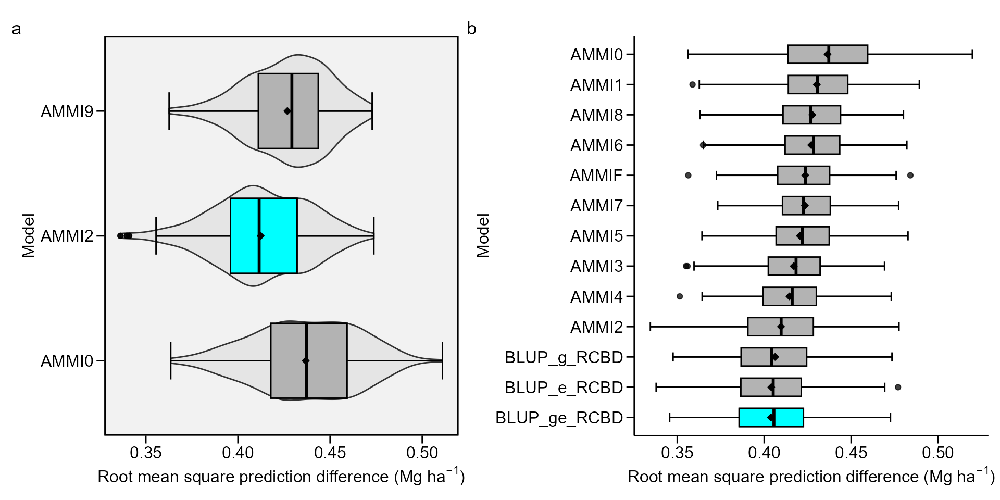

Cross-validation procedures for AMMI and BLUP
Tiago Olivoto
2024-11-20
Source:vignettes/vignettes_cross-validation.Rmd
vignettes_cross-validation.RmdGetting started
In this section, we will use the data in data_ge. For
more information, please, see ?data_ge. Other data sets can
be used provided that the following columns are in the dataset:
environment, genotype, block/replicate and response variable(s). See the
section Rendering engine to know how HTML
tables were generated.
Predictive accuracy
The predictive accucary of both AMMI and BLUP models may be obtained
using a cross-validation procedure implemented by the functions
cv_ammif() and cv_blup() The
cv_ammif() function provides a complete cross-validation
procedure for all member of AMMI model family (AMMI0-AMMIF) using
replicate-based data, according to the diagram below. Automatically the
first validation is carried out considering the AMMIF (all possible axis
used). Considering this model, the original data set is split up into
two sets: training set and validation set.
The training set has all combinations (genotype x environment) with
the number of replications informed in nrepval argument.
The validation set has one replication that were not included in the
training set. The splitting of the data set into training and validation
sets depends on the design considered. For a Randomized Complete Block
Design (default option) and the procedure we used in the article,
completely blocks are randomly selected within environments, as
suggested by Piepho (1994). The remaining block serves as
validation data. If design = "CRD" is informed, thus
declaring that a completely randomized design was used, single
observations are randomized for each treatment (genotype-by-environment
combination). This is the same procedure suggested by Gauch and Zobel (1988). The estimated values for each
member of the AMMI model family in each re-sampling cycle are compared
with the observed values in the validation data. Then, the Root Mean
Square Prediction Difference is computed as follows:
where
is the model predicted value; and
is the observed value in the validation set. The number of random
selection of blocks/replicates (n) is defined in the argument
nboot. At the end of the n cycles for all models,
a list with all estimated RMSPD and the average of RMSPD is
returned.
Cross-validation for AMMI model
The following code computes the cross-validation of the oat data using the AMMI model. There are two options for doing that. The first is to perform the cross-validation for a specific member of the AMMI-family model. The second (and more realistic) is to perform the cross-validation for all AMMI-family models in the same procedure.
Declaring the number of axes
The function cv_ammi() is used to compute a
cross-validation procedure for the AMMI0, AMMI2 and AMMIF (9 axes)
models.
library(metan)
AMMI0 <- cv_ammi(data_ge, ENV, GEN, REP, GY, naxis = 0) # AMMI0
# Validating 1 of 200 sets | | 0% 00:00:00 Validating 2 of 200 sets | | 1% 00:00:01 Validating 3 of 200 sets |= | 2% 00:00:02 Validating 4 of 200 sets |= | 2% 00:00:02 Validating 5 of 200 sets |= | 2% 00:00:03 Validating 6 of 200 sets |= | 3% 00:00:04 Validating 7 of 200 sets |= | 4% 00:00:04 Validating 8 of 200 sets |== | 4% 00:00:05 Validating 9 of 200 sets |== | 4% 00:00:06 Validating 10 of 200 sets |== | 5% 00:00:06 Validating 11 of 200 sets |== | 6% 00:00:07 Validating 12 of 200 sets |== | 6% 00:00:08 Validating 13 of 200 sets |== | 6% 00:00:08 Validating 14 of 200 sets |=== | 7% 00:00:09 Validating 15 of 200 sets |=== | 8% 00:00:10 Validating 16 of 200 sets |=== | 8% 00:00:10 Validating 17 of 200 sets |=== | 8% 00:00:11 Validating 18 of 200 sets |=== | 9% 00:00:11 Validating 19 of 200 sets |==== | 10% 00:00:12 Validating 20 of 200 sets |==== | 10% 00:00:13 Validating 21 of 200 sets |==== | 10% 00:00:14 Validating 22 of 200 sets |==== | 11% 00:00:14 Validating 23 of 200 sets |==== | 12% 00:00:15 Validating 24 of 200 sets |===== | 12% 00:00:16 Validating 25 of 200 sets |===== | 12% 00:00:16 Validating 26 of 200 sets |===== | 13% 00:00:17 Validating 27 of 200 sets |===== | 14% 00:00:17 Validating 28 of 200 sets |===== | 14% 00:00:18 Validating 29 of 200 sets |====== | 14% 00:00:19 Validating 30 of 200 sets |====== | 15% 00:00:20 Validating 31 of 200 sets |====== | 16% 00:00:20 Validating 32 of 200 sets |====== | 16% 00:00:21 Validating 33 of 200 sets |====== | 16% 00:00:21 Validating 34 of 200 sets |====== | 17% 00:00:22 Validating 35 of 200 sets |======= | 18% 00:00:23 Validating 36 of 200 sets |======= | 18% 00:00:23 Validating 37 of 200 sets |======= | 18% 00:00:24 Validating 38 of 200 sets |======= | 19% 00:00:24 Validating 39 of 200 sets |======= | 20% 00:00:25 Validating 40 of 200 sets |======== | 20% 00:00:26 Validating 41 of 200 sets |======== | 20% 00:00:26 Validating 42 of 200 sets |======== | 21% 00:00:27 Validating 43 of 200 sets |======== | 22% 00:00:27 Validating 44 of 200 sets |======== | 22% 00:00:28 Validating 45 of 200 sets |========= | 22% 00:00:29 Validating 46 of 200 sets |========= | 23% 00:00:29 Validating 47 of 200 sets |========= | 24% 00:00:30 Validating 48 of 200 sets |========= | 24% 00:00:31 Validating 49 of 200 sets |========= | 24% 00:00:31 Validating 50 of 200 sets |========== | 25% 00:00:32 Validating 51 of 200 sets |========== | 26% 00:00:33 Validating 52 of 200 sets |========== | 26% 00:00:33 Validating 53 of 200 sets |========== | 26% 00:00:34 Validating 54 of 200 sets |========== | 27% 00:00:35 Validating 55 of 200 sets |========== | 28% 00:00:35 Validating 56 of 200 sets |=========== | 28% 00:00:36 Validating 57 of 200 sets |=========== | 28% 00:00:36 Validating 58 of 200 sets |=========== | 29% 00:00:37 Validating 59 of 200 sets |=========== | 30% 00:00:38 Validating 60 of 200 sets |=========== | 30% 00:00:38 Validating 61 of 200 sets |============ | 30% 00:00:39 Validating 62 of 200 sets |============ | 31% 00:00:40 Validating 63 of 200 sets |============ | 32% 00:00:40 Validating 64 of 200 sets |============ | 32% 00:00:41 Validating 65 of 200 sets |============ | 32% 00:00:42 Validating 66 of 200 sets |============= | 33% 00:00:42 Validating 67 of 200 sets |============= | 34% 00:00:43 Validating 68 of 200 sets |============= | 34% 00:00:44 Validating 69 of 200 sets |============= | 34% 00:00:44 Validating 70 of 200 sets |============= | 35% 00:00:45 Validating 71 of 200 sets |============= | 36% 00:00:46 Validating 72 of 200 sets |============== | 36% 00:00:46 Validating 73 of 200 sets |============== | 36% 00:00:47 Validating 74 of 200 sets |============== | 37% 00:00:47 Validating 75 of 200 sets |============== | 38% 00:00:48 Validating 76 of 200 sets |============== | 38% 00:00:49 Validating 77 of 200 sets |=============== | 38% 00:00:50 Validating 78 of 200 sets |=============== | 39% 00:00:50 Validating 79 of 200 sets |=============== | 40% 00:00:51 Validating 80 of 200 sets |=============== | 40% 00:00:51 Validating 81 of 200 sets |=============== | 40% 00:00:52 Validating 82 of 200 sets |================ | 41% 00:00:53 Validating 83 of 200 sets |================ | 42% 00:00:53 Validating 84 of 200 sets |================ | 42% 00:00:54 Validating 85 of 200 sets |================ | 42% 00:00:55 Validating 86 of 200 sets |================ | 43% 00:00:55 Validating 87 of 200 sets |================= | 44% 00:00:56 Validating 88 of 200 sets |================= | 44% 00:00:57 Validating 89 of 200 sets |================= | 44% 00:00:57 Validating 90 of 200 sets |================= | 45% 00:00:58 Validating 91 of 200 sets |================= | 46% 00:00:59 Validating 92 of 200 sets |================= | 46% 00:00:59 Validating 93 of 200 sets |================== | 46% 00:01:00 Validating 94 of 200 sets |================== | 47% 00:01:01 Validating 95 of 200 sets |================== | 48% 00:01:01 Validating 96 of 200 sets |================== | 48% 00:01:02 Validating 97 of 200 sets |================== | 48% 00:01:02 Validating 98 of 200 sets |=================== | 49% 00:01:03 Validating 99 of 200 sets |=================== | 50% 00:01:04 Validating 100 of 200 sets |================== | 50% 00:01:05 Validating 101 of 200 sets |=================== | 50% 00:01:05 Validating 102 of 200 sets |=================== | 51% 00:01:06 Validating 103 of 200 sets |=================== | 52% 00:01:07 Validating 104 of 200 sets |=================== | 52% 00:01:07 Validating 105 of 200 sets |=================== | 52% 00:01:08 Validating 106 of 200 sets |==================== | 53% 00:01:08 Validating 107 of 200 sets |==================== | 54% 00:01:09 Validating 108 of 200 sets |==================== | 54% 00:01:10 Validating 109 of 200 sets |==================== | 55% 00:01:10 Validating 110 of 200 sets |==================== | 55% 00:01:11 Validating 111 of 200 sets |===================== | 56% 00:01:12 Validating 112 of 200 sets |===================== | 56% 00:01:12 Validating 113 of 200 sets |===================== | 56% 00:01:14 Validating 114 of 200 sets |===================== | 57% 00:01:15 Validating 115 of 200 sets |===================== | 57% 00:01:15 Validating 116 of 200 sets |===================== | 58% 00:01:16 Validating 117 of 200 sets |====================== | 58% 00:01:17 Validating 118 of 200 sets |====================== | 59% 00:01:18 Validating 119 of 200 sets |====================== | 60% 00:01:18 Validating 120 of 200 sets |====================== | 60% 00:01:19 Validating 121 of 200 sets |====================== | 60% 00:01:20 Validating 122 of 200 sets |======================= | 61% 00:01:20 Validating 123 of 200 sets |======================= | 62% 00:01:21 Validating 124 of 200 sets |======================= | 62% 00:01:22 Validating 125 of 200 sets |======================= | 62% 00:01:22 Validating 126 of 200 sets |======================= | 63% 00:01:23 Validating 127 of 200 sets |======================= | 64% 00:01:23 Validating 128 of 200 sets |======================== | 64% 00:01:24 Validating 129 of 200 sets |======================== | 64% 00:01:25 Validating 130 of 200 sets |======================== | 65% 00:01:25 Validating 131 of 200 sets |======================== | 66% 00:01:26 Validating 132 of 200 sets |======================== | 66% 00:01:27 Validating 133 of 200 sets |========================= | 66% 00:01:27 Validating 134 of 200 sets |========================= | 67% 00:01:28 Validating 135 of 200 sets |========================= | 68% 00:01:29 Validating 136 of 200 sets |========================= | 68% 00:01:29 Validating 137 of 200 sets |========================= | 68% 00:01:30 Validating 138 of 200 sets |========================== | 69% 00:01:31 Validating 139 of 200 sets |========================== | 70% 00:01:31 Validating 140 of 200 sets |========================== | 70% 00:01:32 Validating 141 of 200 sets |========================== | 70% 00:01:33 Validating 142 of 200 sets |========================== | 71% 00:01:33 Validating 143 of 200 sets |========================== | 72% 00:01:34 Validating 144 of 200 sets |=========================== | 72% 00:01:35 Validating 145 of 200 sets |=========================== | 72% 00:01:35 Validating 146 of 200 sets |=========================== | 73% 00:01:36 Validating 147 of 200 sets |=========================== | 74% 00:01:37 Validating 148 of 200 sets |=========================== | 74% 00:01:37 Validating 149 of 200 sets |============================ | 74% 00:01:38 Validating 150 of 200 sets |============================ | 75% 00:01:38 Validating 151 of 200 sets |============================ | 76% 00:01:39 Validating 152 of 200 sets |============================ | 76% 00:01:40 Validating 153 of 200 sets |============================ | 76% 00:01:41 Validating 154 of 200 sets |============================ | 77% 00:01:41 Validating 155 of 200 sets |============================= | 78% 00:01:42 Validating 156 of 200 sets |============================= | 78% 00:01:42 Validating 157 of 200 sets |============================= | 78% 00:01:43 Validating 158 of 200 sets |============================= | 79% 00:01:44 Validating 159 of 200 sets |============================= | 80% 00:01:44 Validating 160 of 200 sets |============================== | 80% 00:01:45 Validating 161 of 200 sets |============================== | 80% 00:01:46 Validating 162 of 200 sets |============================== | 81% 00:01:46 Validating 163 of 200 sets |============================== | 82% 00:01:47 Validating 164 of 200 sets |============================== | 82% 00:01:48 Validating 165 of 200 sets |=============================== | 82% 00:01:48 Validating 166 of 200 sets |=============================== | 83% 00:01:49 Validating 167 of 200 sets |=============================== | 84% 00:01:50 Validating 168 of 200 sets |=============================== | 84% 00:01:50 Validating 169 of 200 sets |=============================== | 84% 00:01:51 Validating 170 of 200 sets |=============================== | 85% 00:01:52 Validating 171 of 200 sets |================================ | 86% 00:01:52 Validating 172 of 200 sets |================================ | 86% 00:01:53 Validating 173 of 200 sets |================================ | 86% 00:01:54 Validating 174 of 200 sets |================================ | 87% 00:01:54 Validating 175 of 200 sets |================================ | 88% 00:01:55 Validating 176 of 200 sets |================================= | 88% 00:01:56 Validating 177 of 200 sets |================================= | 88% 00:01:56 Validating 178 of 200 sets |================================= | 89% 00:01:57 Validating 179 of 200 sets |================================= | 90% 00:01:58 Validating 180 of 200 sets |================================= | 90% 00:01:58 Validating 181 of 200 sets |================================= | 90% 00:01:59 Validating 182 of 200 sets |================================== | 91% 00:02:00 Validating 183 of 200 sets |================================== | 92% 00:02:00 Validating 184 of 200 sets |================================== | 92% 00:02:01 Validating 185 of 200 sets |================================== | 92% 00:02:02 Validating 186 of 200 sets |================================== | 93% 00:02:02 Validating 187 of 200 sets |=================================== | 94% 00:02:03 Validating 188 of 200 sets |=================================== | 94% 00:02:04 Validating 189 of 200 sets |=================================== | 94% 00:02:04 Validating 190 of 200 sets |=================================== | 95% 00:02:05 Validating 191 of 200 sets |=================================== | 96% 00:02:05 Validating 192 of 200 sets |==================================== | 96% 00:02:06 Validating 193 of 200 sets |==================================== | 96% 00:02:07 Validating 194 of 200 sets |==================================== | 97% 00:02:07 Validating 195 of 200 sets |==================================== | 98% 00:02:08 Validating 196 of 200 sets |==================================== | 98% 00:02:09 Validating 197 of 200 sets |==================================== | 98% 00:02:09 Validating 198 of 200 sets |=====================================| 99% 00:02:10 Validating 199 of 200 sets |=====================================| 100% 00:02:11 Validating 200 of 200 sets |=====================================| 100% 00:02:11
AMMI2 <- cv_ammi(data_ge, ENV, GEN, REP, GY, naxis = 2) # AMMI2
# Validating 1 of 200 sets | | 0% 00:00:00 Validating 2 of 200 sets | | 1% 00:00:01 Validating 3 of 200 sets |= | 2% 00:00:02 Validating 4 of 200 sets |= | 2% 00:00:02 Validating 5 of 200 sets |= | 2% 00:00:03 Validating 6 of 200 sets |= | 3% 00:00:03 Validating 7 of 200 sets |= | 4% 00:00:04 Validating 8 of 200 sets |== | 4% 00:00:05 Validating 9 of 200 sets |== | 4% 00:00:05 Validating 10 of 200 sets |== | 5% 00:00:06 Validating 11 of 200 sets |== | 6% 00:00:07 Validating 12 of 200 sets |== | 6% 00:00:07 Validating 13 of 200 sets |== | 6% 00:00:08 Validating 14 of 200 sets |=== | 7% 00:00:09 Validating 15 of 200 sets |=== | 8% 00:00:09 Validating 16 of 200 sets |=== | 8% 00:00:10 Validating 17 of 200 sets |=== | 8% 00:00:10 Validating 18 of 200 sets |=== | 9% 00:00:11 Validating 19 of 200 sets |==== | 10% 00:00:12 Validating 20 of 200 sets |==== | 10% 00:00:12 Validating 21 of 200 sets |==== | 10% 00:00:13 Validating 22 of 200 sets |==== | 11% 00:00:14 Validating 23 of 200 sets |==== | 12% 00:00:14 Validating 24 of 200 sets |===== | 12% 00:00:15 Validating 25 of 200 sets |===== | 12% 00:00:16 Validating 26 of 200 sets |===== | 13% 00:00:16 Validating 27 of 200 sets |===== | 14% 00:00:17 Validating 28 of 200 sets |===== | 14% 00:00:18 Validating 29 of 200 sets |====== | 14% 00:00:18 Validating 30 of 200 sets |====== | 15% 00:00:19 Validating 31 of 200 sets |====== | 16% 00:00:19 Validating 32 of 200 sets |====== | 16% 00:00:20 Validating 33 of 200 sets |====== | 16% 00:00:21 Validating 34 of 200 sets |====== | 17% 00:00:22 Validating 35 of 200 sets |======= | 18% 00:00:22 Validating 36 of 200 sets |======= | 18% 00:00:23 Validating 37 of 200 sets |======= | 18% 00:00:23 Validating 38 of 200 sets |======= | 19% 00:00:24 Validating 39 of 200 sets |======= | 20% 00:00:25 Validating 40 of 200 sets |======== | 20% 00:00:26 Validating 41 of 200 sets |======== | 20% 00:00:26 Validating 42 of 200 sets |======== | 21% 00:00:27 Validating 43 of 200 sets |======== | 22% 00:00:27 Validating 44 of 200 sets |======== | 22% 00:00:28 Validating 45 of 200 sets |========= | 22% 00:00:29 Validating 46 of 200 sets |========= | 23% 00:00:29 Validating 47 of 200 sets |========= | 24% 00:00:30 Validating 48 of 200 sets |========= | 24% 00:00:31 Validating 49 of 200 sets |========= | 24% 00:00:31 Validating 50 of 200 sets |========== | 25% 00:00:32 Validating 51 of 200 sets |========== | 26% 00:00:32 Validating 52 of 200 sets |========== | 26% 00:00:33 Validating 53 of 200 sets |========== | 26% 00:00:34 Validating 54 of 200 sets |========== | 27% 00:00:34 Validating 55 of 200 sets |========== | 28% 00:00:35 Validating 56 of 200 sets |=========== | 28% 00:00:36 Validating 57 of 200 sets |=========== | 28% 00:00:36 Validating 58 of 200 sets |=========== | 29% 00:00:37 Validating 59 of 200 sets |=========== | 30% 00:00:37 Validating 60 of 200 sets |=========== | 30% 00:00:38 Validating 61 of 200 sets |============ | 30% 00:00:39 Validating 62 of 200 sets |============ | 31% 00:00:39 Validating 63 of 200 sets |============ | 32% 00:00:40 Validating 64 of 200 sets |============ | 32% 00:00:41 Validating 65 of 200 sets |============ | 32% 00:00:41 Validating 66 of 200 sets |============= | 33% 00:00:42 Validating 67 of 200 sets |============= | 34% 00:00:42 Validating 68 of 200 sets |============= | 34% 00:00:43 Validating 69 of 200 sets |============= | 34% 00:00:44 Validating 70 of 200 sets |============= | 35% 00:00:44 Validating 71 of 200 sets |============= | 36% 00:00:45 Validating 72 of 200 sets |============== | 36% 00:00:46 Validating 73 of 200 sets |============== | 36% 00:00:46 Validating 74 of 200 sets |============== | 37% 00:00:47 Validating 75 of 200 sets |============== | 38% 00:00:48 Validating 76 of 200 sets |============== | 38% 00:00:48 Validating 77 of 200 sets |=============== | 38% 00:00:49 Validating 78 of 200 sets |=============== | 39% 00:00:50 Validating 79 of 200 sets |=============== | 40% 00:00:50 Validating 80 of 200 sets |=============== | 40% 00:00:51 Validating 81 of 200 sets |=============== | 40% 00:00:52 Validating 82 of 200 sets |================ | 41% 00:00:52 Validating 83 of 200 sets |================ | 42% 00:00:53 Validating 84 of 200 sets |================ | 42% 00:00:54 Validating 85 of 200 sets |================ | 42% 00:00:54 Validating 86 of 200 sets |================ | 43% 00:00:55 Validating 87 of 200 sets |================= | 44% 00:00:55 Validating 88 of 200 sets |================= | 44% 00:00:56 Validating 89 of 200 sets |================= | 44% 00:00:57 Validating 90 of 200 sets |================= | 45% 00:00:57 Validating 91 of 200 sets |================= | 46% 00:00:58 Validating 92 of 200 sets |================= | 46% 00:00:58 Validating 93 of 200 sets |================== | 46% 00:00:59 Validating 94 of 200 sets |================== | 47% 00:01:00 Validating 95 of 200 sets |================== | 48% 00:01:00 Validating 96 of 200 sets |================== | 48% 00:01:01 Validating 97 of 200 sets |================== | 48% 00:01:02 Validating 98 of 200 sets |=================== | 49% 00:01:02 Validating 99 of 200 sets |=================== | 50% 00:01:03 Validating 100 of 200 sets |================== | 50% 00:01:04 Validating 101 of 200 sets |=================== | 50% 00:01:04 Validating 102 of 200 sets |=================== | 51% 00:01:05 Validating 103 of 200 sets |=================== | 52% 00:01:06 Validating 104 of 200 sets |=================== | 52% 00:01:06 Validating 105 of 200 sets |=================== | 52% 00:01:07 Validating 106 of 200 sets |==================== | 53% 00:01:08 Validating 107 of 200 sets |==================== | 54% 00:01:08 Validating 108 of 200 sets |==================== | 54% 00:01:09 Validating 109 of 200 sets |==================== | 55% 00:01:09 Validating 110 of 200 sets |==================== | 55% 00:01:10 Validating 111 of 200 sets |===================== | 56% 00:01:11 Validating 112 of 200 sets |===================== | 56% 00:01:12 Validating 113 of 200 sets |===================== | 56% 00:01:12 Validating 114 of 200 sets |===================== | 57% 00:01:13 Validating 115 of 200 sets |===================== | 57% 00:01:13 Validating 116 of 200 sets |===================== | 58% 00:01:14 Validating 117 of 200 sets |====================== | 58% 00:01:15 Validating 118 of 200 sets |====================== | 59% 00:01:15 Validating 119 of 200 sets |====================== | 60% 00:01:16 Validating 120 of 200 sets |====================== | 60% 00:01:17 Validating 121 of 200 sets |====================== | 60% 00:01:17 Validating 122 of 200 sets |======================= | 61% 00:01:18 Validating 123 of 200 sets |======================= | 62% 00:01:18 Validating 124 of 200 sets |======================= | 62% 00:01:19 Validating 125 of 200 sets |======================= | 62% 00:01:20 Validating 126 of 200 sets |======================= | 63% 00:01:20 Validating 127 of 200 sets |======================= | 64% 00:01:21 Validating 128 of 200 sets |======================== | 64% 00:01:22 Validating 129 of 200 sets |======================== | 64% 00:01:22 Validating 130 of 200 sets |======================== | 65% 00:01:23 Validating 131 of 200 sets |======================== | 66% 00:01:23 Validating 132 of 200 sets |======================== | 66% 00:01:24 Validating 133 of 200 sets |========================= | 66% 00:01:25 Validating 134 of 200 sets |========================= | 67% 00:01:25 Validating 135 of 200 sets |========================= | 68% 00:01:26 Validating 136 of 200 sets |========================= | 68% 00:01:27 Validating 137 of 200 sets |========================= | 68% 00:01:27 Validating 138 of 200 sets |========================== | 69% 00:01:28 Validating 139 of 200 sets |========================== | 70% 00:01:29 Validating 140 of 200 sets |========================== | 70% 00:01:29 Validating 141 of 200 sets |========================== | 70% 00:01:30 Validating 142 of 200 sets |========================== | 71% 00:01:30 Validating 143 of 200 sets |========================== | 72% 00:01:31 Validating 144 of 200 sets |=========================== | 72% 00:01:32 Validating 145 of 200 sets |=========================== | 72% 00:01:32 Validating 146 of 200 sets |=========================== | 73% 00:01:33 Validating 147 of 200 sets |=========================== | 74% 00:01:34 Validating 148 of 200 sets |=========================== | 74% 00:01:34 Validating 149 of 200 sets |============================ | 74% 00:01:35 Validating 150 of 200 sets |============================ | 75% 00:01:36 Validating 151 of 200 sets |============================ | 76% 00:01:36 Validating 152 of 200 sets |============================ | 76% 00:01:37 Validating 153 of 200 sets |============================ | 76% 00:01:38 Validating 154 of 200 sets |============================ | 77% 00:01:38 Validating 155 of 200 sets |============================= | 78% 00:01:39 Validating 156 of 200 sets |============================= | 78% 00:01:40 Validating 157 of 200 sets |============================= | 78% 00:01:40 Validating 158 of 200 sets |============================= | 79% 00:01:41 Validating 159 of 200 sets |============================= | 80% 00:01:41 Validating 160 of 200 sets |============================== | 80% 00:01:42 Validating 161 of 200 sets |============================== | 80% 00:01:43 Validating 162 of 200 sets |============================== | 81% 00:01:43 Validating 163 of 200 sets |============================== | 82% 00:01:44 Validating 164 of 200 sets |============================== | 82% 00:01:45 Validating 165 of 200 sets |=============================== | 82% 00:01:45 Validating 166 of 200 sets |=============================== | 83% 00:01:46 Validating 167 of 200 sets |=============================== | 84% 00:01:47 Validating 168 of 200 sets |=============================== | 84% 00:01:47 Validating 169 of 200 sets |=============================== | 84% 00:01:48 Validating 170 of 200 sets |=============================== | 85% 00:01:49 Validating 171 of 200 sets |================================ | 86% 00:01:49 Validating 172 of 200 sets |================================ | 86% 00:01:50 Validating 173 of 200 sets |================================ | 86% 00:01:51 Validating 174 of 200 sets |================================ | 87% 00:01:51 Validating 175 of 200 sets |================================ | 88% 00:01:52 Validating 176 of 200 sets |================================= | 88% 00:01:52 Validating 177 of 200 sets |================================= | 88% 00:01:53 Validating 178 of 200 sets |================================= | 89% 00:01:54 Validating 179 of 200 sets |================================= | 90% 00:01:54 Validating 180 of 200 sets |================================= | 90% 00:01:55 Validating 181 of 200 sets |================================= | 90% 00:01:56 Validating 182 of 200 sets |================================== | 91% 00:01:56 Validating 183 of 200 sets |================================== | 92% 00:01:57 Validating 184 of 200 sets |================================== | 92% 00:01:58 Validating 185 of 200 sets |================================== | 92% 00:01:58 Validating 186 of 200 sets |================================== | 93% 00:01:59 Validating 187 of 200 sets |=================================== | 94% 00:02:00 Validating 188 of 200 sets |=================================== | 94% 00:02:00 Validating 189 of 200 sets |=================================== | 94% 00:02:01 Validating 190 of 200 sets |=================================== | 95% 00:02:02 Validating 191 of 200 sets |=================================== | 96% 00:02:02 Validating 192 of 200 sets |==================================== | 96% 00:02:03 Validating 193 of 200 sets |==================================== | 96% 00:02:04 Validating 194 of 200 sets |==================================== | 97% 00:02:04 Validating 195 of 200 sets |==================================== | 98% 00:02:05 Validating 196 of 200 sets |==================================== | 98% 00:02:05 Validating 197 of 200 sets |==================================== | 98% 00:02:06 Validating 198 of 200 sets |=====================================| 99% 00:02:07 Validating 199 of 200 sets |=====================================| 100% 00:02:07 Validating 200 of 200 sets |=====================================| 100% 00:02:08
AMMI9 <- cv_ammi(data_ge, ENV, GEN, REP, GY, naxis = 9) # AMMIF
# Validating 1 of 200 sets | | 0% 00:00:00 Validating 2 of 200 sets | | 1% 00:00:01 Validating 3 of 200 sets |= | 2% 00:00:02 Validating 4 of 200 sets |= | 2% 00:00:02 Validating 5 of 200 sets |= | 2% 00:00:03 Validating 6 of 200 sets |= | 3% 00:00:04 Validating 7 of 200 sets |= | 4% 00:00:04 Validating 8 of 200 sets |== | 4% 00:00:05 Validating 9 of 200 sets |== | 4% 00:00:05 Validating 10 of 200 sets |== | 5% 00:00:06 Validating 11 of 200 sets |== | 6% 00:00:07 Validating 12 of 200 sets |== | 6% 00:00:07 Validating 13 of 200 sets |== | 6% 00:00:08 Validating 14 of 200 sets |=== | 7% 00:00:09 Validating 15 of 200 sets |=== | 8% 00:00:09 Validating 16 of 200 sets |=== | 8% 00:00:10 Validating 17 of 200 sets |=== | 8% 00:00:11 Validating 18 of 200 sets |=== | 9% 00:00:11 Validating 19 of 200 sets |==== | 10% 00:00:12 Validating 20 of 200 sets |==== | 10% 00:00:13 Validating 21 of 200 sets |==== | 10% 00:00:13 Validating 22 of 200 sets |==== | 11% 00:00:14 Validating 23 of 200 sets |==== | 12% 00:00:15 Validating 24 of 200 sets |===== | 12% 00:00:15 Validating 25 of 200 sets |===== | 12% 00:00:16 Validating 26 of 200 sets |===== | 13% 00:00:17 Validating 27 of 200 sets |===== | 14% 00:00:17 Validating 28 of 200 sets |===== | 14% 00:00:18 Validating 29 of 200 sets |====== | 14% 00:00:18 Validating 30 of 200 sets |====== | 15% 00:00:19 Validating 31 of 200 sets |====== | 16% 00:00:20 Validating 32 of 200 sets |====== | 16% 00:00:20 Validating 33 of 200 sets |====== | 16% 00:00:21 Validating 34 of 200 sets |====== | 17% 00:00:22 Validating 35 of 200 sets |======= | 18% 00:00:22 Validating 36 of 200 sets |======= | 18% 00:00:23 Validating 37 of 200 sets |======= | 18% 00:00:24 Validating 38 of 200 sets |======= | 19% 00:00:24 Validating 39 of 200 sets |======= | 20% 00:00:25 Validating 40 of 200 sets |======== | 20% 00:00:26 Validating 41 of 200 sets |======== | 20% 00:00:26 Validating 42 of 200 sets |======== | 21% 00:00:27 Validating 43 of 200 sets |======== | 22% 00:00:28 Validating 44 of 200 sets |======== | 22% 00:00:28 Validating 45 of 200 sets |========= | 22% 00:00:29 Validating 46 of 200 sets |========= | 23% 00:00:30 Validating 47 of 200 sets |========= | 24% 00:00:30 Validating 48 of 200 sets |========= | 24% 00:00:31 Validating 49 of 200 sets |========= | 24% 00:00:32 Validating 50 of 200 sets |========== | 25% 00:00:32 Validating 51 of 200 sets |========== | 26% 00:00:33 Validating 52 of 200 sets |========== | 26% 00:00:33 Validating 53 of 200 sets |========== | 26% 00:00:34 Validating 54 of 200 sets |========== | 27% 00:00:35 Validating 55 of 200 sets |========== | 28% 00:00:36 Validating 56 of 200 sets |=========== | 28% 00:00:36 Validating 57 of 200 sets |=========== | 28% 00:00:37 Validating 58 of 200 sets |=========== | 29% 00:00:38 Validating 59 of 200 sets |=========== | 30% 00:00:38 Validating 60 of 200 sets |=========== | 30% 00:00:39 Validating 61 of 200 sets |============ | 30% 00:00:40 Validating 62 of 200 sets |============ | 31% 00:00:40 Validating 63 of 200 sets |============ | 32% 00:00:41 Validating 64 of 200 sets |============ | 32% 00:00:42 Validating 65 of 200 sets |============ | 32% 00:00:42 Validating 66 of 200 sets |============= | 33% 00:00:43 Validating 67 of 200 sets |============= | 34% 00:00:43 Validating 68 of 200 sets |============= | 34% 00:00:44 Validating 69 of 200 sets |============= | 34% 00:00:45 Validating 70 of 200 sets |============= | 35% 00:00:45 Validating 71 of 200 sets |============= | 36% 00:00:46 Validating 72 of 200 sets |============== | 36% 00:00:46 Validating 73 of 200 sets |============== | 36% 00:00:47 Validating 74 of 200 sets |============== | 37% 00:00:48 Validating 75 of 200 sets |============== | 38% 00:00:48 Validating 76 of 200 sets |============== | 38% 00:00:49 Validating 77 of 200 sets |=============== | 38% 00:00:50 Validating 78 of 200 sets |=============== | 39% 00:00:50 Validating 79 of 200 sets |=============== | 40% 00:00:51 Validating 80 of 200 sets |=============== | 40% 00:00:52 Validating 81 of 200 sets |=============== | 40% 00:00:52 Validating 82 of 200 sets |================ | 41% 00:00:53 Validating 83 of 200 sets |================ | 42% 00:00:53 Validating 84 of 200 sets |================ | 42% 00:00:54 Validating 85 of 200 sets |================ | 42% 00:00:55 Validating 86 of 200 sets |================ | 43% 00:00:55 Validating 87 of 200 sets |================= | 44% 00:00:56 Validating 88 of 200 sets |================= | 44% 00:00:57 Validating 89 of 200 sets |================= | 44% 00:00:57 Validating 90 of 200 sets |================= | 45% 00:00:58 Validating 91 of 200 sets |================= | 46% 00:00:59 Validating 92 of 200 sets |================= | 46% 00:00:59 Validating 93 of 200 sets |================== | 46% 00:01:00 Validating 94 of 200 sets |================== | 47% 00:01:01 Validating 95 of 200 sets |================== | 48% 00:01:01 Validating 96 of 200 sets |================== | 48% 00:01:02 Validating 97 of 200 sets |================== | 48% 00:01:02 Validating 98 of 200 sets |=================== | 49% 00:01:03 Validating 99 of 200 sets |=================== | 50% 00:01:04 Validating 100 of 200 sets |================== | 50% 00:01:04 Validating 101 of 200 sets |=================== | 50% 00:01:05 Validating 102 of 200 sets |=================== | 51% 00:01:06 Validating 103 of 200 sets |=================== | 52% 00:01:06 Validating 104 of 200 sets |=================== | 52% 00:01:07 Validating 105 of 200 sets |=================== | 52% 00:01:08 Validating 106 of 200 sets |==================== | 53% 00:01:08 Validating 107 of 200 sets |==================== | 54% 00:01:09 Validating 108 of 200 sets |==================== | 54% 00:01:10 Validating 109 of 200 sets |==================== | 55% 00:01:10 Validating 110 of 200 sets |==================== | 55% 00:01:11 Validating 111 of 200 sets |===================== | 56% 00:01:12 Validating 112 of 200 sets |===================== | 56% 00:01:12 Validating 113 of 200 sets |===================== | 56% 00:01:13 Validating 114 of 200 sets |===================== | 57% 00:01:13 Validating 115 of 200 sets |===================== | 57% 00:01:14 Validating 116 of 200 sets |===================== | 58% 00:01:15 Validating 117 of 200 sets |====================== | 58% 00:01:15 Validating 118 of 200 sets |====================== | 59% 00:01:16 Validating 119 of 200 sets |====================== | 60% 00:01:17 Validating 120 of 200 sets |====================== | 60% 00:01:17 Validating 121 of 200 sets |====================== | 60% 00:01:18 Validating 122 of 200 sets |======================= | 61% 00:01:19 Validating 123 of 200 sets |======================= | 62% 00:01:19 Validating 124 of 200 sets |======================= | 62% 00:01:20 Validating 125 of 200 sets |======================= | 62% 00:01:21 Validating 126 of 200 sets |======================= | 63% 00:01:21 Validating 127 of 200 sets |======================= | 64% 00:01:22 Validating 128 of 200 sets |======================== | 64% 00:01:23 Validating 129 of 200 sets |======================== | 64% 00:01:23 Validating 130 of 200 sets |======================== | 65% 00:01:24 Validating 131 of 200 sets |======================== | 66% 00:01:25 Validating 132 of 200 sets |======================== | 66% 00:01:25 Validating 133 of 200 sets |========================= | 66% 00:01:26 Validating 134 of 200 sets |========================= | 67% 00:01:27 Validating 135 of 200 sets |========================= | 68% 00:01:27 Validating 136 of 200 sets |========================= | 68% 00:01:28 Validating 137 of 200 sets |========================= | 68% 00:01:29 Validating 138 of 200 sets |========================== | 69% 00:01:29 Validating 139 of 200 sets |========================== | 70% 00:01:30 Validating 140 of 200 sets |========================== | 70% 00:01:30 Validating 141 of 200 sets |========================== | 70% 00:01:31 Validating 142 of 200 sets |========================== | 71% 00:01:32 Validating 143 of 200 sets |========================== | 72% 00:01:32 Validating 144 of 200 sets |=========================== | 72% 00:01:33 Validating 145 of 200 sets |=========================== | 72% 00:01:34 Validating 146 of 200 sets |=========================== | 73% 00:01:34 Validating 147 of 200 sets |=========================== | 74% 00:01:35 Validating 148 of 200 sets |=========================== | 74% 00:01:36 Validating 149 of 200 sets |============================ | 74% 00:01:36 Validating 150 of 200 sets |============================ | 75% 00:01:37 Validating 151 of 200 sets |============================ | 76% 00:01:38 Validating 152 of 200 sets |============================ | 76% 00:01:38 Validating 153 of 200 sets |============================ | 76% 00:01:39 Validating 154 of 200 sets |============================ | 77% 00:01:39 Validating 155 of 200 sets |============================= | 78% 00:01:40 Validating 156 of 200 sets |============================= | 78% 00:01:41 Validating 157 of 200 sets |============================= | 78% 00:01:41 Validating 158 of 200 sets |============================= | 79% 00:01:42 Validating 159 of 200 sets |============================= | 80% 00:01:43 Validating 160 of 200 sets |============================== | 80% 00:01:43 Validating 161 of 200 sets |============================== | 80% 00:01:44 Validating 162 of 200 sets |============================== | 81% 00:01:45 Validating 163 of 200 sets |============================== | 82% 00:01:45 Validating 164 of 200 sets |============================== | 82% 00:01:46 Validating 165 of 200 sets |=============================== | 82% 00:01:47 Validating 166 of 200 sets |=============================== | 83% 00:01:47 Validating 167 of 200 sets |=============================== | 84% 00:01:48 Validating 168 of 200 sets |=============================== | 84% 00:01:49 Validating 169 of 200 sets |=============================== | 84% 00:01:49 Validating 170 of 200 sets |=============================== | 85% 00:01:50 Validating 171 of 200 sets |================================ | 86% 00:01:50 Validating 172 of 200 sets |================================ | 86% 00:01:51 Validating 173 of 200 sets |================================ | 86% 00:01:52 Validating 174 of 200 sets |================================ | 87% 00:01:52 Validating 175 of 200 sets |================================ | 88% 00:01:53 Validating 176 of 200 sets |================================= | 88% 00:01:54 Validating 177 of 200 sets |================================= | 88% 00:01:54 Validating 178 of 200 sets |================================= | 89% 00:01:55 Validating 179 of 200 sets |================================= | 90% 00:01:56 Validating 180 of 200 sets |================================= | 90% 00:01:56 Validating 181 of 200 sets |================================= | 90% 00:01:57 Validating 182 of 200 sets |================================== | 91% 00:01:58 Validating 183 of 200 sets |================================== | 92% 00:01:58 Validating 184 of 200 sets |================================== | 92% 00:01:59 Validating 185 of 200 sets |================================== | 92% 00:02:00 Validating 186 of 200 sets |================================== | 93% 00:02:00 Validating 187 of 200 sets |=================================== | 94% 00:02:01 Validating 188 of 200 sets |=================================== | 94% 00:02:02 Validating 189 of 200 sets |=================================== | 94% 00:02:02 Validating 190 of 200 sets |=================================== | 95% 00:02:03 Validating 191 of 200 sets |=================================== | 96% 00:02:04 Validating 192 of 200 sets |==================================== | 96% 00:02:04 Validating 193 of 200 sets |==================================== | 96% 00:02:05 Validating 194 of 200 sets |==================================== | 97% 00:02:06 Validating 195 of 200 sets |==================================== | 98% 00:02:06 Validating 196 of 200 sets |==================================== | 98% 00:02:07 Validating 197 of 200 sets |==================================== | 98% 00:02:08 Validating 198 of 200 sets |=====================================| 99% 00:02:08 Validating 199 of 200 sets |=====================================| 100% 00:02:09 Validating 200 of 200 sets |=====================================| 100% 00:02:10 AMMI0 to AMMIF
The function cv_ammif() is used to compute a
cross-validation procedure for all members of the AMMI-family model. In
this case, AMMI0-AMMI9.
AMMIF <- cv_ammif(data_ge, ENV, GEN, REP, GY)
# 1 of 200 sets using AMMIF | | 0% 00:00:00 2 of 200 sets using AMMIF | | 0% 00:00:01 3 of 200 sets using AMMIF | | 0% 00:00:01 4 of 200 sets using AMMIF | | 0% 00:00:02 5 of 200 sets using AMMIF | | 0% 00:00:03 6 of 200 sets using AMMIF | | 0% 00:00:04 7 of 200 sets using AMMIF | | 0% 00:00:04 8 of 200 sets using AMMIF | | 0% 00:00:05 9 of 200 sets using AMMIF | | 0% 00:00:05 10 of 200 sets using AMMIF | | 0% 00:00:06 11 of 200 sets using AMMIF | | 1% 00:00:07 12 of 200 sets using AMMIF | | 1% 00:00:07 13 of 200 sets using AMMIF | | 1% 00:00:08 14 of 200 sets using AMMIF | | 1% 00:00:09 15 of 200 sets using AMMIF | | 1% 00:00:09 16 of 200 sets using AMMIF | | 1% 00:00:10 17 of 200 sets using AMMIF | | 1% 00:00:10 18 of 200 sets using AMMIF | | 1% 00:00:11 19 of 200 sets using AMMIF | | 1% 00:00:12 20 of 200 sets using AMMIF | | 1% 00:00:12 21 of 200 sets using AMMIF | | 1% 00:00:13 22 of 200 sets using AMMIF | | 1% 00:00:14 23 of 200 sets using AMMIF | | 1% 00:00:14 24 of 200 sets using AMMIF | | 1% 00:00:15 25 of 200 sets using AMMIF | | 1% 00:00:16 26 of 200 sets using AMMIF | | 1% 00:00:16 27 of 200 sets using AMMIF | | 1% 00:00:17 28 of 200 sets using AMMIF |= | 1% 00:00:17 29 of 200 sets using AMMIF |= | 1% 00:00:18 30 of 200 sets using AMMIF |= | 2% 00:00:19 31 of 200 sets using AMMIF |= | 2% 00:00:20 32 of 200 sets using AMMIF |= | 2% 00:00:20 33 of 200 sets using AMMIF |= | 2% 00:00:21 34 of 200 sets using AMMIF |= | 2% 00:00:21 35 of 200 sets using AMMIF |= | 2% 00:00:22 36 of 200 sets using AMMIF |= | 2% 00:00:23 37 of 200 sets using AMMIF |= | 2% 00:00:23 38 of 200 sets using AMMIF |= | 2% 00:00:24 39 of 200 sets using AMMIF |= | 2% 00:00:25 40 of 200 sets using AMMIF |= | 2% 00:00:25 41 of 200 sets using AMMIF |= | 2% 00:00:26 42 of 200 sets using AMMIF |= | 2% 00:00:27 43 of 200 sets using AMMIF |= | 2% 00:00:27 44 of 200 sets using AMMIF |= | 2% 00:00:28 45 of 200 sets using AMMIF |= | 2% 00:00:29 46 of 200 sets using AMMIF |= | 2% 00:00:29 47 of 200 sets using AMMIF |= | 2% 00:00:30 48 of 200 sets using AMMIF |= | 2% 00:00:31 49 of 200 sets using AMMIF |= | 2% 00:00:31 50 of 200 sets using AMMIF |= | 2% 00:00:32 51 of 200 sets using AMMIF |= | 3% 00:00:32 52 of 200 sets using AMMIF |= | 3% 00:00:33 53 of 200 sets using AMMIF |= | 3% 00:00:34 54 of 200 sets using AMMIF |= | 3% 00:00:34 55 of 200 sets using AMMIF |= | 3% 00:00:35 56 of 200 sets using AMMIF |= | 3% 00:00:36 57 of 200 sets using AMMIF |= | 3% 00:00:36 58 of 200 sets using AMMIF |= | 3% 00:00:37 59 of 200 sets using AMMIF |= | 3% 00:00:38 60 of 200 sets using AMMIF |= | 3% 00:00:38 61 of 200 sets using AMMIF |= | 3% 00:00:39 62 of 200 sets using AMMIF |= | 3% 00:00:40 63 of 200 sets using AMMIF |= | 3% 00:00:40 64 of 200 sets using AMMIF |= | 3% 00:00:41 65 of 200 sets using AMMIF |= | 3% 00:00:42 66 of 200 sets using AMMIF |= | 3% 00:00:42 67 of 200 sets using AMMIF |= | 3% 00:00:43 68 of 200 sets using AMMIF |= | 3% 00:00:44 69 of 200 sets using AMMIF |= | 3% 00:00:44 70 of 200 sets using AMMIF |= | 4% 00:00:45 71 of 200 sets using AMMIF |= | 4% 00:00:46 72 of 200 sets using AMMIF |= | 4% 00:00:46 73 of 200 sets using AMMIF |= | 4% 00:00:47 74 of 200 sets using AMMIF |= | 4% 00:00:48 75 of 200 sets using AMMIF |= | 4% 00:00:48 76 of 200 sets using AMMIF |= | 4% 00:00:49 77 of 200 sets using AMMIF |= | 4% 00:00:50 78 of 200 sets using AMMIF |= | 4% 00:00:50 79 of 200 sets using AMMIF |= | 4% 00:00:51 80 of 200 sets using AMMIF |= | 4% 00:00:52 81 of 200 sets using AMMIF |= | 4% 00:00:52 82 of 200 sets using AMMIF |== | 4% 00:00:53 83 of 200 sets using AMMIF |== | 4% 00:00:53 84 of 200 sets using AMMIF |== | 4% 00:00:54 85 of 200 sets using AMMIF |== | 4% 00:00:55 86 of 200 sets using AMMIF |== | 4% 00:00:55 87 of 200 sets using AMMIF |== | 4% 00:00:56 88 of 200 sets using AMMIF |== | 4% 00:00:57 89 of 200 sets using AMMIF |== | 4% 00:00:57 90 of 200 sets using AMMIF |== | 4% 00:00:58 91 of 200 sets using AMMIF |== | 5% 00:00:58 92 of 200 sets using AMMIF |== | 5% 00:00:59 93 of 200 sets using AMMIF |== | 5% 00:01:00 94 of 200 sets using AMMIF |== | 5% 00:01:01 95 of 200 sets using AMMIF |== | 5% 00:01:01 96 of 200 sets using AMMIF |== | 5% 00:01:02 97 of 200 sets using AMMIF |== | 5% 00:01:02 98 of 200 sets using AMMIF |== | 5% 00:01:03 99 of 200 sets using AMMIF |== | 5% 00:01:04 100 of 200 sets using AMMIF |== | 5% 00:01:04 101 of 200 sets using AMMIF |== | 5% 00:01:05 102 of 200 sets using AMMIF |== | 5% 00:01:06 103 of 200 sets using AMMIF |== | 5% 00:01:06 104 of 200 sets using AMMIF |== | 5% 00:01:07 105 of 200 sets using AMMIF |== | 5% 00:01:08 106 of 200 sets using AMMIF |== | 5% 00:01:08 107 of 200 sets using AMMIF |== | 5% 00:01:09 108 of 200 sets using AMMIF |== | 5% 00:01:09 109 of 200 sets using AMMIF |== | 5% 00:01:10 110 of 200 sets using AMMIF |== | 6% 00:01:11 111 of 200 sets using AMMIF |== | 6% 00:01:11 112 of 200 sets using AMMIF |== | 6% 00:01:12 113 of 200 sets using AMMIF |== | 6% 00:01:13 114 of 200 sets using AMMIF |== | 6% 00:01:13 115 of 200 sets using AMMIF |== | 6% 00:01:14 116 of 200 sets using AMMIF |== | 6% 00:01:15 117 of 200 sets using AMMIF |== | 6% 00:01:15 118 of 200 sets using AMMIF |== | 6% 00:01:16 119 of 200 sets using AMMIF |== | 6% 00:01:17 120 of 200 sets using AMMIF |== | 6% 00:01:17 121 of 200 sets using AMMIF |== | 6% 00:01:18 122 of 200 sets using AMMIF |== | 6% 00:01:19 123 of 200 sets using AMMIF |== | 6% 00:01:19 124 of 200 sets using AMMIF |== | 6% 00:01:20 125 of 200 sets using AMMIF |== | 6% 00:01:21 126 of 200 sets using AMMIF |== | 6% 00:01:21 127 of 200 sets using AMMIF |== | 6% 00:01:22 128 of 200 sets using AMMIF |== | 6% 00:01:23 129 of 200 sets using AMMIF |== | 6% 00:01:23 130 of 200 sets using AMMIF |== | 6% 00:01:24 131 of 200 sets using AMMIF |== | 7% 00:01:25 132 of 200 sets using AMMIF |== | 7% 00:01:25 133 of 200 sets using AMMIF |== | 7% 00:01:26 134 of 200 sets using AMMIF |== | 7% 00:01:27 135 of 200 sets using AMMIF |== | 7% 00:01:27 136 of 200 sets using AMMIF |== | 7% 00:01:28 137 of 200 sets using AMMIF |== | 7% 00:01:29 138 of 200 sets using AMMIF |== | 7% 00:01:29 139 of 200 sets using AMMIF |=== | 7% 00:01:30 140 of 200 sets using AMMIF |=== | 7% 00:01:31 141 of 200 sets using AMMIF |=== | 7% 00:01:31 142 of 200 sets using AMMIF |=== | 7% 00:01:32 143 of 200 sets using AMMIF |=== | 7% 00:01:33 144 of 200 sets using AMMIF |=== | 7% 00:01:33 145 of 200 sets using AMMIF |=== | 7% 00:01:34 146 of 200 sets using AMMIF |=== | 7% 00:01:35 147 of 200 sets using AMMIF |=== | 7% 00:01:35 148 of 200 sets using AMMIF |=== | 7% 00:01:36 149 of 200 sets using AMMIF |=== | 7% 00:01:37 150 of 200 sets using AMMIF |=== | 8% 00:01:37 151 of 200 sets using AMMIF |=== | 8% 00:01:38 152 of 200 sets using AMMIF |=== | 8% 00:01:39 153 of 200 sets using AMMIF |=== | 8% 00:01:39 154 of 200 sets using AMMIF |=== | 8% 00:01:40 155 of 200 sets using AMMIF |=== | 8% 00:01:40 156 of 200 sets using AMMIF |=== | 8% 00:01:41 157 of 200 sets using AMMIF |=== | 8% 00:01:42 158 of 200 sets using AMMIF |=== | 8% 00:01:42 159 of 200 sets using AMMIF |=== | 8% 00:01:43 160 of 200 sets using AMMIF |=== | 8% 00:01:44 161 of 200 sets using AMMIF |=== | 8% 00:01:44 162 of 200 sets using AMMIF |=== | 8% 00:01:45 163 of 200 sets using AMMIF |=== | 8% 00:01:46 164 of 200 sets using AMMIF |=== | 8% 00:01:46 165 of 200 sets using AMMIF |=== | 8% 00:01:47 166 of 200 sets using AMMIF |=== | 8% 00:01:48 167 of 200 sets using AMMIF |=== | 8% 00:01:48 168 of 200 sets using AMMIF |=== | 8% 00:01:49 169 of 200 sets using AMMIF |=== | 8% 00:01:49 170 of 200 sets using AMMIF |=== | 8% 00:01:50 171 of 200 sets using AMMIF |=== | 9% 00:01:51 172 of 200 sets using AMMIF |=== | 9% 00:01:51 173 of 200 sets using AMMIF |=== | 9% 00:01:52 174 of 200 sets using AMMIF |=== | 9% 00:01:53 175 of 200 sets using AMMIF |=== | 9% 00:01:53 176 of 200 sets using AMMIF |=== | 9% 00:01:54 177 of 200 sets using AMMIF |=== | 9% 00:01:55 178 of 200 sets using AMMIF |=== | 9% 00:01:55 179 of 200 sets using AMMIF |=== | 9% 00:01:56 180 of 200 sets using AMMIF |=== | 9% 00:01:57 181 of 200 sets using AMMIF |=== | 9% 00:01:57 182 of 200 sets using AMMIF |=== | 9% 00:01:58 183 of 200 sets using AMMIF |=== | 9% 00:01:59 184 of 200 sets using AMMIF |=== | 9% 00:01:59 185 of 200 sets using AMMIF |=== | 9% 00:02:00 186 of 200 sets using AMMIF |=== | 9% 00:02:00 187 of 200 sets using AMMIF |=== | 9% 00:02:01 188 of 200 sets using AMMIF |=== | 9% 00:02:02 189 of 200 sets using AMMIF |=== | 9% 00:02:02 190 of 200 sets using AMMIF |=== | 10% 00:02:03 191 of 200 sets using AMMIF |=== | 10% 00:02:04 192 of 200 sets using AMMIF |=== | 10% 00:02:04 193 of 200 sets using AMMIF |=== | 10% 00:02:05 194 of 200 sets using AMMIF |=== | 10% 00:02:05 195 of 200 sets using AMMIF |==== | 10% 00:02:06 196 of 200 sets using AMMIF |==== | 10% 00:02:07 197 of 200 sets using AMMIF |==== | 10% 00:02:07 198 of 200 sets using AMMIF |==== | 10% 00:02:08 199 of 200 sets using AMMIF |==== | 10% 00:02:09 200 of 200 sets using AMMIF |==== | 10% 00:02:09 1 of 200 sets using AMMI8 |==== | 10% 00:02:10 2 of 200 sets using AMMI8 |==== | 10% 00:02:11 3 of 200 sets using AMMI8 |==== | 10% 00:02:11 4 of 200 sets using AMMI8 |==== | 10% 00:02:12 5 of 200 sets using AMMI8 |==== | 10% 00:02:13 6 of 200 sets using AMMI8 |==== | 10% 00:02:13 7 of 200 sets using AMMI8 |==== | 10% 00:02:14 8 of 200 sets using AMMI8 |==== | 10% 00:02:15 9 of 200 sets using AMMI8 |==== | 10% 00:02:15 10 of 200 sets using AMMI8 |==== | 10% 00:02:16 11 of 200 sets using AMMI8 |==== | 11% 00:02:17 12 of 200 sets using AMMI8 |==== | 11% 00:02:17 13 of 200 sets using AMMI8 |==== | 11% 00:02:18 14 of 200 sets using AMMI8 |==== | 11% 00:02:19 15 of 200 sets using AMMI8 |==== | 11% 00:02:19 16 of 200 sets using AMMI8 |==== | 11% 00:02:20 17 of 200 sets using AMMI8 |==== | 11% 00:02:21 18 of 200 sets using AMMI8 |==== | 11% 00:02:21 19 of 200 sets using AMMI8 |==== | 11% 00:02:22 20 of 200 sets using AMMI8 |==== | 11% 00:02:23 21 of 200 sets using AMMI8 |==== | 11% 00:02:23 22 of 200 sets using AMMI8 |==== | 11% 00:02:24 23 of 200 sets using AMMI8 |==== | 11% 00:02:25 24 of 200 sets using AMMI8 |==== | 11% 00:02:25 25 of 200 sets using AMMI8 |==== | 11% 00:02:26 26 of 200 sets using AMMI8 |==== | 11% 00:02:26 27 of 200 sets using AMMI8 |==== | 11% 00:02:27 28 of 200 sets using AMMI8 |==== | 11% 00:02:28 29 of 200 sets using AMMI8 |==== | 11% 00:02:28 30 of 200 sets using AMMI8 |==== | 12% 00:02:29 31 of 200 sets using AMMI8 |==== | 12% 00:02:30 32 of 200 sets using AMMI8 |==== | 12% 00:02:30 33 of 200 sets using AMMI8 |==== | 12% 00:02:31 34 of 200 sets using AMMI8 |==== | 12% 00:02:31 35 of 200 sets using AMMI8 |==== | 12% 00:02:32 36 of 200 sets using AMMI8 |==== | 12% 00:02:33 37 of 200 sets using AMMI8 |==== | 12% 00:02:33 38 of 200 sets using AMMI8 |==== | 12% 00:02:34 39 of 200 sets using AMMI8 |==== | 12% 00:02:35 40 of 200 sets using AMMI8 |==== | 12% 00:02:35 41 of 200 sets using AMMI8 |==== | 12% 00:02:36 42 of 200 sets using AMMI8 |==== | 12% 00:02:36 43 of 200 sets using AMMI8 |==== | 12% 00:02:37 44 of 200 sets using AMMI8 |===== | 12% 00:02:38 45 of 200 sets using AMMI8 |===== | 12% 00:02:39 46 of 200 sets using AMMI8 |===== | 12% 00:02:39 47 of 200 sets using AMMI8 |===== | 12% 00:02:40 48 of 200 sets using AMMI8 |===== | 12% 00:02:40 49 of 200 sets using AMMI8 |===== | 12% 00:02:41 50 of 200 sets using AMMI8 |===== | 12% 00:02:42 51 of 200 sets using AMMI8 |===== | 13% 00:02:42 52 of 200 sets using AMMI8 |===== | 13% 00:02:43 53 of 200 sets using AMMI8 |===== | 13% 00:02:44 54 of 200 sets using AMMI8 |===== | 13% 00:02:44 55 of 200 sets using AMMI8 |===== | 13% 00:02:45 56 of 200 sets using AMMI8 |===== | 13% 00:02:46 57 of 200 sets using AMMI8 |===== | 13% 00:02:46 58 of 200 sets using AMMI8 |===== | 13% 00:02:47 59 of 200 sets using AMMI8 |===== | 13% 00:02:48 60 of 200 sets using AMMI8 |===== | 13% 00:02:48 61 of 200 sets using AMMI8 |===== | 13% 00:02:49 62 of 200 sets using AMMI8 |===== | 13% 00:02:50 63 of 200 sets using AMMI8 |===== | 13% 00:02:50 64 of 200 sets using AMMI8 |===== | 13% 00:02:51 65 of 200 sets using AMMI8 |===== | 13% 00:02:51 66 of 200 sets using AMMI8 |===== | 13% 00:02:52 67 of 200 sets using AMMI8 |===== | 13% 00:02:53 68 of 200 sets using AMMI8 |===== | 13% 00:02:53 69 of 200 sets using AMMI8 |===== | 13% 00:02:54 70 of 200 sets using AMMI8 |===== | 14% 00:02:55 71 of 200 sets using AMMI8 |===== | 14% 00:02:55 72 of 200 sets using AMMI8 |===== | 14% 00:02:56 73 of 200 sets using AMMI8 |===== | 14% 00:02:57 74 of 200 sets using AMMI8 |===== | 14% 00:02:57 75 of 200 sets using AMMI8 |===== | 14% 00:02:58 76 of 200 sets using AMMI8 |===== | 14% 00:02:59 77 of 200 sets using AMMI8 |===== | 14% 00:02:59 78 of 200 sets using AMMI8 |===== | 14% 00:03:00 79 of 200 sets using AMMI8 |===== | 14% 00:03:01 80 of 200 sets using AMMI8 |===== | 14% 00:03:01 81 of 200 sets using AMMI8 |===== | 14% 00:03:02 82 of 200 sets using AMMI8 |===== | 14% 00:03:03 83 of 200 sets using AMMI8 |===== | 14% 00:03:03 84 of 200 sets using AMMI8 |===== | 14% 00:03:04 85 of 200 sets using AMMI8 |===== | 14% 00:03:05 86 of 200 sets using AMMI8 |===== | 14% 00:03:05 87 of 200 sets using AMMI8 |===== | 14% 00:03:06 88 of 200 sets using AMMI8 |===== | 14% 00:03:06 89 of 200 sets using AMMI8 |===== | 14% 00:03:07 90 of 200 sets using AMMI8 |===== | 14% 00:03:08 91 of 200 sets using AMMI8 |===== | 15% 00:03:08 92 of 200 sets using AMMI8 |===== | 15% 00:03:09 93 of 200 sets using AMMI8 |===== | 15% 00:03:10 94 of 200 sets using AMMI8 |===== | 15% 00:03:11 95 of 200 sets using AMMI8 |===== | 15% 00:03:11 96 of 200 sets using AMMI8 |===== | 15% 00:03:12 97 of 200 sets using AMMI8 |===== | 15% 00:03:12 98 of 200 sets using AMMI8 |====== | 15% 00:03:13 99 of 200 sets using AMMI8 |====== | 15% 00:03:14 100 of 200 sets using AMMI8 |===== | 15% 00:03:14 101 of 200 sets using AMMI8 |===== | 15% 00:03:15 102 of 200 sets using AMMI8 |===== | 15% 00:03:16 103 of 200 sets using AMMI8 |===== | 15% 00:03:16 104 of 200 sets using AMMI8 |===== | 15% 00:03:17 105 of 200 sets using AMMI8 |===== | 15% 00:03:17 106 of 200 sets using AMMI8 |====== | 15% 00:03:18 107 of 200 sets using AMMI8 |====== | 15% 00:03:19 108 of 200 sets using AMMI8 |====== | 15% 00:03:19 109 of 200 sets using AMMI8 |====== | 15% 00:03:20 110 of 200 sets using AMMI8 |====== | 16% 00:03:21 111 of 200 sets using AMMI8 |====== | 16% 00:03:21 112 of 200 sets using AMMI8 |====== | 16% 00:03:22 113 of 200 sets using AMMI8 |====== | 16% 00:03:22 114 of 200 sets using AMMI8 |====== | 16% 00:03:23 115 of 200 sets using AMMI8 |====== | 16% 00:03:24 116 of 200 sets using AMMI8 |====== | 16% 00:03:24 117 of 200 sets using AMMI8 |====== | 16% 00:03:25 118 of 200 sets using AMMI8 |====== | 16% 00:03:26 119 of 200 sets using AMMI8 |====== | 16% 00:03:26 120 of 200 sets using AMMI8 |====== | 16% 00:03:27 121 of 200 sets using AMMI8 |====== | 16% 00:03:28 122 of 200 sets using AMMI8 |====== | 16% 00:03:28 123 of 200 sets using AMMI8 |====== | 16% 00:03:29 124 of 200 sets using AMMI8 |====== | 16% 00:03:29 125 of 200 sets using AMMI8 |====== | 16% 00:03:30 126 of 200 sets using AMMI8 |====== | 16% 00:03:31 127 of 200 sets using AMMI8 |====== | 16% 00:03:31 128 of 200 sets using AMMI8 |====== | 16% 00:03:32 129 of 200 sets using AMMI8 |====== | 16% 00:03:33 130 of 200 sets using AMMI8 |====== | 16% 00:03:33 131 of 200 sets using AMMI8 |====== | 17% 00:03:34 132 of 200 sets using AMMI8 |====== | 17% 00:03:35 133 of 200 sets using AMMI8 |====== | 17% 00:03:35 134 of 200 sets using AMMI8 |====== | 17% 00:03:36 135 of 200 sets using AMMI8 |====== | 17% 00:03:37 136 of 200 sets using AMMI8 |====== | 17% 00:03:37 137 of 200 sets using AMMI8 |====== | 17% 00:03:38 138 of 200 sets using AMMI8 |====== | 17% 00:03:38 139 of 200 sets using AMMI8 |====== | 17% 00:03:39 140 of 200 sets using AMMI8 |====== | 17% 00:03:40 141 of 200 sets using AMMI8 |====== | 17% 00:03:40 142 of 200 sets using AMMI8 |====== | 17% 00:03:41 143 of 200 sets using AMMI8 |====== | 17% 00:03:42 144 of 200 sets using AMMI8 |====== | 17% 00:03:42 145 of 200 sets using AMMI8 |====== | 17% 00:03:43 146 of 200 sets using AMMI8 |====== | 17% 00:03:44 147 of 200 sets using AMMI8 |====== | 17% 00:03:44 148 of 200 sets using AMMI8 |====== | 17% 00:03:45 149 of 200 sets using AMMI8 |====== | 17% 00:03:46 150 of 200 sets using AMMI8 |====== | 18% 00:03:46 151 of 200 sets using AMMI8 |====== | 18% 00:03:47 152 of 200 sets using AMMI8 |====== | 18% 00:03:48 153 of 200 sets using AMMI8 |====== | 18% 00:03:48 154 of 200 sets using AMMI8 |====== | 18% 00:03:49 155 of 200 sets using AMMI8 |====== | 18% 00:03:50 156 of 200 sets using AMMI8 |====== | 18% 00:03:50 157 of 200 sets using AMMI8 |====== | 18% 00:03:51 158 of 200 sets using AMMI8 |====== | 18% 00:03:52 159 of 200 sets using AMMI8 |====== | 18% 00:03:52 160 of 200 sets using AMMI8 |====== | 18% 00:03:53 161 of 200 sets using AMMI8 |====== | 18% 00:03:54 162 of 200 sets using AMMI8 |======= | 18% 00:03:54 163 of 200 sets using AMMI8 |======= | 18% 00:03:55 164 of 200 sets using AMMI8 |======= | 18% 00:03:56 165 of 200 sets using AMMI8 |======= | 18% 00:03:56 166 of 200 sets using AMMI8 |======= | 18% 00:03:57 167 of 200 sets using AMMI8 |======= | 18% 00:03:58 168 of 200 sets using AMMI8 |======= | 18% 00:03:58 169 of 200 sets using AMMI8 |======= | 18% 00:03:59 170 of 200 sets using AMMI8 |======= | 18% 00:03:59 171 of 200 sets using AMMI8 |======= | 19% 00:04:00 172 of 200 sets using AMMI8 |======= | 19% 00:04:01 173 of 200 sets using AMMI8 |======= | 19% 00:04:01 174 of 200 sets using AMMI8 |======= | 19% 00:04:02 175 of 200 sets using AMMI8 |======= | 19% 00:04:02 176 of 200 sets using AMMI8 |======= | 19% 00:04:03 177 of 200 sets using AMMI8 |======= | 19% 00:04:04 178 of 200 sets using AMMI8 |======= | 19% 00:04:04 179 of 200 sets using AMMI8 |======= | 19% 00:04:05 180 of 200 sets using AMMI8 |======= | 19% 00:04:06 181 of 200 sets using AMMI8 |======= | 19% 00:04:06 182 of 200 sets using AMMI8 |======= | 19% 00:04:07 183 of 200 sets using AMMI8 |======= | 19% 00:04:07 184 of 200 sets using AMMI8 |======= | 19% 00:04:08 185 of 200 sets using AMMI8 |======= | 19% 00:04:09 186 of 200 sets using AMMI8 |======= | 19% 00:04:09 187 of 200 sets using AMMI8 |======= | 19% 00:04:10 188 of 200 sets using AMMI8 |======= | 19% 00:04:11 189 of 200 sets using AMMI8 |======= | 19% 00:04:11 190 of 200 sets using AMMI8 |======= | 20% 00:04:12 191 of 200 sets using AMMI8 |======= | 20% 00:04:13 192 of 200 sets using AMMI8 |======= | 20% 00:04:13 193 of 200 sets using AMMI8 |======= | 20% 00:04:14 194 of 200 sets using AMMI8 |======= | 20% 00:04:14 195 of 200 sets using AMMI8 |======= | 20% 00:04:15 196 of 200 sets using AMMI8 |======= | 20% 00:04:16 197 of 200 sets using AMMI8 |======= | 20% 00:04:16 198 of 200 sets using AMMI8 |======= | 20% 00:04:17 199 of 200 sets using AMMI8 |======= | 20% 00:04:18 200 of 200 sets using AMMI8 |======= | 20% 00:04:18 1 of 200 sets using AMMI7 |======== | 20% 00:04:19 2 of 200 sets using AMMI7 |======== | 20% 00:04:20 3 of 200 sets using AMMI7 |======== | 20% 00:04:20 4 of 200 sets using AMMI7 |======== | 20% 00:04:21 5 of 200 sets using AMMI7 |======== | 20% 00:04:22 6 of 200 sets using AMMI7 |======== | 20% 00:04:22 7 of 200 sets using AMMI7 |======== | 20% 00:04:23 8 of 200 sets using AMMI7 |======== | 20% 00:04:24 9 of 200 sets using AMMI7 |======== | 20% 00:04:24 10 of 200 sets using AMMI7 |======== | 20% 00:04:25 11 of 200 sets using AMMI7 |======== | 21% 00:04:26 12 of 200 sets using AMMI7 |======== | 21% 00:04:26 13 of 200 sets using AMMI7 |======== | 21% 00:04:27 14 of 200 sets using AMMI7 |======== | 21% 00:04:28 15 of 200 sets using AMMI7 |======== | 21% 00:04:28 16 of 200 sets using AMMI7 |======== | 21% 00:04:29 17 of 200 sets using AMMI7 |======== | 21% 00:04:29 18 of 200 sets using AMMI7 |======== | 21% 00:04:30 19 of 200 sets using AMMI7 |======== | 21% 00:04:31 20 of 200 sets using AMMI7 |======== | 21% 00:04:31 21 of 200 sets using AMMI7 |======== | 21% 00:04:32 22 of 200 sets using AMMI7 |======== | 21% 00:04:33 23 of 200 sets using AMMI7 |======== | 21% 00:04:33 24 of 200 sets using AMMI7 |======== | 21% 00:04:34 25 of 200 sets using AMMI7 |======== | 21% 00:04:35 26 of 200 sets using AMMI7 |======== | 21% 00:04:35 27 of 200 sets using AMMI7 |======== | 21% 00:04:36 28 of 200 sets using AMMI7 |======== | 21% 00:04:36 29 of 200 sets using AMMI7 |======== | 21% 00:04:37 30 of 200 sets using AMMI7 |======== | 22% 00:04:38 31 of 200 sets using AMMI7 |======== | 22% 00:04:38 32 of 200 sets using AMMI7 |======== | 22% 00:04:39 33 of 200 sets using AMMI7 |======== | 22% 00:04:40 34 of 200 sets using AMMI7 |======== | 22% 00:04:40 35 of 200 sets using AMMI7 |======== | 22% 00:04:41 36 of 200 sets using AMMI7 |======== | 22% 00:04:42 37 of 200 sets using AMMI7 |======== | 22% 00:04:42 38 of 200 sets using AMMI7 |======== | 22% 00:04:43 39 of 200 sets using AMMI7 |======== | 22% 00:04:44 40 of 200 sets using AMMI7 |======== | 22% 00:04:44 41 of 200 sets using AMMI7 |======== | 22% 00:04:45 42 of 200 sets using AMMI7 |======== | 22% 00:04:45 43 of 200 sets using AMMI7 |======== | 22% 00:04:46 44 of 200 sets using AMMI7 |======== | 22% 00:04:47 45 of 200 sets using AMMI7 |======== | 22% 00:04:47 46 of 200 sets using AMMI7 |======== | 22% 00:04:48 47 of 200 sets using AMMI7 |======== | 22% 00:04:49 48 of 200 sets using AMMI7 |======== | 22% 00:04:49 49 of 200 sets using AMMI7 |======== | 22% 00:04:50 50 of 200 sets using AMMI7 |======== | 22% 00:04:50 51 of 200 sets using AMMI7 |======== | 23% 00:04:51 52 of 200 sets using AMMI7 |======== | 23% 00:04:52 53 of 200 sets using AMMI7 |======== | 23% 00:04:52 54 of 200 sets using AMMI7 |======== | 23% 00:04:53 55 of 200 sets using AMMI7 |======== | 23% 00:04:54 56 of 200 sets using AMMI7 |======== | 23% 00:04:54 57 of 200 sets using AMMI7 |======== | 23% 00:04:55 58 of 200 sets using AMMI7 |======== | 23% 00:04:56 59 of 200 sets using AMMI7 |======== | 23% 00:04:56 60 of 200 sets using AMMI7 |========= | 23% 00:04:57 61 of 200 sets using AMMI7 |========= | 23% 00:04:58 62 of 200 sets using AMMI7 |========= | 23% 00:04:58 63 of 200 sets using AMMI7 |========= | 23% 00:04:59 64 of 200 sets using AMMI7 |========= | 23% 00:04:59 65 of 200 sets using AMMI7 |========= | 23% 00:05:00 66 of 200 sets using AMMI7 |========= | 23% 00:05:01 67 of 200 sets using AMMI7 |========= | 23% 00:05:01 68 of 200 sets using AMMI7 |========= | 23% 00:05:02 69 of 200 sets using AMMI7 |========= | 23% 00:05:03 70 of 200 sets using AMMI7 |========= | 24% 00:05:03 71 of 200 sets using AMMI7 |========= | 24% 00:05:04 72 of 200 sets using AMMI7 |========= | 24% 00:05:05 73 of 200 sets using AMMI7 |========= | 24% 00:05:05 74 of 200 sets using AMMI7 |========= | 24% 00:05:06 75 of 200 sets using AMMI7 |========= | 24% 00:05:07 76 of 200 sets using AMMI7 |========= | 24% 00:05:07 77 of 200 sets using AMMI7 |========= | 24% 00:05:08 78 of 200 sets using AMMI7 |========= | 24% 00:05:09 79 of 200 sets using AMMI7 |========= | 24% 00:05:09 80 of 200 sets using AMMI7 |========= | 24% 00:05:10 81 of 200 sets using AMMI7 |========= | 24% 00:05:11 82 of 200 sets using AMMI7 |========= | 24% 00:05:11 83 of 200 sets using AMMI7 |========= | 24% 00:05:12 84 of 200 sets using AMMI7 |========= | 24% 00:05:13 85 of 200 sets using AMMI7 |========= | 24% 00:05:13 86 of 200 sets using AMMI7 |========= | 24% 00:05:14 87 of 200 sets using AMMI7 |========= | 24% 00:05:14 88 of 200 sets using AMMI7 |========= | 24% 00:05:15 89 of 200 sets using AMMI7 |========= | 24% 00:05:16 90 of 200 sets using AMMI7 |========= | 24% 00:05:16 91 of 200 sets using AMMI7 |========= | 25% 00:05:17 92 of 200 sets using AMMI7 |========= | 25% 00:05:18 93 of 200 sets using AMMI7 |========= | 25% 00:05:18 94 of 200 sets using AMMI7 |========= | 25% 00:05:19 95 of 200 sets using AMMI7 |========= | 25% 00:05:20 96 of 200 sets using AMMI7 |========= | 25% 00:05:20 97 of 200 sets using AMMI7 |========= | 25% 00:05:21 98 of 200 sets using AMMI7 |========= | 25% 00:05:22 99 of 200 sets using AMMI7 |========= | 25% 00:05:22 100 of 200 sets using AMMI7 |========= | 25% 00:05:23 101 of 200 sets using AMMI7 |========= | 25% 00:05:24 102 of 200 sets using AMMI7 |========= | 25% 00:05:24 103 of 200 sets using AMMI7 |========= | 25% 00:05:25 104 of 200 sets using AMMI7 |========= | 25% 00:05:26 105 of 200 sets using AMMI7 |========= | 25% 00:05:26 106 of 200 sets using AMMI7 |========= | 25% 00:05:27 107 of 200 sets using AMMI7 |========= | 25% 00:05:28 108 of 200 sets using AMMI7 |========= | 25% 00:05:29 109 of 200 sets using AMMI7 |========= | 25% 00:05:29 110 of 200 sets using AMMI7 |========= | 26% 00:05:30 111 of 200 sets using AMMI7 |========= | 26% 00:05:30 112 of 200 sets using AMMI7 |========= | 26% 00:05:31 113 of 200 sets using AMMI7 |========= | 26% 00:05:31 114 of 200 sets using AMMI7 |========= | 26% 00:05:32 115 of 200 sets using AMMI7 |========= | 26% 00:05:33 116 of 200 sets using AMMI7 |========= | 26% 00:05:34 117 of 200 sets using AMMI7 |========= | 26% 00:05:34 118 of 200 sets using AMMI7 |========= | 26% 00:05:35 119 of 200 sets using AMMI7 |========= | 26% 00:05:35 120 of 200 sets using AMMI7 |========= | 26% 00:05:36 121 of 200 sets using AMMI7 |========= | 26% 00:05:37 122 of 200 sets using AMMI7 |========= | 26% 00:05:37 123 of 200 sets using AMMI7 |========= | 26% 00:05:38 124 of 200 sets using AMMI7 |========= | 26% 00:05:39 125 of 200 sets using AMMI7 |========= | 26% 00:05:39 126 of 200 sets using AMMI7 |========= | 26% 00:05:40 127 of 200 sets using AMMI7 |========= | 26% 00:05:40 128 of 200 sets using AMMI7 |========== | 26% 00:05:41 129 of 200 sets using AMMI7 |========== | 26% 00:05:42 130 of 200 sets using AMMI7 |========== | 26% 00:05:42 131 of 200 sets using AMMI7 |========== | 27% 00:05:43 132 of 200 sets using AMMI7 |========== | 27% 00:05:44 133 of 200 sets using AMMI7 |========== | 27% 00:05:44 134 of 200 sets using AMMI7 |========== | 27% 00:05:45 135 of 200 sets using AMMI7 |========== | 27% 00:05:45 136 of 200 sets using AMMI7 |========== | 27% 00:05:46 137 of 200 sets using AMMI7 |========== | 27% 00:05:47 138 of 200 sets using AMMI7 |========== | 27% 00:05:47 139 of 200 sets using AMMI7 |========== | 27% 00:05:48 140 of 200 sets using AMMI7 |========== | 27% 00:05:49 141 of 200 sets using AMMI7 |========== | 27% 00:05:49 142 of 200 sets using AMMI7 |========== | 27% 00:05:50 143 of 200 sets using AMMI7 |========== | 27% 00:05:51 144 of 200 sets using AMMI7 |========== | 27% 00:05:51 145 of 200 sets using AMMI7 |========== | 27% 00:05:52 146 of 200 sets using AMMI7 |========== | 27% 00:05:53 147 of 200 sets using AMMI7 |========== | 27% 00:05:53 148 of 200 sets using AMMI7 |========== | 27% 00:05:54 149 of 200 sets using AMMI7 |========== | 27% 00:05:55 150 of 200 sets using AMMI7 |========== | 28% 00:05:55 151 of 200 sets using AMMI7 |========== | 28% 00:05:56 152 of 200 sets using AMMI7 |========== | 28% 00:05:56 153 of 200 sets using AMMI7 |========== | 28% 00:05:57 154 of 200 sets using AMMI7 |========== | 28% 00:05:58 155 of 200 sets using AMMI7 |========== | 28% 00:05:58 156 of 200 sets using AMMI7 |========== | 28% 00:05:59 157 of 200 sets using AMMI7 |========== | 28% 00:06:00 158 of 200 sets using AMMI7 |========== | 28% 00:06:00 159 of 200 sets using AMMI7 |========== | 28% 00:06:01 160 of 200 sets using AMMI7 |========== | 28% 00:06:02 161 of 200 sets using AMMI7 |========== | 28% 00:06:02 162 of 200 sets using AMMI7 |========== | 28% 00:06:03 163 of 200 sets using AMMI7 |========== | 28% 00:06:04 164 of 200 sets using AMMI7 |========== | 28% 00:06:04 165 of 200 sets using AMMI7 |========== | 28% 00:06:05 166 of 200 sets using AMMI7 |========== | 28% 00:06:06 167 of 200 sets using AMMI7 |========== | 28% 00:06:06 168 of 200 sets using AMMI7 |========== | 28% 00:06:07 169 of 200 sets using AMMI7 |========== | 28% 00:06:08 170 of 200 sets using AMMI7 |========== | 28% 00:06:08 171 of 200 sets using AMMI7 |========== | 29% 00:06:09 172 of 200 sets using AMMI7 |========== | 29% 00:06:10 173 of 200 sets using AMMI7 |========== | 29% 00:06:10 174 of 200 sets using AMMI7 |========== | 29% 00:06:11 175 of 200 sets using AMMI7 |========== | 29% 00:06:12 176 of 200 sets using AMMI7 |========== | 29% 00:06:12 177 of 200 sets using AMMI7 |========== | 29% 00:06:13 178 of 200 sets using AMMI7 |========== | 29% 00:06:14 179 of 200 sets using AMMI7 |========== | 29% 00:06:14 180 of 200 sets using AMMI7 |========== | 29% 00:06:15 181 of 200 sets using AMMI7 |========== | 29% 00:06:16 182 of 200 sets using AMMI7 |========== | 29% 00:06:16 183 of 200 sets using AMMI7 |========== | 29% 00:06:17 184 of 200 sets using AMMI7 |=========== | 29% 00:06:17 185 of 200 sets using AMMI7 |=========== | 29% 00:06:18 186 of 200 sets using AMMI7 |=========== | 29% 00:06:19 187 of 200 sets using AMMI7 |=========== | 29% 00:06:19 188 of 200 sets using AMMI7 |=========== | 29% 00:06:20 189 of 200 sets using AMMI7 |=========== | 29% 00:06:21 190 of 200 sets using AMMI7 |=========== | 30% 00:06:21 191 of 200 sets using AMMI7 |=========== | 30% 00:06:22 192 of 200 sets using AMMI7 |=========== | 30% 00:06:23 193 of 200 sets using AMMI7 |=========== | 30% 00:06:23 194 of 200 sets using AMMI7 |=========== | 30% 00:06:24 195 of 200 sets using AMMI7 |=========== | 30% 00:06:25 196 of 200 sets using AMMI7 |=========== | 30% 00:06:25 197 of 200 sets using AMMI7 |=========== | 30% 00:06:26 198 of 200 sets using AMMI7 |=========== | 30% 00:06:26 199 of 200 sets using AMMI7 |=========== | 30% 00:06:27 200 of 200 sets using AMMI7 |=========== | 30% 00:06:28 1 of 200 sets using AMMI6 |=========== | 30% 00:06:28 2 of 200 sets using AMMI6 |=========== | 30% 00:06:29 3 of 200 sets using AMMI6 |=========== | 30% 00:06:30 4 of 200 sets using AMMI6 |=========== | 30% 00:06:30 5 of 200 sets using AMMI6 |=========== | 30% 00:06:31 6 of 200 sets using AMMI6 |============ | 30% 00:06:32 7 of 200 sets using AMMI6 |============ | 30% 00:06:32 8 of 200 sets using AMMI6 |============ | 30% 00:06:33 9 of 200 sets using AMMI6 |============ | 30% 00:06:33 10 of 200 sets using AMMI6 |=========== | 30% 00:06:34 11 of 200 sets using AMMI6 |=========== | 31% 00:06:35 12 of 200 sets using AMMI6 |=========== | 31% 00:06:35 13 of 200 sets using AMMI6 |=========== | 31% 00:06:36 14 of 200 sets using AMMI6 |=========== | 31% 00:06:37 15 of 200 sets using AMMI6 |=========== | 31% 00:06:37 16 of 200 sets using AMMI6 |=========== | 31% 00:06:38 17 of 200 sets using AMMI6 |=========== | 31% 00:06:39 18 of 200 sets using AMMI6 |=========== | 31% 00:06:39 19 of 200 sets using AMMI6 |=========== | 31% 00:06:40 20 of 200 sets using AMMI6 |=========== | 31% 00:06:41 21 of 200 sets using AMMI6 |=========== | 31% 00:06:41 22 of 200 sets using AMMI6 |============ | 31% 00:06:42 23 of 200 sets using AMMI6 |============ | 31% 00:06:43 24 of 200 sets using AMMI6 |============ | 31% 00:06:43 25 of 200 sets using AMMI6 |============ | 31% 00:06:44 26 of 200 sets using AMMI6 |============ | 31% 00:06:45 27 of 200 sets using AMMI6 |============ | 31% 00:06:45 28 of 200 sets using AMMI6 |============ | 31% 00:06:46 29 of 200 sets using AMMI6 |============ | 31% 00:06:47 30 of 200 sets using AMMI6 |============ | 32% 00:06:47 31 of 200 sets using AMMI6 |============ | 32% 00:06:48 32 of 200 sets using AMMI6 |============ | 32% 00:06:48 33 of 200 sets using AMMI6 |============ | 32% 00:06:49 34 of 200 sets using AMMI6 |============ | 32% 00:06:50 35 of 200 sets using AMMI6 |============ | 32% 00:06:50 36 of 200 sets using AMMI6 |============ | 32% 00:06:51 37 of 200 sets using AMMI6 |============ | 32% 00:06:52 38 of 200 sets using AMMI6 |============ | 32% 00:06:52 39 of 200 sets using AMMI6 |============ | 32% 00:06:53 40 of 200 sets using AMMI6 |============ | 32% 00:06:54 41 of 200 sets using AMMI6 |============ | 32% 00:06:54 42 of 200 sets using AMMI6 |============ | 32% 00:06:55 43 of 200 sets using AMMI6 |============ | 32% 00:06:56 44 of 200 sets using AMMI6 |============ | 32% 00:06:56 45 of 200 sets using AMMI6 |============ | 32% 00:06:57 46 of 200 sets using AMMI6 |============ | 32% 00:06:58 47 of 200 sets using AMMI6 |============ | 32% 00:06:58 48 of 200 sets using AMMI6 |============ | 32% 00:06:59 49 of 200 sets using AMMI6 |============ | 32% 00:07:00 50 of 200 sets using AMMI6 |============ | 32% 00:07:00 51 of 200 sets using AMMI6 |============ | 33% 00:07:01 52 of 200 sets using AMMI6 |============ | 33% 00:07:02 53 of 200 sets using AMMI6 |============ | 33% 00:07:02 54 of 200 sets using AMMI6 |============ | 33% 00:07:03 55 of 200 sets using AMMI6 |============ | 33% 00:07:04 56 of 200 sets using AMMI6 |============ | 33% 00:07:04 57 of 200 sets using AMMI6 |============ | 33% 00:07:05 58 of 200 sets using AMMI6 |============ | 33% 00:07:06 59 of 200 sets using AMMI6 |============ | 33% 00:07:06 60 of 200 sets using AMMI6 |============ | 33% 00:07:07 61 of 200 sets using AMMI6 |============ | 33% 00:07:07 62 of 200 sets using AMMI6 |============ | 33% 00:07:08 63 of 200 sets using AMMI6 |============ | 33% 00:07:09 64 of 200 sets using AMMI6 |============ | 33% 00:07:09 65 of 200 sets using AMMI6 |============ | 33% 00:07:10 66 of 200 sets using AMMI6 |============ | 33% 00:07:11 67 of 200 sets using AMMI6 |============ | 33% 00:07:11 68 of 200 sets using AMMI6 |============ | 33% 00:07:12 69 of 200 sets using AMMI6 |============ | 33% 00:07:13 70 of 200 sets using AMMI6 |============ | 34% 00:07:13 71 of 200 sets using AMMI6 |============ | 34% 00:07:14 72 of 200 sets using AMMI6 |============ | 34% 00:07:14 73 of 200 sets using AMMI6 |============ | 34% 00:07:15 74 of 200 sets using AMMI6 |============ | 34% 00:07:16 75 of 200 sets using AMMI6 |============ | 34% 00:07:16 76 of 200 sets using AMMI6 |============= | 34% 00:07:17 77 of 200 sets using AMMI6 |============= | 34% 00:07:18 78 of 200 sets using AMMI6 |============= | 34% 00:07:18 79 of 200 sets using AMMI6 |============= | 34% 00:07:19 80 of 200 sets using AMMI6 |============= | 34% 00:07:20 81 of 200 sets using AMMI6 |============= | 34% 00:07:20 82 of 200 sets using AMMI6 |============= | 34% 00:07:21 83 of 200 sets using AMMI6 |============= | 34% 00:07:22 84 of 200 sets using AMMI6 |============= | 34% 00:07:22 85 of 200 sets using AMMI6 |============= | 34% 00:07:23 86 of 200 sets using AMMI6 |============= | 34% 00:07:23 87 of 200 sets using AMMI6 |============= | 34% 00:07:24 88 of 200 sets using AMMI6 |============= | 34% 00:07:25 89 of 200 sets using AMMI6 |============= | 34% 00:07:25 90 of 200 sets using AMMI6 |============= | 34% 00:07:26 91 of 200 sets using AMMI6 |============= | 35% 00:07:27 92 of 200 sets using AMMI6 |============= | 35% 00:07:27 93 of 200 sets using AMMI6 |============= | 35% 00:07:28 94 of 200 sets using AMMI6 |============= | 35% 00:07:29 95 of 200 sets using AMMI6 |============= | 35% 00:07:29 96 of 200 sets using AMMI6 |============= | 35% 00:07:30 97 of 200 sets using AMMI6 |============= | 35% 00:07:31 98 of 200 sets using AMMI6 |============= | 35% 00:07:31 99 of 200 sets using AMMI6 |============= | 35% 00:07:32 100 of 200 sets using AMMI6 |============= | 35% 00:07:33 101 of 200 sets using AMMI6 |============= | 35% 00:07:33 102 of 200 sets using AMMI6 |============= | 35% 00:07:34 103 of 200 sets using AMMI6 |============= | 35% 00:07:34 104 of 200 sets using AMMI6 |============= | 35% 00:07:35 105 of 200 sets using AMMI6 |============= | 35% 00:07:36 106 of 200 sets using AMMI6 |============= | 35% 00:07:36 107 of 200 sets using AMMI6 |============= | 35% 00:07:37 108 of 200 sets using AMMI6 |============= | 35% 00:07:38 109 of 200 sets using AMMI6 |============= | 35% 00:07:38 110 of 200 sets using AMMI6 |============= | 36% 00:07:39 111 of 200 sets using AMMI6 |============= | 36% 00:07:40 112 of 200 sets using AMMI6 |============= | 36% 00:07:40 113 of 200 sets using AMMI6 |============= | 36% 00:07:41 114 of 200 sets using AMMI6 |============= | 36% 00:07:42 115 of 200 sets using AMMI6 |============= | 36% 00:07:42 116 of 200 sets using AMMI6 |============= | 36% 00:07:43 117 of 200 sets using AMMI6 |============= | 36% 00:07:44 118 of 200 sets using AMMI6 |============= | 36% 00:07:44 119 of 200 sets using AMMI6 |============= | 36% 00:07:45 120 of 200 sets using AMMI6 |============= | 36% 00:07:46 121 of 200 sets using AMMI6 |============= | 36% 00:07:46 122 of 200 sets using AMMI6 |============= | 36% 00:07:47 123 of 200 sets using AMMI6 |============= | 36% 00:07:48 124 of 200 sets using AMMI6 |============= | 36% 00:07:49 125 of 200 sets using AMMI6 |============= | 36% 00:07:49 126 of 200 sets using AMMI6 |============= | 36% 00:07:50 127 of 200 sets using AMMI6 |============= | 36% 00:07:50 128 of 200 sets using AMMI6 |============= | 36% 00:07:51 129 of 200 sets using AMMI6 |============= | 36% 00:07:52 130 of 200 sets using AMMI6 |============= | 36% 00:07:52 131 of 200 sets using AMMI6 |============= | 37% 00:07:53 132 of 200 sets using AMMI6 |============= | 37% 00:07:54 133 of 200 sets using AMMI6 |============= | 37% 00:07:54 134 of 200 sets using AMMI6 |============= | 37% 00:07:55 135 of 200 sets using AMMI6 |============= | 37% 00:07:55 136 of 200 sets using AMMI6 |============= | 37% 00:07:56 137 of 200 sets using AMMI6 |============= | 37% 00:07:57 138 of 200 sets using AMMI6 |============= | 37% 00:07:57 139 of 200 sets using AMMI6 |============= | 37% 00:07:58 140 of 200 sets using AMMI6 |============= | 37% 00:07:59 141 of 200 sets using AMMI6 |============= | 37% 00:07:59 142 of 200 sets using AMMI6 |============= | 37% 00:08:00 143 of 200 sets using AMMI6 |============= | 37% 00:08:01 144 of 200 sets using AMMI6 |============= | 37% 00:08:01 145 of 200 sets using AMMI6 |============= | 37% 00:08:02 146 of 200 sets using AMMI6 |============= | 37% 00:08:03 147 of 200 sets using AMMI6 |============= | 37% 00:08:03 148 of 200 sets using AMMI6 |============= | 37% 00:08:04 149 of 200 sets using AMMI6 |============= | 37% 00:08:04 150 of 200 sets using AMMI6 |============== | 38% 00:08:05 151 of 200 sets using AMMI6 |============== | 38% 00:08:06 152 of 200 sets using AMMI6 |============== | 38% 00:08:06 153 of 200 sets using AMMI6 |============== | 38% 00:08:07 154 of 200 sets using AMMI6 |============== | 38% 00:08:08 155 of 200 sets using AMMI6 |============== | 38% 00:08:08 156 of 200 sets using AMMI6 |============== | 38% 00:08:09 157 of 200 sets using AMMI6 |============== | 38% 00:08:10 158 of 200 sets using AMMI6 |============== | 38% 00:08:10 159 of 200 sets using AMMI6 |============== | 38% 00:08:11 160 of 200 sets using AMMI6 |============== | 38% 00:08:12 161 of 200 sets using AMMI6 |============== | 38% 00:08:12 162 of 200 sets using AMMI6 |============== | 38% 00:08:13 163 of 200 sets using AMMI6 |============== | 38% 00:08:14 164 of 200 sets using AMMI6 |============== | 38% 00:08:14 165 of 200 sets using AMMI6 |============== | 38% 00:08:15 166 of 200 sets using AMMI6 |============== | 38% 00:08:15 167 of 200 sets using AMMI6 |============== | 38% 00:08:16 168 of 200 sets using AMMI6 |============== | 38% 00:08:17 169 of 200 sets using AMMI6 |============== | 38% 00:08:17 170 of 200 sets using AMMI6 |============== | 38% 00:08:18 171 of 200 sets using AMMI6 |============== | 39% 00:08:19 172 of 200 sets using AMMI6 |============== | 39% 00:08:19 173 of 200 sets using AMMI6 |============== | 39% 00:08:20 174 of 200 sets using AMMI6 |============== | 39% 00:08:20 175 of 200 sets using AMMI6 |============== | 39% 00:08:21 176 of 200 sets using AMMI6 |============== | 39% 00:08:22 177 of 200 sets using AMMI6 |============== | 39% 00:08:22 178 of 200 sets using AMMI6 |============== | 39% 00:08:23 179 of 200 sets using AMMI6 |============== | 39% 00:08:24 180 of 200 sets using AMMI6 |============== | 39% 00:08:24 181 of 200 sets using AMMI6 |============== | 39% 00:08:25 182 of 200 sets using AMMI6 |============== | 39% 00:08:26 183 of 200 sets using AMMI6 |============== | 39% 00:08:26 184 of 200 sets using AMMI6 |============== | 39% 00:08:27 185 of 200 sets using AMMI6 |============== | 39% 00:08:28 186 of 200 sets using AMMI6 |============== | 39% 00:08:28 187 of 200 sets using AMMI6 |============== | 39% 00:08:29 188 of 200 sets using AMMI6 |============== | 39% 00:08:30 189 of 200 sets using AMMI6 |============== | 39% 00:08:30 190 of 200 sets using AMMI6 |============== | 40% 00:08:31 191 of 200 sets using AMMI6 |============== | 40% 00:08:32 192 of 200 sets using AMMI6 |============== | 40% 00:08:32 193 of 200 sets using AMMI6 |============== | 40% 00:08:33 194 of 200 sets using AMMI6 |============== | 40% 00:08:34 195 of 200 sets using AMMI6 |============== | 40% 00:08:34 196 of 200 sets using AMMI6 |============== | 40% 00:08:35 197 of 200 sets using AMMI6 |============== | 40% 00:08:36 198 of 200 sets using AMMI6 |============== | 40% 00:08:36 199 of 200 sets using AMMI6 |============== | 40% 00:08:37 200 of 200 sets using AMMI6 |============== | 40% 00:08:38 1 of 200 sets using AMMI5 |=============== | 40% 00:08:38 2 of 200 sets using AMMI5 |=============== | 40% 00:08:39 3 of 200 sets using AMMI5 |=============== | 40% 00:08:40 4 of 200 sets using AMMI5 |=============== | 40% 00:08:40 5 of 200 sets using AMMI5 |=============== | 40% 00:08:41 6 of 200 sets using AMMI5 |=============== | 40% 00:08:41 7 of 200 sets using AMMI5 |=============== | 40% 00:08:42 8 of 200 sets using AMMI5 |=============== | 40% 00:08:43 9 of 200 sets using AMMI5 |=============== | 40% 00:08:43 10 of 200 sets using AMMI5 |=============== | 40% 00:08:44 11 of 200 sets using AMMI5 |=============== | 41% 00:08:45 12 of 200 sets using AMMI5 |=============== | 41% 00:08:45 13 of 200 sets using AMMI5 |=============== | 41% 00:08:46 14 of 200 sets using AMMI5 |=============== | 41% 00:08:47 15 of 200 sets using AMMI5 |=============== | 41% 00:08:47 16 of 200 sets using AMMI5 |=============== | 41% 00:08:48 17 of 200 sets using AMMI5 |=============== | 41% 00:08:49 18 of 200 sets using AMMI5 |=============== | 41% 00:08:49 19 of 200 sets using AMMI5 |=============== | 41% 00:08:50 20 of 200 sets using AMMI5 |=============== | 41% 00:08:51 21 of 200 sets using AMMI5 |=============== | 41% 00:08:51 22 of 200 sets using AMMI5 |=============== | 41% 00:08:52 23 of 200 sets using AMMI5 |=============== | 41% 00:08:52 24 of 200 sets using AMMI5 |=============== | 41% 00:08:53 25 of 200 sets using AMMI5 |=============== | 41% 00:08:54 26 of 200 sets using AMMI5 |=============== | 41% 00:08:54 27 of 200 sets using AMMI5 |=============== | 41% 00:08:55 28 of 200 sets using AMMI5 |=============== | 41% 00:08:56 29 of 200 sets using AMMI5 |=============== | 41% 00:08:56 30 of 200 sets using AMMI5 |=============== | 42% 00:08:57 31 of 200 sets using AMMI5 |=============== | 42% 00:08:58 32 of 200 sets using AMMI5 |=============== | 42% 00:08:58 33 of 200 sets using AMMI5 |=============== | 42% 00:08:59 34 of 200 sets using AMMI5 |=============== | 42% 00:09:00 35 of 200 sets using AMMI5 |=============== | 42% 00:09:00 36 of 200 sets using AMMI5 |=============== | 42% 00:09:01 37 of 200 sets using AMMI5 |=============== | 42% 00:09:02 38 of 200 sets using AMMI5 |================ | 42% 00:09:02 39 of 200 sets using AMMI5 |================ | 42% 00:09:03 40 of 200 sets using AMMI5 |================ | 42% 00:09:04 41 of 200 sets using AMMI5 |================ | 42% 00:09:04 42 of 200 sets using AMMI5 |================ | 42% 00:09:05 43 of 200 sets using AMMI5 |================ | 42% 00:09:06 44 of 200 sets using AMMI5 |================ | 42% 00:09:06 45 of 200 sets using AMMI5 |================ | 42% 00:09:07 46 of 200 sets using AMMI5 |================ | 42% 00:09:07 47 of 200 sets using AMMI5 |================ | 42% 00:09:08 48 of 200 sets using AMMI5 |================ | 42% 00:09:09 49 of 200 sets using AMMI5 |================ | 42% 00:09:09 50 of 200 sets using AMMI5 |================ | 42% 00:09:10 51 of 200 sets using AMMI5 |================ | 43% 00:09:11 52 of 200 sets using AMMI5 |================ | 43% 00:09:11 53 of 200 sets using AMMI5 |================ | 43% 00:09:12 54 of 200 sets using AMMI5 |================ | 43% 00:09:13 55 of 200 sets using AMMI5 |================ | 43% 00:09:13 56 of 200 sets using AMMI5 |================ | 43% 00:09:14 57 of 200 sets using AMMI5 |================ | 43% 00:09:15 58 of 200 sets using AMMI5 |================ | 43% 00:09:15 59 of 200 sets using AMMI5 |================ | 43% 00:09:16 60 of 200 sets using AMMI5 |================ | 43% 00:09:17 61 of 200 sets using AMMI5 |================ | 43% 00:09:17 62 of 200 sets using AMMI5 |================ | 43% 00:09:18 63 of 200 sets using AMMI5 |================ | 43% 00:09:19 64 of 200 sets using AMMI5 |================ | 43% 00:09:19 65 of 200 sets using AMMI5 |================ | 43% 00:09:20 66 of 200 sets using AMMI5 |================ | 43% 00:09:21 67 of 200 sets using AMMI5 |================ | 43% 00:09:21 68 of 200 sets using AMMI5 |================ | 43% 00:09:22 69 of 200 sets using AMMI5 |================ | 43% 00:09:23 70 of 200 sets using AMMI5 |================ | 44% 00:09:23 71 of 200 sets using AMMI5 |================ | 44% 00:09:24 72 of 200 sets using AMMI5 |================ | 44% 00:09:25 73 of 200 sets using AMMI5 |================ | 44% 00:09:25 74 of 200 sets using AMMI5 |================ | 44% 00:09:26 75 of 200 sets using AMMI5 |================ | 44% 00:09:26 76 of 200 sets using AMMI5 |================ | 44% 00:09:27 77 of 200 sets using AMMI5 |================ | 44% 00:09:28 78 of 200 sets using AMMI5 |================ | 44% 00:09:28 79 of 200 sets using AMMI5 |================ | 44% 00:09:29 80 of 200 sets using AMMI5 |================ | 44% 00:09:30 81 of 200 sets using AMMI5 |================ | 44% 00:09:30 82 of 200 sets using AMMI5 |================ | 44% 00:09:31 83 of 200 sets using AMMI5 |================ | 44% 00:09:32 84 of 200 sets using AMMI5 |================ | 44% 00:09:32 85 of 200 sets using AMMI5 |================ | 44% 00:09:33 86 of 200 sets using AMMI5 |================ | 44% 00:09:33 87 of 200 sets using AMMI5 |================ | 44% 00:09:34 88 of 200 sets using AMMI5 |================ | 44% 00:09:35 89 of 200 sets using AMMI5 |================ | 44% 00:09:35 90 of 200 sets using AMMI5 |================ | 44% 00:09:36 91 of 200 sets using AMMI5 |================ | 45% 00:09:37 92 of 200 sets using AMMI5 |================= | 45% 00:09:37 93 of 200 sets using AMMI5 |================= | 45% 00:09:38 94 of 200 sets using AMMI5 |================= | 45% 00:09:39 95 of 200 sets using AMMI5 |================= | 45% 00:09:39 96 of 200 sets using AMMI5 |================= | 45% 00:09:40 97 of 200 sets using AMMI5 |================= | 45% 00:09:41 98 of 200 sets using AMMI5 |================= | 45% 00:09:41 99 of 200 sets using AMMI5 |================= | 45% 00:09:42 100 of 200 sets using AMMI5 |================ | 45% 00:09:42 101 of 200 sets using AMMI5 |================ | 45% 00:09:43 102 of 200 sets using AMMI5 |================ | 45% 00:09:44 103 of 200 sets using AMMI5 |================ | 45% 00:09:44 104 of 200 sets using AMMI5 |================ | 45% 00:09:45 105 of 200 sets using AMMI5 |================ | 45% 00:09:46 106 of 200 sets using AMMI5 |================ | 45% 00:09:46 107 of 200 sets using AMMI5 |================ | 45% 00:09:47 108 of 200 sets using AMMI5 |================ | 45% 00:09:48 109 of 200 sets using AMMI5 |================ | 45% 00:09:48 110 of 200 sets using AMMI5 |================ | 46% 00:09:49 111 of 200 sets using AMMI5 |================ | 46% 00:09:50 112 of 200 sets using AMMI5 |================ | 46% 00:09:50 113 of 200 sets using AMMI5 |================ | 46% 00:09:51 114 of 200 sets using AMMI5 |================ | 46% 00:09:52 115 of 200 sets using AMMI5 |================ | 46% 00:09:52 116 of 200 sets using AMMI5 |================ | 46% 00:09:53 117 of 200 sets using AMMI5 |================= | 46% 00:09:54 118 of 200 sets using AMMI5 |================= | 46% 00:09:54 119 of 200 sets using AMMI5 |================= | 46% 00:09:55 120 of 200 sets using AMMI5 |================= | 46% 00:09:56 121 of 200 sets using AMMI5 |================= | 46% 00:09:56 122 of 200 sets using AMMI5 |================= | 46% 00:09:57 123 of 200 sets using AMMI5 |================= | 46% 00:09:57 124 of 200 sets using AMMI5 |================= | 46% 00:09:58 125 of 200 sets using AMMI5 |================= | 46% 00:09:59 126 of 200 sets using AMMI5 |================= | 46% 00:09:59 127 of 200 sets using AMMI5 |================= | 46% 00:10:00 128 of 200 sets using AMMI5 |================= | 46% 00:10:01 129 of 200 sets using AMMI5 |================= | 46% 00:10:01 130 of 200 sets using AMMI5 |================= | 46% 00:10:02 131 of 200 sets using AMMI5 |================= | 47% 00:10:03 132 of 200 sets using AMMI5 |================= | 47% 00:10:03 133 of 200 sets using AMMI5 |================= | 47% 00:10:04 134 of 200 sets using AMMI5 |================= | 47% 00:10:05 135 of 200 sets using AMMI5 |================= | 47% 00:10:05 136 of 200 sets using AMMI5 |================= | 47% 00:10:06 137 of 200 sets using AMMI5 |================= | 47% 00:10:07 138 of 200 sets using AMMI5 |================= | 47% 00:10:07 139 of 200 sets using AMMI5 |================= | 47% 00:10:08 140 of 200 sets using AMMI5 |================= | 47% 00:10:09 141 of 200 sets using AMMI5 |================= | 47% 00:10:09 142 of 200 sets using AMMI5 |================= | 47% 00:10:10 143 of 200 sets using AMMI5 |================= | 47% 00:10:11 144 of 200 sets using AMMI5 |================= | 47% 00:10:11 145 of 200 sets using AMMI5 |================= | 47% 00:10:12 146 of 200 sets using AMMI5 |================= | 47% 00:10:13 147 of 200 sets using AMMI5 |================= | 47% 00:10:13 148 of 200 sets using AMMI5 |================= | 47% 00:10:14 149 of 200 sets using AMMI5 |================= | 47% 00:10:14 150 of 200 sets using AMMI5 |================= | 48% 00:10:15 151 of 200 sets using AMMI5 |================= | 48% 00:10:16 152 of 200 sets using AMMI5 |================= | 48% 00:10:16 153 of 200 sets using AMMI5 |================= | 48% 00:10:17 154 of 200 sets using AMMI5 |================= | 48% 00:10:18 155 of 200 sets using AMMI5 |================= | 48% 00:10:18 156 of 200 sets using AMMI5 |================= | 48% 00:10:19 157 of 200 sets using AMMI5 |================= | 48% 00:10:20 158 of 200 sets using AMMI5 |================= | 48% 00:10:20 159 of 200 sets using AMMI5 |================= | 48% 00:10:21 160 of 200 sets using AMMI5 |================= | 48% 00:10:21 161 of 200 sets using AMMI5 |================= | 48% 00:10:22 162 of 200 sets using AMMI5 |================= | 48% 00:10:23 163 of 200 sets using AMMI5 |================= | 48% 00:10:24 164 of 200 sets using AMMI5 |================= | 48% 00:10:25 165 of 200 sets using AMMI5 |================= | 48% 00:10:25 166 of 200 sets using AMMI5 |================= | 48% 00:10:26 167 of 200 sets using AMMI5 |================= | 48% 00:10:27 168 of 200 sets using AMMI5 |================= | 48% 00:10:27 169 of 200 sets using AMMI5 |================= | 48% 00:10:28 170 of 200 sets using AMMI5 |================= | 48% 00:10:29 171 of 200 sets using AMMI5 |================= | 49% 00:10:30 172 of 200 sets using AMMI5 |================= | 49% 00:10:30 173 of 200 sets using AMMI5 |================== | 49% 00:10:31 174 of 200 sets using AMMI5 |================== | 49% 00:10:32 175 of 200 sets using AMMI5 |================== | 49% 00:10:32 176 of 200 sets using AMMI5 |================== | 49% 00:10:33 177 of 200 sets using AMMI5 |================== | 49% 00:10:33 178 of 200 sets using AMMI5 |================== | 49% 00:10:34 179 of 200 sets using AMMI5 |================== | 49% 00:10:35 180 of 200 sets using AMMI5 |================== | 49% 00:10:35 181 of 200 sets using AMMI5 |================== | 49% 00:10:36 182 of 200 sets using AMMI5 |================== | 49% 00:10:36 183 of 200 sets using AMMI5 |================== | 49% 00:10:37 184 of 200 sets using AMMI5 |================== | 49% 00:10:38 185 of 200 sets using AMMI5 |================== | 49% 00:10:38 186 of 200 sets using AMMI5 |================== | 49% 00:10:39 187 of 200 sets using AMMI5 |================== | 49% 00:10:40 188 of 200 sets using AMMI5 |================== | 49% 00:10:40 189 of 200 sets using AMMI5 |================== | 49% 00:10:41 190 of 200 sets using AMMI5 |================== | 50% 00:10:41 191 of 200 sets using AMMI5 |================== | 50% 00:10:42 192 of 200 sets using AMMI5 |================== | 50% 00:10:43 193 of 200 sets using AMMI5 |================== | 50% 00:10:43 194 of 200 sets using AMMI5 |================== | 50% 00:10:44 195 of 200 sets using AMMI5 |================== | 50% 00:10:44 196 of 200 sets using AMMI5 |================== | 50% 00:10:45 197 of 200 sets using AMMI5 |================== | 50% 00:10:46 198 of 200 sets using AMMI5 |================== | 50% 00:10:46 199 of 200 sets using AMMI5 |================== | 50% 00:10:47 200 of 200 sets using AMMI5 |================== | 50% 00:10:48 1 of 200 sets using AMMI4 |=================== | 50% 00:10:48 2 of 200 sets using AMMI4 |=================== | 50% 00:10:49 3 of 200 sets using AMMI4 |=================== | 50% 00:10:49 4 of 200 sets using AMMI4 |=================== | 50% 00:10:50 5 of 200 sets using AMMI4 |=================== | 50% 00:10:51 6 of 200 sets using AMMI4 |=================== | 50% 00:10:51 7 of 200 sets using AMMI4 |=================== | 50% 00:10:52 8 of 200 sets using AMMI4 |=================== | 50% 00:10:53 9 of 200 sets using AMMI4 |=================== | 50% 00:10:53 10 of 200 sets using AMMI4 |=================== | 50% 00:10:54 11 of 200 sets using AMMI4 |=================== | 51% 00:10:55 12 of 200 sets using AMMI4 |=================== | 51% 00:10:55 13 of 200 sets using AMMI4 |=================== | 51% 00:10:56 14 of 200 sets using AMMI4 |=================== | 51% 00:10:56 15 of 200 sets using AMMI4 |=================== | 51% 00:10:57 16 of 200 sets using AMMI4 |=================== | 51% 00:10:58 17 of 200 sets using AMMI4 |=================== | 51% 00:10:58 18 of 200 sets using AMMI4 |=================== | 51% 00:10:59 19 of 200 sets using AMMI4 |=================== | 51% 00:10:59 20 of 200 sets using AMMI4 |=================== | 51% 00:11:00 21 of 200 sets using AMMI4 |=================== | 51% 00:11:01 22 of 200 sets using AMMI4 |=================== | 51% 00:11:01 23 of 200 sets using AMMI4 |=================== | 51% 00:11:02 24 of 200 sets using AMMI4 |=================== | 51% 00:11:02 25 of 200 sets using AMMI4 |=================== | 51% 00:11:03 26 of 200 sets using AMMI4 |=================== | 51% 00:11:04 27 of 200 sets using AMMI4 |=================== | 51% 00:11:04 28 of 200 sets using AMMI4 |=================== | 51% 00:11:05 29 of 200 sets using AMMI4 |=================== | 51% 00:11:05 30 of 200 sets using AMMI4 |=================== | 52% 00:11:06 31 of 200 sets using AMMI4 |=================== | 52% 00:11:07 32 of 200 sets using AMMI4 |=================== | 52% 00:11:07 33 of 200 sets using AMMI4 |=================== | 52% 00:11:08 34 of 200 sets using AMMI4 |=================== | 52% 00:11:08 35 of 200 sets using AMMI4 |=================== | 52% 00:11:09 36 of 200 sets using AMMI4 |=================== | 52% 00:11:10 37 of 200 sets using AMMI4 |=================== | 52% 00:11:10 38 of 200 sets using AMMI4 |=================== | 52% 00:11:11 39 of 200 sets using AMMI4 |=================== | 52% 00:11:11 40 of 200 sets using AMMI4 |=================== | 52% 00:11:12 41 of 200 sets using AMMI4 |=================== | 52% 00:11:13 42 of 200 sets using AMMI4 |=================== | 52% 00:11:13 43 of 200 sets using AMMI4 |=================== | 52% 00:11:14 44 of 200 sets using AMMI4 |=================== | 52% 00:11:14 45 of 200 sets using AMMI4 |=================== | 52% 00:11:15 46 of 200 sets using AMMI4 |=================== | 52% 00:11:16 47 of 200 sets using AMMI4 |=================== | 52% 00:11:16 48 of 200 sets using AMMI4 |=================== | 52% 00:11:17 49 of 200 sets using AMMI4 |=================== | 52% 00:11:18 50 of 200 sets using AMMI4 |=================== | 52% 00:11:18 51 of 200 sets using AMMI4 |=================== | 53% 00:11:19 52 of 200 sets using AMMI4 |=================== | 53% 00:11:19 53 of 200 sets using AMMI4 |=================== | 53% 00:11:20 54 of 200 sets using AMMI4 |=================== | 53% 00:11:21 55 of 200 sets using AMMI4 |==================== | 53% 00:11:21 56 of 200 sets using AMMI4 |==================== | 53% 00:11:22 57 of 200 sets using AMMI4 |==================== | 53% 00:11:22 58 of 200 sets using AMMI4 |==================== | 53% 00:11:23 59 of 200 sets using AMMI4 |==================== | 53% 00:11:24 60 of 200 sets using AMMI4 |==================== | 53% 00:11:24 61 of 200 sets using AMMI4 |==================== | 53% 00:11:25 62 of 200 sets using AMMI4 |==================== | 53% 00:11:26 63 of 200 sets using AMMI4 |==================== | 53% 00:11:26 64 of 200 sets using AMMI4 |==================== | 53% 00:11:27 65 of 200 sets using AMMI4 |==================== | 53% 00:11:27 66 of 200 sets using AMMI4 |==================== | 53% 00:11:28 67 of 200 sets using AMMI4 |==================== | 53% 00:11:29 68 of 200 sets using AMMI4 |==================== | 53% 00:11:29 69 of 200 sets using AMMI4 |==================== | 53% 00:11:30 70 of 200 sets using AMMI4 |==================== | 54% 00:11:30 71 of 200 sets using AMMI4 |==================== | 54% 00:11:31 72 of 200 sets using AMMI4 |==================== | 54% 00:11:32 73 of 200 sets using AMMI4 |==================== | 54% 00:11:32 74 of 200 sets using AMMI4 |==================== | 54% 00:11:33 75 of 200 sets using AMMI4 |==================== | 54% 00:11:34 76 of 200 sets using AMMI4 |==================== | 54% 00:11:34 77 of 200 sets using AMMI4 |==================== | 54% 00:11:35 78 of 200 sets using AMMI4 |==================== | 54% 00:11:35 79 of 200 sets using AMMI4 |==================== | 54% 00:11:36 80 of 200 sets using AMMI4 |==================== | 54% 00:11:37 81 of 200 sets using AMMI4 |==================== | 54% 00:11:37 82 of 200 sets using AMMI4 |==================== | 54% 00:11:38 83 of 200 sets using AMMI4 |==================== | 54% 00:11:39 84 of 200 sets using AMMI4 |==================== | 54% 00:11:39 85 of 200 sets using AMMI4 |==================== | 54% 00:11:40 86 of 200 sets using AMMI4 |==================== | 54% 00:11:40 87 of 200 sets using AMMI4 |==================== | 54% 00:11:41 88 of 200 sets using AMMI4 |==================== | 54% 00:11:42 89 of 200 sets using AMMI4 |==================== | 54% 00:11:42 90 of 200 sets using AMMI4 |==================== | 55% 00:11:43 91 of 200 sets using AMMI4 |==================== | 55% 00:11:43 92 of 200 sets using AMMI4 |==================== | 55% 00:11:44 93 of 200 sets using AMMI4 |==================== | 55% 00:11:45 94 of 200 sets using AMMI4 |==================== | 55% 00:11:45 95 of 200 sets using AMMI4 |==================== | 55% 00:11:46 96 of 200 sets using AMMI4 |==================== | 55% 00:11:46 97 of 200 sets using AMMI4 |==================== | 55% 00:11:47 98 of 200 sets using AMMI4 |==================== | 55% 00:11:48 99 of 200 sets using AMMI4 |==================== | 55% 00:11:48 100 of 200 sets using AMMI4 |==================== | 55% 00:11:49 101 of 200 sets using AMMI4 |==================== | 55% 00:11:49 102 of 200 sets using AMMI4 |==================== | 55% 00:11:50 103 of 200 sets using AMMI4 |==================== | 55% 00:11:51 104 of 200 sets using AMMI4 |==================== | 55% 00:11:51 105 of 200 sets using AMMI4 |==================== | 55% 00:11:52 106 of 200 sets using AMMI4 |==================== | 55% 00:11:52 107 of 200 sets using AMMI4 |==================== | 55% 00:11:53 108 of 200 sets using AMMI4 |==================== | 55% 00:11:54 109 of 200 sets using AMMI4 |==================== | 55% 00:11:54 110 of 200 sets using AMMI4 |==================== | 56% 00:11:55 111 of 200 sets using AMMI4 |==================== | 56% 00:11:55 112 of 200 sets using AMMI4 |==================== | 56% 00:11:56 113 of 200 sets using AMMI4 |==================== | 56% 00:11:57 114 of 200 sets using AMMI4 |==================== | 56% 00:11:57 115 of 200 sets using AMMI4 |==================== | 56% 00:11:58 116 of 200 sets using AMMI4 |==================== | 56% 00:11:58 117 of 200 sets using AMMI4 |==================== | 56% 00:11:59 118 of 200 sets using AMMI4 |==================== | 56% 00:12:00 119 of 200 sets using AMMI4 |==================== | 56% 00:12:00 120 of 200 sets using AMMI4 |==================== | 56% 00:12:01 121 of 200 sets using AMMI4 |==================== | 56% 00:12:02 122 of 200 sets using AMMI4 |==================== | 56% 00:12:02 123 of 200 sets using AMMI4 |==================== | 56% 00:12:03 124 of 200 sets using AMMI4 |==================== | 56% 00:12:03 125 of 200 sets using AMMI4 |==================== | 56% 00:12:04 126 of 200 sets using AMMI4 |==================== | 56% 00:12:05 127 of 200 sets using AMMI4 |==================== | 56% 00:12:05 128 of 200 sets using AMMI4 |==================== | 56% 00:12:06 129 of 200 sets using AMMI4 |==================== | 56% 00:12:06 130 of 200 sets using AMMI4 |==================== | 56% 00:12:07 131 of 200 sets using AMMI4 |==================== | 57% 00:12:08 132 of 200 sets using AMMI4 |==================== | 57% 00:12:08 133 of 200 sets using AMMI4 |==================== | 57% 00:12:09 134 of 200 sets using AMMI4 |==================== | 57% 00:12:10 135 of 200 sets using AMMI4 |==================== | 57% 00:12:10 136 of 200 sets using AMMI4 |==================== | 57% 00:12:11 137 of 200 sets using AMMI4 |==================== | 57% 00:12:11 138 of 200 sets using AMMI4 |==================== | 57% 00:12:12 139 of 200 sets using AMMI4 |===================== | 57% 00:12:13 140 of 200 sets using AMMI4 |===================== | 57% 00:12:13 141 of 200 sets using AMMI4 |===================== | 57% 00:12:14 142 of 200 sets using AMMI4 |===================== | 57% 00:12:15 143 of 200 sets using AMMI4 |===================== | 57% 00:12:15 144 of 200 sets using AMMI4 |===================== | 57% 00:12:16 145 of 200 sets using AMMI4 |===================== | 57% 00:12:16 146 of 200 sets using AMMI4 |===================== | 57% 00:12:17 147 of 200 sets using AMMI4 |===================== | 57% 00:12:18 148 of 200 sets using AMMI4 |===================== | 57% 00:12:18 149 of 200 sets using AMMI4 |===================== | 57% 00:12:19 150 of 200 sets using AMMI4 |===================== | 57% 00:12:19 151 of 200 sets using AMMI4 |===================== | 58% 00:12:20 152 of 200 sets using AMMI4 |===================== | 58% 00:12:21 153 of 200 sets using AMMI4 |===================== | 58% 00:12:21 154 of 200 sets using AMMI4 |===================== | 58% 00:12:22 155 of 200 sets using AMMI4 |===================== | 58% 00:12:23 156 of 200 sets using AMMI4 |===================== | 58% 00:12:23 157 of 200 sets using AMMI4 |===================== | 58% 00:12:24 158 of 200 sets using AMMI4 |===================== | 58% 00:12:24 159 of 200 sets using AMMI4 |===================== | 58% 00:12:25 160 of 200 sets using AMMI4 |===================== | 58% 00:12:26 161 of 200 sets using AMMI4 |===================== | 58% 00:12:26 162 of 200 sets using AMMI4 |===================== | 58% 00:12:27 163 of 200 sets using AMMI4 |===================== | 58% 00:12:27 164 of 200 sets using AMMI4 |===================== | 58% 00:12:28 165 of 200 sets using AMMI4 |===================== | 58% 00:12:29 166 of 200 sets using AMMI4 |===================== | 58% 00:12:29 167 of 200 sets using AMMI4 |===================== | 58% 00:12:30 168 of 200 sets using AMMI4 |===================== | 58% 00:12:30 169 of 200 sets using AMMI4 |===================== | 58% 00:12:31 170 of 200 sets using AMMI4 |===================== | 58% 00:12:31 171 of 200 sets using AMMI4 |===================== | 59% 00:12:32 172 of 200 sets using AMMI4 |===================== | 59% 00:12:33 173 of 200 sets using AMMI4 |===================== | 59% 00:12:33 174 of 200 sets using AMMI4 |===================== | 59% 00:12:34 175 of 200 sets using AMMI4 |===================== | 59% 00:12:35 176 of 200 sets using AMMI4 |===================== | 59% 00:12:35 177 of 200 sets using AMMI4 |===================== | 59% 00:12:36 178 of 200 sets using AMMI4 |===================== | 59% 00:12:36 179 of 200 sets using AMMI4 |===================== | 59% 00:12:37 180 of 200 sets using AMMI4 |===================== | 59% 00:12:38 181 of 200 sets using AMMI4 |===================== | 59% 00:12:38 182 of 200 sets using AMMI4 |===================== | 59% 00:12:39 183 of 200 sets using AMMI4 |===================== | 59% 00:12:39 184 of 200 sets using AMMI4 |===================== | 59% 00:12:40 185 of 200 sets using AMMI4 |===================== | 59% 00:12:41 186 of 200 sets using AMMI4 |===================== | 59% 00:12:41 187 of 200 sets using AMMI4 |===================== | 59% 00:12:42 188 of 200 sets using AMMI4 |===================== | 59% 00:12:42 189 of 200 sets using AMMI4 |===================== | 59% 00:12:43 190 of 200 sets using AMMI4 |===================== | 60% 00:12:44 191 of 200 sets using AMMI4 |===================== | 60% 00:12:44 192 of 200 sets using AMMI4 |===================== | 60% 00:12:45 193 of 200 sets using AMMI4 |===================== | 60% 00:12:45 194 of 200 sets using AMMI4 |===================== | 60% 00:12:46 195 of 200 sets using AMMI4 |====================== | 60% 00:12:47 196 of 200 sets using AMMI4 |====================== | 60% 00:12:47 197 of 200 sets using AMMI4 |====================== | 60% 00:12:48 198 of 200 sets using AMMI4 |====================== | 60% 00:12:48 199 of 200 sets using AMMI4 |====================== | 60% 00:12:49 200 of 200 sets using AMMI4 |====================== | 60% 00:12:50 1 of 200 sets using AMMI3 |======================= | 60% 00:12:50 2 of 200 sets using AMMI3 |======================= | 60% 00:12:51 3 of 200 sets using AMMI3 |======================= | 60% 00:12:52 4 of 200 sets using AMMI3 |======================= | 60% 00:12:52 5 of 200 sets using AMMI3 |======================= | 60% 00:12:53 6 of 200 sets using AMMI3 |======================= | 60% 00:12:53 7 of 200 sets using AMMI3 |======================= | 60% 00:12:54 8 of 200 sets using AMMI3 |======================= | 60% 00:12:55 9 of 200 sets using AMMI3 |======================= | 60% 00:12:55 10 of 200 sets using AMMI3 |====================== | 60% 00:12:56 11 of 200 sets using AMMI3 |====================== | 61% 00:12:57 12 of 200 sets using AMMI3 |====================== | 61% 00:12:57 13 of 200 sets using AMMI3 |====================== | 61% 00:12:58 14 of 200 sets using AMMI3 |====================== | 61% 00:12:58 15 of 200 sets using AMMI3 |====================== | 61% 00:12:59 16 of 200 sets using AMMI3 |====================== | 61% 00:13:00 17 of 200 sets using AMMI3 |======================= | 61% 00:13:00 18 of 200 sets using AMMI3 |======================= | 61% 00:13:01 19 of 200 sets using AMMI3 |======================= | 61% 00:13:02 20 of 200 sets using AMMI3 |======================= | 61% 00:13:02 21 of 200 sets using AMMI3 |======================= | 61% 00:13:03 22 of 200 sets using AMMI3 |======================= | 61% 00:13:03 23 of 200 sets using AMMI3 |======================= | 61% 00:13:04 24 of 200 sets using AMMI3 |======================= | 61% 00:13:05 25 of 200 sets using AMMI3 |======================= | 61% 00:13:05 26 of 200 sets using AMMI3 |======================= | 61% 00:13:06 27 of 200 sets using AMMI3 |======================= | 61% 00:13:07 28 of 200 sets using AMMI3 |======================= | 61% 00:13:07 29 of 200 sets using AMMI3 |======================= | 61% 00:13:08 30 of 200 sets using AMMI3 |======================= | 62% 00:13:08 31 of 200 sets using AMMI3 |======================= | 62% 00:13:09 32 of 200 sets using AMMI3 |======================= | 62% 00:13:10 33 of 200 sets using AMMI3 |======================= | 62% 00:13:10 34 of 200 sets using AMMI3 |======================= | 62% 00:13:11 35 of 200 sets using AMMI3 |======================= | 62% 00:13:11 36 of 200 sets using AMMI3 |======================= | 62% 00:13:12 37 of 200 sets using AMMI3 |======================= | 62% 00:13:12 38 of 200 sets using AMMI3 |======================= | 62% 00:13:13 39 of 200 sets using AMMI3 |======================= | 62% 00:13:14 40 of 200 sets using AMMI3 |======================= | 62% 00:13:14 41 of 200 sets using AMMI3 |======================= | 62% 00:13:15 42 of 200 sets using AMMI3 |======================= | 62% 00:13:16 43 of 200 sets using AMMI3 |======================= | 62% 00:13:16 44 of 200 sets using AMMI3 |======================= | 62% 00:13:17 45 of 200 sets using AMMI3 |======================= | 62% 00:13:17 46 of 200 sets using AMMI3 |======================= | 62% 00:13:18 47 of 200 sets using AMMI3 |======================= | 62% 00:13:19 48 of 200 sets using AMMI3 |======================= | 62% 00:13:19 49 of 200 sets using AMMI3 |======================= | 62% 00:13:20 50 of 200 sets using AMMI3 |======================= | 62% 00:13:20 51 of 200 sets using AMMI3 |======================= | 63% 00:13:21 52 of 200 sets using AMMI3 |======================= | 63% 00:13:22 53 of 200 sets using AMMI3 |======================= | 63% 00:13:22 54 of 200 sets using AMMI3 |======================= | 63% 00:13:23 55 of 200 sets using AMMI3 |======================= | 63% 00:13:23 56 of 200 sets using AMMI3 |======================= | 63% 00:13:24 57 of 200 sets using AMMI3 |======================= | 63% 00:13:25 58 of 200 sets using AMMI3 |======================= | 63% 00:13:25 59 of 200 sets using AMMI3 |======================= | 63% 00:13:26 60 of 200 sets using AMMI3 |======================= | 63% 00:13:26 61 of 200 sets using AMMI3 |======================= | 63% 00:13:27 62 of 200 sets using AMMI3 |======================= | 63% 00:13:28 63 of 200 sets using AMMI3 |======================= | 63% 00:13:28 64 of 200 sets using AMMI3 |======================= | 63% 00:13:29 65 of 200 sets using AMMI3 |======================= | 63% 00:13:30 66 of 200 sets using AMMI3 |======================= | 63% 00:13:30 67 of 200 sets using AMMI3 |======================= | 63% 00:13:31 68 of 200 sets using AMMI3 |======================= | 63% 00:13:31 69 of 200 sets using AMMI3 |======================= | 63% 00:13:32 70 of 200 sets using AMMI3 |======================= | 64% 00:13:33 71 of 200 sets using AMMI3 |======================== | 64% 00:13:33 72 of 200 sets using AMMI3 |======================== | 64% 00:13:34 73 of 200 sets using AMMI3 |======================== | 64% 00:13:34 74 of 200 sets using AMMI3 |======================== | 64% 00:13:35 75 of 200 sets using AMMI3 |======================== | 64% 00:13:36 76 of 200 sets using AMMI3 |======================== | 64% 00:13:36 77 of 200 sets using AMMI3 |======================== | 64% 00:13:37 78 of 200 sets using AMMI3 |======================== | 64% 00:13:38 79 of 200 sets using AMMI3 |======================== | 64% 00:13:38 80 of 200 sets using AMMI3 |======================== | 64% 00:13:39 81 of 200 sets using AMMI3 |======================== | 64% 00:13:39 82 of 200 sets using AMMI3 |======================== | 64% 00:13:40 83 of 200 sets using AMMI3 |======================== | 64% 00:13:41 84 of 200 sets using AMMI3 |======================== | 64% 00:13:41 85 of 200 sets using AMMI3 |======================== | 64% 00:13:42 86 of 200 sets using AMMI3 |======================== | 64% 00:13:43 87 of 200 sets using AMMI3 |======================== | 64% 00:13:43 88 of 200 sets using AMMI3 |======================== | 64% 00:13:44 89 of 200 sets using AMMI3 |======================== | 64% 00:13:45 90 of 200 sets using AMMI3 |======================== | 64% 00:13:45 91 of 200 sets using AMMI3 |======================== | 65% 00:13:46 92 of 200 sets using AMMI3 |======================== | 65% 00:13:46 93 of 200 sets using AMMI3 |======================== | 65% 00:13:47 94 of 200 sets using AMMI3 |======================== | 65% 00:13:48 95 of 200 sets using AMMI3 |======================== | 65% 00:13:48 96 of 200 sets using AMMI3 |======================== | 65% 00:13:49 97 of 200 sets using AMMI3 |======================== | 65% 00:13:50 98 of 200 sets using AMMI3 |======================== | 65% 00:13:50 99 of 200 sets using AMMI3 |======================== | 65% 00:13:51 100 of 200 sets using AMMI3 |======================= | 65% 00:13:51 101 of 200 sets using AMMI3 |======================= | 65% 00:13:52 102 of 200 sets using AMMI3 |======================= | 65% 00:13:53 103 of 200 sets using AMMI3 |======================= | 65% 00:13:53 104 of 200 sets using AMMI3 |======================= | 65% 00:13:54 105 of 200 sets using AMMI3 |======================= | 65% 00:13:54 106 of 200 sets using AMMI3 |======================== | 65% 00:13:55 107 of 200 sets using AMMI3 |======================== | 65% 00:13:56 108 of 200 sets using AMMI3 |======================== | 65% 00:13:56 109 of 200 sets using AMMI3 |======================== | 65% 00:13:57 110 of 200 sets using AMMI3 |======================== | 66% 00:13:57 111 of 200 sets using AMMI3 |======================== | 66% 00:13:58 112 of 200 sets using AMMI3 |======================== | 66% 00:13:59 113 of 200 sets using AMMI3 |======================== | 66% 00:13:59 114 of 200 sets using AMMI3 |======================== | 66% 00:14:00 115 of 200 sets using AMMI3 |======================== | 66% 00:14:00 116 of 200 sets using AMMI3 |======================== | 66% 00:14:01 117 of 200 sets using AMMI3 |======================== | 66% 00:14:02 118 of 200 sets using AMMI3 |======================== | 66% 00:14:02 119 of 200 sets using AMMI3 |======================== | 66% 00:14:03 120 of 200 sets using AMMI3 |======================== | 66% 00:14:03 121 of 200 sets using AMMI3 |======================== | 66% 00:14:04 122 of 200 sets using AMMI3 |======================== | 66% 00:14:05 123 of 200 sets using AMMI3 |======================== | 66% 00:14:05 124 of 200 sets using AMMI3 |======================== | 66% 00:14:06 125 of 200 sets using AMMI3 |======================== | 66% 00:14:06 126 of 200 sets using AMMI3 |======================== | 66% 00:14:07 127 of 200 sets using AMMI3 |======================== | 66% 00:14:08 128 of 200 sets using AMMI3 |======================== | 66% 00:14:08 129 of 200 sets using AMMI3 |======================== | 66% 00:14:09 130 of 200 sets using AMMI3 |======================== | 66% 00:14:10 131 of 200 sets using AMMI3 |======================== | 67% 00:14:10 132 of 200 sets using AMMI3 |======================== | 67% 00:14:11 133 of 200 sets using AMMI3 |======================== | 67% 00:14:11 134 of 200 sets using AMMI3 |======================== | 67% 00:14:12 135 of 200 sets using AMMI3 |======================== | 67% 00:14:13 136 of 200 sets using AMMI3 |======================== | 67% 00:14:13 137 of 200 sets using AMMI3 |======================== | 67% 00:14:14 138 of 200 sets using AMMI3 |======================== | 67% 00:14:15 139 of 200 sets using AMMI3 |======================== | 67% 00:14:15 140 of 200 sets using AMMI3 |======================== | 67% 00:14:16 141 of 200 sets using AMMI3 |======================== | 67% 00:14:16 142 of 200 sets using AMMI3 |======================== | 67% 00:14:17 143 of 200 sets using AMMI3 |======================== | 67% 00:14:18 144 of 200 sets using AMMI3 |======================== | 67% 00:14:18 145 of 200 sets using AMMI3 |======================== | 67% 00:14:19 146 of 200 sets using AMMI3 |======================== | 67% 00:14:19 147 of 200 sets using AMMI3 |======================== | 67% 00:14:20 148 of 200 sets using AMMI3 |======================== | 67% 00:14:21 149 of 200 sets using AMMI3 |======================== | 67% 00:14:21 150 of 200 sets using AMMI3 |======================== | 68% 00:14:22 151 of 200 sets using AMMI3 |======================== | 68% 00:14:23 152 of 200 sets using AMMI3 |======================== | 68% 00:14:23 153 of 200 sets using AMMI3 |======================== | 68% 00:14:24 154 of 200 sets using AMMI3 |======================== | 68% 00:14:24 155 of 200 sets using AMMI3 |======================== | 68% 00:14:25 156 of 200 sets using AMMI3 |======================== | 68% 00:14:26 157 of 200 sets using AMMI3 |======================== | 68% 00:14:26 158 of 200 sets using AMMI3 |======================== | 68% 00:14:27 159 of 200 sets using AMMI3 |======================== | 68% 00:14:28 160 of 200 sets using AMMI3 |======================== | 68% 00:14:28 161 of 200 sets using AMMI3 |======================== | 68% 00:14:29 162 of 200 sets using AMMI3 |========================= | 68% 00:14:29 163 of 200 sets using AMMI3 |========================= | 68% 00:14:30 164 of 200 sets using AMMI3 |========================= | 68% 00:14:31 165 of 200 sets using AMMI3 |========================= | 68% 00:14:31 166 of 200 sets using AMMI3 |========================= | 68% 00:14:32 167 of 200 sets using AMMI3 |========================= | 68% 00:14:33 168 of 200 sets using AMMI3 |========================= | 68% 00:14:33 169 of 200 sets using AMMI3 |========================= | 68% 00:14:34 170 of 200 sets using AMMI3 |========================= | 68% 00:14:34 171 of 200 sets using AMMI3 |========================= | 69% 00:14:35 172 of 200 sets using AMMI3 |========================= | 69% 00:14:36 173 of 200 sets using AMMI3 |========================= | 69% 00:14:36 174 of 200 sets using AMMI3 |========================= | 69% 00:14:37 175 of 200 sets using AMMI3 |========================= | 69% 00:14:37 176 of 200 sets using AMMI3 |========================= | 69% 00:14:38 177 of 200 sets using AMMI3 |========================= | 69% 00:14:39 178 of 200 sets using AMMI3 |========================= | 69% 00:14:39 179 of 200 sets using AMMI3 |========================= | 69% 00:14:40 180 of 200 sets using AMMI3 |========================= | 69% 00:14:40 181 of 200 sets using AMMI3 |========================= | 69% 00:14:41 182 of 200 sets using AMMI3 |========================= | 69% 00:14:41 183 of 200 sets using AMMI3 |========================= | 69% 00:14:42 184 of 200 sets using AMMI3 |========================= | 69% 00:14:43 185 of 200 sets using AMMI3 |========================= | 69% 00:14:43 186 of 200 sets using AMMI3 |========================= | 69% 00:14:44 187 of 200 sets using AMMI3 |========================= | 69% 00:14:45 188 of 200 sets using AMMI3 |========================= | 69% 00:14:45 189 of 200 sets using AMMI3 |========================= | 69% 00:14:46 190 of 200 sets using AMMI3 |========================= | 70% 00:14:46 191 of 200 sets using AMMI3 |========================= | 70% 00:14:47 192 of 200 sets using AMMI3 |========================= | 70% 00:14:47 193 of 200 sets using AMMI3 |========================= | 70% 00:14:48 194 of 200 sets using AMMI3 |========================= | 70% 00:14:49 195 of 200 sets using AMMI3 |========================= | 70% 00:14:49 196 of 200 sets using AMMI3 |========================= | 70% 00:14:50 197 of 200 sets using AMMI3 |========================= | 70% 00:14:51 198 of 200 sets using AMMI3 |========================= | 70% 00:14:51 199 of 200 sets using AMMI3 |========================= | 70% 00:14:52 200 of 200 sets using AMMI3 |========================= | 70% 00:14:52 1 of 200 sets using AMMI2 |=========================== | 70% 00:14:53 2 of 200 sets using AMMI2 |=========================== | 70% 00:14:54 3 of 200 sets using AMMI2 |=========================== | 70% 00:14:54 4 of 200 sets using AMMI2 |=========================== | 70% 00:14:55 5 of 200 sets using AMMI2 |=========================== | 70% 00:14:55 6 of 200 sets using AMMI2 |=========================== | 70% 00:14:56 7 of 200 sets using AMMI2 |=========================== | 70% 00:14:57 8 of 200 sets using AMMI2 |=========================== | 70% 00:14:57 9 of 200 sets using AMMI2 |=========================== | 70% 00:14:58 10 of 200 sets using AMMI2 |========================== | 70% 00:14:59 11 of 200 sets using AMMI2 |========================== | 71% 00:14:59 12 of 200 sets using AMMI2 |========================== | 71% 00:15:00 13 of 200 sets using AMMI2 |========================== | 71% 00:15:00 14 of 200 sets using AMMI2 |========================== | 71% 00:15:01 15 of 200 sets using AMMI2 |========================== | 71% 00:15:02 16 of 200 sets using AMMI2 |========================== | 71% 00:15:02 17 of 200 sets using AMMI2 |========================== | 71% 00:15:03 18 of 200 sets using AMMI2 |========================== | 71% 00:15:03 19 of 200 sets using AMMI2 |========================== | 71% 00:15:04 20 of 200 sets using AMMI2 |========================== | 71% 00:15:05 21 of 200 sets using AMMI2 |========================== | 71% 00:15:05 22 of 200 sets using AMMI2 |========================== | 71% 00:15:06 23 of 200 sets using AMMI2 |========================== | 71% 00:15:06 24 of 200 sets using AMMI2 |========================== | 71% 00:15:07 25 of 200 sets using AMMI2 |========================== | 71% 00:15:08 26 of 200 sets using AMMI2 |========================== | 71% 00:15:08 27 of 200 sets using AMMI2 |========================== | 71% 00:15:09 28 of 200 sets using AMMI2 |========================== | 71% 00:15:10 29 of 200 sets using AMMI2 |========================== | 71% 00:15:10 30 of 200 sets using AMMI2 |========================== | 72% 00:15:11 31 of 200 sets using AMMI2 |========================== | 72% 00:15:12 32 of 200 sets using AMMI2 |========================== | 72% 00:15:12 33 of 200 sets using AMMI2 |=========================== | 72% 00:15:13 34 of 200 sets using AMMI2 |=========================== | 72% 00:15:13 35 of 200 sets using AMMI2 |=========================== | 72% 00:15:14 36 of 200 sets using AMMI2 |=========================== | 72% 00:15:15 37 of 200 sets using AMMI2 |=========================== | 72% 00:15:15 38 of 200 sets using AMMI2 |=========================== | 72% 00:15:16 39 of 200 sets using AMMI2 |=========================== | 72% 00:15:16 40 of 200 sets using AMMI2 |=========================== | 72% 00:15:17 41 of 200 sets using AMMI2 |=========================== | 72% 00:15:18 42 of 200 sets using AMMI2 |=========================== | 72% 00:15:18 43 of 200 sets using AMMI2 |=========================== | 72% 00:15:19 44 of 200 sets using AMMI2 |=========================== | 72% 00:15:20 45 of 200 sets using AMMI2 |=========================== | 72% 00:15:20 46 of 200 sets using AMMI2 |=========================== | 72% 00:15:21 47 of 200 sets using AMMI2 |=========================== | 72% 00:15:21 48 of 200 sets using AMMI2 |=========================== | 72% 00:15:22 49 of 200 sets using AMMI2 |=========================== | 72% 00:15:23 50 of 200 sets using AMMI2 |=========================== | 72% 00:15:23 51 of 200 sets using AMMI2 |=========================== | 73% 00:15:24 52 of 200 sets using AMMI2 |=========================== | 73% 00:15:24 53 of 200 sets using AMMI2 |=========================== | 73% 00:15:25 54 of 200 sets using AMMI2 |=========================== | 73% 00:15:26 55 of 200 sets using AMMI2 |=========================== | 73% 00:15:26 56 of 200 sets using AMMI2 |=========================== | 73% 00:15:27 57 of 200 sets using AMMI2 |=========================== | 73% 00:15:27 58 of 200 sets using AMMI2 |=========================== | 73% 00:15:28 59 of 200 sets using AMMI2 |=========================== | 73% 00:15:29 60 of 200 sets using AMMI2 |=========================== | 73% 00:15:29 61 of 200 sets using AMMI2 |=========================== | 73% 00:15:30 62 of 200 sets using AMMI2 |=========================== | 73% 00:15:30 63 of 200 sets using AMMI2 |=========================== | 73% 00:15:31 64 of 200 sets using AMMI2 |=========================== | 73% 00:15:32 65 of 200 sets using AMMI2 |=========================== | 73% 00:15:32 66 of 200 sets using AMMI2 |=========================== | 73% 00:15:33 67 of 200 sets using AMMI2 |=========================== | 73% 00:15:33 68 of 200 sets using AMMI2 |=========================== | 73% 00:15:34 69 of 200 sets using AMMI2 |=========================== | 73% 00:15:35 70 of 200 sets using AMMI2 |=========================== | 74% 00:15:35 71 of 200 sets using AMMI2 |=========================== | 74% 00:15:36 72 of 200 sets using AMMI2 |=========================== | 74% 00:15:36 73 of 200 sets using AMMI2 |=========================== | 74% 00:15:37 74 of 200 sets using AMMI2 |=========================== | 74% 00:15:38 75 of 200 sets using AMMI2 |=========================== | 74% 00:15:38 76 of 200 sets using AMMI2 |=========================== | 74% 00:15:39 77 of 200 sets using AMMI2 |=========================== | 74% 00:15:40 78 of 200 sets using AMMI2 |=========================== | 74% 00:15:40 79 of 200 sets using AMMI2 |=========================== | 74% 00:15:41 80 of 200 sets using AMMI2 |=========================== | 74% 00:15:41 81 of 200 sets using AMMI2 |=========================== | 74% 00:15:42 82 of 200 sets using AMMI2 |=========================== | 74% 00:15:43 83 of 200 sets using AMMI2 |=========================== | 74% 00:15:43 84 of 200 sets using AMMI2 |=========================== | 74% 00:15:44 85 of 200 sets using AMMI2 |=========================== | 74% 00:15:45 86 of 200 sets using AMMI2 |=========================== | 74% 00:15:45 87 of 200 sets using AMMI2 |============================ | 74% 00:15:46 88 of 200 sets using AMMI2 |============================ | 74% 00:15:46 89 of 200 sets using AMMI2 |============================ | 74% 00:15:47 90 of 200 sets using AMMI2 |============================ | 74% 00:15:48 91 of 200 sets using AMMI2 |============================ | 75% 00:15:48 92 of 200 sets using AMMI2 |============================ | 75% 00:15:49 93 of 200 sets using AMMI2 |============================ | 75% 00:15:49 94 of 200 sets using AMMI2 |============================ | 75% 00:15:50 95 of 200 sets using AMMI2 |============================ | 75% 00:15:51 96 of 200 sets using AMMI2 |============================ | 75% 00:15:51 97 of 200 sets using AMMI2 |============================ | 75% 00:15:52 98 of 200 sets using AMMI2 |============================ | 75% 00:15:53 99 of 200 sets using AMMI2 |============================ | 75% 00:15:53 100 of 200 sets using AMMI2 |=========================== | 75% 00:15:54 101 of 200 sets using AMMI2 |=========================== | 75% 00:15:54 102 of 200 sets using AMMI2 |=========================== | 75% 00:15:55 103 of 200 sets using AMMI2 |=========================== | 75% 00:15:56 104 of 200 sets using AMMI2 |=========================== | 75% 00:15:56 105 of 200 sets using AMMI2 |=========================== | 75% 00:15:57 106 of 200 sets using AMMI2 |=========================== | 75% 00:15:58 107 of 200 sets using AMMI2 |=========================== | 75% 00:15:58 108 of 200 sets using AMMI2 |=========================== | 75% 00:15:59 109 of 200 sets using AMMI2 |=========================== | 75% 00:15:59 110 of 200 sets using AMMI2 |=========================== | 76% 00:16:00 111 of 200 sets using AMMI2 |=========================== | 76% 00:16:01 112 of 200 sets using AMMI2 |=========================== | 76% 00:16:01 113 of 200 sets using AMMI2 |=========================== | 76% 00:16:02 114 of 200 sets using AMMI2 |=========================== | 76% 00:16:03 115 of 200 sets using AMMI2 |=========================== | 76% 00:16:03 116 of 200 sets using AMMI2 |=========================== | 76% 00:16:04 117 of 200 sets using AMMI2 |=========================== | 76% 00:16:04 118 of 200 sets using AMMI2 |=========================== | 76% 00:16:05 119 of 200 sets using AMMI2 |=========================== | 76% 00:16:06 120 of 200 sets using AMMI2 |=========================== | 76% 00:16:06 121 of 200 sets using AMMI2 |=========================== | 76% 00:16:07 122 of 200 sets using AMMI2 |=========================== | 76% 00:16:07 123 of 200 sets using AMMI2 |=========================== | 76% 00:16:08 124 of 200 sets using AMMI2 |=========================== | 76% 00:16:09 125 of 200 sets using AMMI2 |=========================== | 76% 00:16:09 126 of 200 sets using AMMI2 |=========================== | 76% 00:16:10 127 of 200 sets using AMMI2 |=========================== | 76% 00:16:10 128 of 200 sets using AMMI2 |============================ | 76% 00:16:11 129 of 200 sets using AMMI2 |============================ | 76% 00:16:11 130 of 200 sets using AMMI2 |============================ | 76% 00:16:12 131 of 200 sets using AMMI2 |============================ | 77% 00:16:13 132 of 200 sets using AMMI2 |============================ | 77% 00:16:13 133 of 200 sets using AMMI2 |============================ | 77% 00:16:14 134 of 200 sets using AMMI2 |============================ | 77% 00:16:14 135 of 200 sets using AMMI2 |============================ | 77% 00:16:15 136 of 200 sets using AMMI2 |============================ | 77% 00:16:16 137 of 200 sets using AMMI2 |============================ | 77% 00:16:16 138 of 200 sets using AMMI2 |============================ | 77% 00:16:17 139 of 200 sets using AMMI2 |============================ | 77% 00:16:18 140 of 200 sets using AMMI2 |============================ | 77% 00:16:18 141 of 200 sets using AMMI2 |============================ | 77% 00:16:19 142 of 200 sets using AMMI2 |============================ | 77% 00:16:19 143 of 200 sets using AMMI2 |============================ | 77% 00:16:20 144 of 200 sets using AMMI2 |============================ | 77% 00:16:21 145 of 200 sets using AMMI2 |============================ | 77% 00:16:21 146 of 200 sets using AMMI2 |============================ | 77% 00:16:22 147 of 200 sets using AMMI2 |============================ | 77% 00:16:22 148 of 200 sets using AMMI2 |============================ | 77% 00:16:23 149 of 200 sets using AMMI2 |============================ | 77% 00:16:24 150 of 200 sets using AMMI2 |============================ | 78% 00:16:24 151 of 200 sets using AMMI2 |============================ | 78% 00:16:25 152 of 200 sets using AMMI2 |============================ | 78% 00:16:26 153 of 200 sets using AMMI2 |============================ | 78% 00:16:26 154 of 200 sets using AMMI2 |============================ | 78% 00:16:27 155 of 200 sets using AMMI2 |============================ | 78% 00:16:27 156 of 200 sets using AMMI2 |============================ | 78% 00:16:28 157 of 200 sets using AMMI2 |============================ | 78% 00:16:29 158 of 200 sets using AMMI2 |============================ | 78% 00:16:29 159 of 200 sets using AMMI2 |============================ | 78% 00:16:30 160 of 200 sets using AMMI2 |============================ | 78% 00:16:30 161 of 200 sets using AMMI2 |============================ | 78% 00:16:31 162 of 200 sets using AMMI2 |============================ | 78% 00:16:32 163 of 200 sets using AMMI2 |============================ | 78% 00:16:32 164 of 200 sets using AMMI2 |============================ | 78% 00:16:33 165 of 200 sets using AMMI2 |============================ | 78% 00:16:33 166 of 200 sets using AMMI2 |============================ | 78% 00:16:34 167 of 200 sets using AMMI2 |============================ | 78% 00:16:35 168 of 200 sets using AMMI2 |============================ | 78% 00:16:35 169 of 200 sets using AMMI2 |============================ | 78% 00:16:36 170 of 200 sets using AMMI2 |============================ | 78% 00:16:37 171 of 200 sets using AMMI2 |============================ | 79% 00:16:37 172 of 200 sets using AMMI2 |============================ | 79% 00:16:38 173 of 200 sets using AMMI2 |============================ | 79% 00:16:38 174 of 200 sets using AMMI2 |============================ | 79% 00:16:39 175 of 200 sets using AMMI2 |============================ | 79% 00:16:40 176 of 200 sets using AMMI2 |============================ | 79% 00:16:40 177 of 200 sets using AMMI2 |============================ | 79% 00:16:41 178 of 200 sets using AMMI2 |============================ | 79% 00:16:42 179 of 200 sets using AMMI2 |============================ | 79% 00:16:42 180 of 200 sets using AMMI2 |============================ | 79% 00:16:43 181 of 200 sets using AMMI2 |============================ | 79% 00:16:43 182 of 200 sets using AMMI2 |============================ | 79% 00:16:44 183 of 200 sets using AMMI2 |============================ | 79% 00:16:45 184 of 200 sets using AMMI2 |============================= | 79% 00:16:45 185 of 200 sets using AMMI2 |============================= | 79% 00:16:46 186 of 200 sets using AMMI2 |============================= | 79% 00:16:47 187 of 200 sets using AMMI2 |============================= | 79% 00:16:47 188 of 200 sets using AMMI2 |============================= | 79% 00:16:48 189 of 200 sets using AMMI2 |============================= | 79% 00:16:49 190 of 200 sets using AMMI2 |============================= | 80% 00:16:49 191 of 200 sets using AMMI2 |============================= | 80% 00:16:50 192 of 200 sets using AMMI2 |============================= | 80% 00:16:50 193 of 200 sets using AMMI2 |============================= | 80% 00:16:51 194 of 200 sets using AMMI2 |============================= | 80% 00:16:51 195 of 200 sets using AMMI2 |============================= | 80% 00:16:52 196 of 200 sets using AMMI2 |============================= | 80% 00:16:53 197 of 200 sets using AMMI2 |============================= | 80% 00:16:53 198 of 200 sets using AMMI2 |============================= | 80% 00:16:54 199 of 200 sets using AMMI2 |============================= | 80% 00:16:54 200 of 200 sets using AMMI2 |============================= | 80% 00:16:55 1 of 200 sets using AMMI1 |============================== | 80% 00:16:56 2 of 200 sets using AMMI1 |============================== | 80% 00:16:56 3 of 200 sets using AMMI1 |============================== | 80% 00:16:57 4 of 200 sets using AMMI1 |============================== | 80% 00:16:57 5 of 200 sets using AMMI1 |============================== | 80% 00:16:58 6 of 200 sets using AMMI1 |=============================== | 80% 00:16:59 7 of 200 sets using AMMI1 |=============================== | 80% 00:16:59 8 of 200 sets using AMMI1 |=============================== | 80% 00:17:00 9 of 200 sets using AMMI1 |=============================== | 80% 00:17:00 10 of 200 sets using AMMI1 |============================== | 80% 00:17:01 11 of 200 sets using AMMI1 |============================== | 81% 00:17:02 12 of 200 sets using AMMI1 |============================== | 81% 00:17:02 13 of 200 sets using AMMI1 |============================== | 81% 00:17:03 14 of 200 sets using AMMI1 |============================== | 81% 00:17:04 15 of 200 sets using AMMI1 |============================== | 81% 00:17:04 16 of 200 sets using AMMI1 |============================== | 81% 00:17:05 17 of 200 sets using AMMI1 |============================== | 81% 00:17:05 18 of 200 sets using AMMI1 |============================== | 81% 00:17:06 19 of 200 sets using AMMI1 |============================== | 81% 00:17:07 20 of 200 sets using AMMI1 |============================== | 81% 00:17:07 21 of 200 sets using AMMI1 |============================== | 81% 00:17:08 22 of 200 sets using AMMI1 |============================== | 81% 00:17:08 23 of 200 sets using AMMI1 |============================== | 81% 00:17:09 24 of 200 sets using AMMI1 |============================== | 81% 00:17:10 25 of 200 sets using AMMI1 |============================== | 81% 00:17:10 26 of 200 sets using AMMI1 |============================== | 81% 00:17:11 27 of 200 sets using AMMI1 |============================== | 81% 00:17:11 28 of 200 sets using AMMI1 |============================== | 81% 00:17:12 29 of 200 sets using AMMI1 |============================== | 81% 00:17:13 30 of 200 sets using AMMI1 |============================== | 82% 00:17:13 31 of 200 sets using AMMI1 |============================== | 82% 00:17:14 32 of 200 sets using AMMI1 |============================== | 82% 00:17:15 33 of 200 sets using AMMI1 |============================== | 82% 00:17:15 34 of 200 sets using AMMI1 |============================== | 82% 00:17:16 35 of 200 sets using AMMI1 |============================== | 82% 00:17:16 36 of 200 sets using AMMI1 |============================== | 82% 00:17:17 37 of 200 sets using AMMI1 |============================== | 82% 00:17:18 38 of 200 sets using AMMI1 |============================== | 82% 00:17:18 39 of 200 sets using AMMI1 |============================== | 82% 00:17:19 40 of 200 sets using AMMI1 |============================== | 82% 00:17:19 41 of 200 sets using AMMI1 |============================== | 82% 00:17:20 42 of 200 sets using AMMI1 |============================== | 82% 00:17:21 43 of 200 sets using AMMI1 |============================== | 82% 00:17:21 44 of 200 sets using AMMI1 |============================== | 82% 00:17:22 45 of 200 sets using AMMI1 |============================== | 82% 00:17:23 46 of 200 sets using AMMI1 |============================== | 82% 00:17:23 47 of 200 sets using AMMI1 |============================== | 82% 00:17:24 48 of 200 sets using AMMI1 |============================== | 82% 00:17:24 49 of 200 sets using AMMI1 |=============================== | 82% 00:17:25 50 of 200 sets using AMMI1 |=============================== | 82% 00:17:26 51 of 200 sets using AMMI1 |=============================== | 83% 00:17:26 52 of 200 sets using AMMI1 |=============================== | 83% 00:17:27 53 of 200 sets using AMMI1 |=============================== | 83% 00:17:28 54 of 200 sets using AMMI1 |=============================== | 83% 00:17:28 55 of 200 sets using AMMI1 |=============================== | 83% 00:17:29 56 of 200 sets using AMMI1 |=============================== | 83% 00:17:29 57 of 200 sets using AMMI1 |=============================== | 83% 00:17:30 58 of 200 sets using AMMI1 |=============================== | 83% 00:17:31 59 of 200 sets using AMMI1 |=============================== | 83% 00:17:31 60 of 200 sets using AMMI1 |=============================== | 83% 00:17:32 61 of 200 sets using AMMI1 |=============================== | 83% 00:17:33 62 of 200 sets using AMMI1 |=============================== | 83% 00:17:33 63 of 200 sets using AMMI1 |=============================== | 83% 00:17:34 64 of 200 sets using AMMI1 |=============================== | 83% 00:17:34 65 of 200 sets using AMMI1 |=============================== | 83% 00:17:35 66 of 200 sets using AMMI1 |=============================== | 83% 00:17:35 67 of 200 sets using AMMI1 |=============================== | 83% 00:17:36 68 of 200 sets using AMMI1 |=============================== | 83% 00:17:37 69 of 200 sets using AMMI1 |=============================== | 83% 00:17:37 70 of 200 sets using AMMI1 |=============================== | 84% 00:17:38 71 of 200 sets using AMMI1 |=============================== | 84% 00:17:38 72 of 200 sets using AMMI1 |=============================== | 84% 00:17:39 73 of 200 sets using AMMI1 |=============================== | 84% 00:17:40 74 of 200 sets using AMMI1 |=============================== | 84% 00:17:40 75 of 200 sets using AMMI1 |=============================== | 84% 00:17:41 76 of 200 sets using AMMI1 |=============================== | 84% 00:17:41 77 of 200 sets using AMMI1 |=============================== | 84% 00:17:42 78 of 200 sets using AMMI1 |=============================== | 84% 00:17:43 79 of 200 sets using AMMI1 |=============================== | 84% 00:17:43 80 of 200 sets using AMMI1 |=============================== | 84% 00:17:44 81 of 200 sets using AMMI1 |=============================== | 84% 00:17:45 82 of 200 sets using AMMI1 |=============================== | 84% 00:17:45 83 of 200 sets using AMMI1 |=============================== | 84% 00:17:46 84 of 200 sets using AMMI1 |=============================== | 84% 00:17:46 85 of 200 sets using AMMI1 |=============================== | 84% 00:17:47 86 of 200 sets using AMMI1 |=============================== | 84% 00:17:48 87 of 200 sets using AMMI1 |=============================== | 84% 00:17:48 88 of 200 sets using AMMI1 |=============================== | 84% 00:17:49 89 of 200 sets using AMMI1 |=============================== | 84% 00:17:49 90 of 200 sets using AMMI1 |=============================== | 84% 00:17:50 91 of 200 sets using AMMI1 |=============================== | 85% 00:17:51 92 of 200 sets using AMMI1 |=============================== | 85% 00:17:51 93 of 200 sets using AMMI1 |=============================== | 85% 00:17:52 94 of 200 sets using AMMI1 |=============================== | 85% 00:17:52 95 of 200 sets using AMMI1 |=============================== | 85% 00:17:53 96 of 200 sets using AMMI1 |=============================== | 85% 00:17:54 97 of 200 sets using AMMI1 |=============================== | 85% 00:17:54 98 of 200 sets using AMMI1 |=============================== | 85% 00:17:55 99 of 200 sets using AMMI1 |=============================== | 85% 00:17:56 100 of 200 sets using AMMI1 |=============================== | 85% 00:17:56 101 of 200 sets using AMMI1 |=============================== | 85% 00:17:57 102 of 200 sets using AMMI1 |=============================== | 85% 00:17:57 103 of 200 sets using AMMI1 |=============================== | 85% 00:17:58 104 of 200 sets using AMMI1 |=============================== | 85% 00:17:59 105 of 200 sets using AMMI1 |=============================== | 85% 00:17:59 106 of 200 sets using AMMI1 |=============================== | 85% 00:18:00 107 of 200 sets using AMMI1 |=============================== | 85% 00:18:00 108 of 200 sets using AMMI1 |=============================== | 85% 00:18:01 109 of 200 sets using AMMI1 |=============================== | 85% 00:18:02 110 of 200 sets using AMMI1 |=============================== | 86% 00:18:02 111 of 200 sets using AMMI1 |=============================== | 86% 00:18:03 112 of 200 sets using AMMI1 |=============================== | 86% 00:18:04 113 of 200 sets using AMMI1 |=============================== | 86% 00:18:04 114 of 200 sets using AMMI1 |=============================== | 86% 00:18:05 115 of 200 sets using AMMI1 |=============================== | 86% 00:18:05 116 of 200 sets using AMMI1 |=============================== | 86% 00:18:06 117 of 200 sets using AMMI1 |=============================== | 86% 00:18:07 118 of 200 sets using AMMI1 |=============================== | 86% 00:18:07 119 of 200 sets using AMMI1 |=============================== | 86% 00:18:08 120 of 200 sets using AMMI1 |=============================== | 86% 00:18:09 121 of 200 sets using AMMI1 |=============================== | 86% 00:18:09 122 of 200 sets using AMMI1 |=============================== | 86% 00:18:10 123 of 200 sets using AMMI1 |=============================== | 86% 00:18:10 124 of 200 sets using AMMI1 |=============================== | 86% 00:18:11 125 of 200 sets using AMMI1 |=============================== | 86% 00:18:12 126 of 200 sets using AMMI1 |=============================== | 86% 00:18:12 127 of 200 sets using AMMI1 |=============================== | 86% 00:18:13 128 of 200 sets using AMMI1 |=============================== | 86% 00:18:13 129 of 200 sets using AMMI1 |=============================== | 86% 00:18:14 130 of 200 sets using AMMI1 |=============================== | 86% 00:18:15 131 of 200 sets using AMMI1 |=============================== | 87% 00:18:15 132 of 200 sets using AMMI1 |=============================== | 87% 00:18:16 133 of 200 sets using AMMI1 |=============================== | 87% 00:18:17 134 of 200 sets using AMMI1 |=============================== | 87% 00:18:17 135 of 200 sets using AMMI1 |=============================== | 87% 00:18:18 136 of 200 sets using AMMI1 |=============================== | 87% 00:18:18 137 of 200 sets using AMMI1 |=============================== | 87% 00:18:19 138 of 200 sets using AMMI1 |=============================== | 87% 00:18:19 139 of 200 sets using AMMI1 |=============================== | 87% 00:18:20 140 of 200 sets using AMMI1 |=============================== | 87% 00:18:21 141 of 200 sets using AMMI1 |=============================== | 87% 00:18:21 142 of 200 sets using AMMI1 |=============================== | 87% 00:18:22 143 of 200 sets using AMMI1 |=============================== | 87% 00:18:22 144 of 200 sets using AMMI1 |=============================== | 87% 00:18:23 145 of 200 sets using AMMI1 |=============================== | 87% 00:18:24 146 of 200 sets using AMMI1 |=============================== | 87% 00:18:24 147 of 200 sets using AMMI1 |=============================== | 87% 00:18:25 148 of 200 sets using AMMI1 |=============================== | 87% 00:18:25 149 of 200 sets using AMMI1 |=============================== | 87% 00:18:26 150 of 200 sets using AMMI1 |================================ | 88% 00:18:27 151 of 200 sets using AMMI1 |================================ | 88% 00:18:27 152 of 200 sets using AMMI1 |================================ | 88% 00:18:28 153 of 200 sets using AMMI1 |================================ | 88% 00:18:28 154 of 200 sets using AMMI1 |================================ | 88% 00:18:29 155 of 200 sets using AMMI1 |================================ | 88% 00:18:30 156 of 200 sets using AMMI1 |================================ | 88% 00:18:30 157 of 200 sets using AMMI1 |================================ | 88% 00:18:31 158 of 200 sets using AMMI1 |================================ | 88% 00:18:31 159 of 200 sets using AMMI1 |================================ | 88% 00:18:32 160 of 200 sets using AMMI1 |================================ | 88% 00:18:33 161 of 200 sets using AMMI1 |================================ | 88% 00:18:33 162 of 200 sets using AMMI1 |================================ | 88% 00:18:34 163 of 200 sets using AMMI1 |================================ | 88% 00:18:35 164 of 200 sets using AMMI1 |================================ | 88% 00:18:35 165 of 200 sets using AMMI1 |================================ | 88% 00:18:36 166 of 200 sets using AMMI1 |================================ | 88% 00:18:36 167 of 200 sets using AMMI1 |================================ | 88% 00:18:37 168 of 200 sets using AMMI1 |================================ | 88% 00:18:38 169 of 200 sets using AMMI1 |================================ | 88% 00:18:38 170 of 200 sets using AMMI1 |================================ | 88% 00:18:39 171 of 200 sets using AMMI1 |================================ | 89% 00:18:39 172 of 200 sets using AMMI1 |================================ | 89% 00:18:40 173 of 200 sets using AMMI1 |================================ | 89% 00:18:41 174 of 200 sets using AMMI1 |================================ | 89% 00:18:41 175 of 200 sets using AMMI1 |================================ | 89% 00:18:42 176 of 200 sets using AMMI1 |================================ | 89% 00:18:42 177 of 200 sets using AMMI1 |================================ | 89% 00:18:43 178 of 200 sets using AMMI1 |================================ | 89% 00:18:44 179 of 200 sets using AMMI1 |================================ | 89% 00:18:44 180 of 200 sets using AMMI1 |================================ | 89% 00:18:45 181 of 200 sets using AMMI1 |================================ | 89% 00:18:46 182 of 200 sets using AMMI1 |================================ | 89% 00:18:46 183 of 200 sets using AMMI1 |================================ | 89% 00:18:47 184 of 200 sets using AMMI1 |================================ | 89% 00:18:47 185 of 200 sets using AMMI1 |================================ | 89% 00:18:48 186 of 200 sets using AMMI1 |================================ | 89% 00:18:49 187 of 200 sets using AMMI1 |================================ | 89% 00:18:49 188 of 200 sets using AMMI1 |================================ | 89% 00:18:50 189 of 200 sets using AMMI1 |================================ | 89% 00:18:51 190 of 200 sets using AMMI1 |================================ | 90% 00:18:51 191 of 200 sets using AMMI1 |================================ | 90% 00:18:52 192 of 200 sets using AMMI1 |================================ | 90% 00:18:52 193 of 200 sets using AMMI1 |================================ | 90% 00:18:53 194 of 200 sets using AMMI1 |================================ | 90% 00:18:54 195 of 200 sets using AMMI1 |================================ | 90% 00:18:54 196 of 200 sets using AMMI1 |================================ | 90% 00:18:55 197 of 200 sets using AMMI1 |================================ | 90% 00:18:56 198 of 200 sets using AMMI1 |================================ | 90% 00:18:56 199 of 200 sets using AMMI1 |================================ | 90% 00:18:57 200 of 200 sets using AMMI1 |================================ | 90% 00:18:57 1 of 200 sets using AMMI0 |================================== | 90% 00:18:58 2 of 200 sets using AMMI0 |================================== | 90% 00:18:59 3 of 200 sets using AMMI0 |================================== | 90% 00:18:59 4 of 200 sets using AMMI0 |================================== | 90% 00:19:00 5 of 200 sets using AMMI0 |================================== | 90% 00:19:01 6 of 200 sets using AMMI0 |================================== | 90% 00:19:01 7 of 200 sets using AMMI0 |================================== | 90% 00:19:02 8 of 200 sets using AMMI0 |================================== | 90% 00:19:02 9 of 200 sets using AMMI0 |================================== | 90% 00:19:03 10 of 200 sets using AMMI0 |================================= | 90% 00:19:04 11 of 200 sets using AMMI0 |================================== | 91% 00:19:04 12 of 200 sets using AMMI0 |================================== | 91% 00:19:05 13 of 200 sets using AMMI0 |================================== | 91% 00:19:05 14 of 200 sets using AMMI0 |================================== | 91% 00:19:06 15 of 200 sets using AMMI0 |================================== | 91% 00:19:06 16 of 200 sets using AMMI0 |================================== | 91% 00:19:07 17 of 200 sets using AMMI0 |================================== | 91% 00:19:08 18 of 200 sets using AMMI0 |================================== | 91% 00:19:08 19 of 200 sets using AMMI0 |================================== | 91% 00:19:09 20 of 200 sets using AMMI0 |================================== | 91% 00:19:09 21 of 200 sets using AMMI0 |================================== | 91% 00:19:10 22 of 200 sets using AMMI0 |================================== | 91% 00:19:11 23 of 200 sets using AMMI0 |================================== | 91% 00:19:11 24 of 200 sets using AMMI0 |================================== | 91% 00:19:12 25 of 200 sets using AMMI0 |================================== | 91% 00:19:12 26 of 200 sets using AMMI0 |================================== | 91% 00:19:13 27 of 200 sets using AMMI0 |================================== | 91% 00:19:14 28 of 200 sets using AMMI0 |================================== | 91% 00:19:14 29 of 200 sets using AMMI0 |================================== | 91% 00:19:15 30 of 200 sets using AMMI0 |================================== | 92% 00:19:16 31 of 200 sets using AMMI0 |================================== | 92% 00:19:16 32 of 200 sets using AMMI0 |================================== | 92% 00:19:17 33 of 200 sets using AMMI0 |================================== | 92% 00:19:17 34 of 200 sets using AMMI0 |================================== | 92% 00:19:18 35 of 200 sets using AMMI0 |================================== | 92% 00:19:19 36 of 200 sets using AMMI0 |================================== | 92% 00:19:19 37 of 200 sets using AMMI0 |================================== | 92% 00:19:20 38 of 200 sets using AMMI0 |================================== | 92% 00:19:20 39 of 200 sets using AMMI0 |================================== | 92% 00:19:21 40 of 200 sets using AMMI0 |================================== | 92% 00:19:22 41 of 200 sets using AMMI0 |================================== | 92% 00:19:22 42 of 200 sets using AMMI0 |================================== | 92% 00:19:23 43 of 200 sets using AMMI0 |================================== | 92% 00:19:24 44 of 200 sets using AMMI0 |================================== | 92% 00:19:24 45 of 200 sets using AMMI0 |================================== | 92% 00:19:25 46 of 200 sets using AMMI0 |================================== | 92% 00:19:25 47 of 200 sets using AMMI0 |================================== | 92% 00:19:26 48 of 200 sets using AMMI0 |================================== | 92% 00:19:27 49 of 200 sets using AMMI0 |================================== | 92% 00:19:27 50 of 200 sets using AMMI0 |================================== | 92% 00:19:28 51 of 200 sets using AMMI0 |================================== | 93% 00:19:28 52 of 200 sets using AMMI0 |================================== | 93% 00:19:29 53 of 200 sets using AMMI0 |================================== | 93% 00:19:30 54 of 200 sets using AMMI0 |================================== | 93% 00:19:30 55 of 200 sets using AMMI0 |================================== | 93% 00:19:31 56 of 200 sets using AMMI0 |================================== | 93% 00:19:32 57 of 200 sets using AMMI0 |================================== | 93% 00:19:32 58 of 200 sets using AMMI0 |================================== | 93% 00:19:33 59 of 200 sets using AMMI0 |================================== | 93% 00:19:33 60 of 200 sets using AMMI0 |================================== | 93% 00:19:34 61 of 200 sets using AMMI0 |================================== | 93% 00:19:35 62 of 200 sets using AMMI0 |================================== | 93% 00:19:35 63 of 200 sets using AMMI0 |================================== | 93% 00:19:36 64 of 200 sets using AMMI0 |================================== | 93% 00:19:37 65 of 200 sets using AMMI0 |=================================== | 93% 00:19:37 66 of 200 sets using AMMI0 |=================================== | 93% 00:19:38 67 of 200 sets using AMMI0 |=================================== | 93% 00:19:38 68 of 200 sets using AMMI0 |=================================== | 93% 00:19:39 69 of 200 sets using AMMI0 |=================================== | 93% 00:19:40 70 of 200 sets using AMMI0 |=================================== | 94% 00:19:40 71 of 200 sets using AMMI0 |=================================== | 94% 00:19:41 72 of 200 sets using AMMI0 |=================================== | 94% 00:19:42 73 of 200 sets using AMMI0 |=================================== | 94% 00:19:42 74 of 200 sets using AMMI0 |=================================== | 94% 00:19:43 75 of 200 sets using AMMI0 |=================================== | 94% 00:19:43 76 of 200 sets using AMMI0 |=================================== | 94% 00:19:44 77 of 200 sets using AMMI0 |=================================== | 94% 00:19:45 78 of 200 sets using AMMI0 |=================================== | 94% 00:19:45 79 of 200 sets using AMMI0 |=================================== | 94% 00:19:46 80 of 200 sets using AMMI0 |=================================== | 94% 00:19:46 81 of 200 sets using AMMI0 |=================================== | 94% 00:19:47 82 of 200 sets using AMMI0 |=================================== | 94% 00:19:48 83 of 200 sets using AMMI0 |=================================== | 94% 00:19:48 84 of 200 sets using AMMI0 |=================================== | 94% 00:19:49 85 of 200 sets using AMMI0 |=================================== | 94% 00:19:49 86 of 200 sets using AMMI0 |=================================== | 94% 00:19:50 87 of 200 sets using AMMI0 |=================================== | 94% 00:19:51 88 of 200 sets using AMMI0 |=================================== | 94% 00:19:51 89 of 200 sets using AMMI0 |=================================== | 94% 00:19:52 90 of 200 sets using AMMI0 |=================================== | 94% 00:19:52 91 of 200 sets using AMMI0 |=================================== | 95% 00:19:53 92 of 200 sets using AMMI0 |=================================== | 95% 00:19:54 93 of 200 sets using AMMI0 |=================================== | 95% 00:19:54 94 of 200 sets using AMMI0 |=================================== | 95% 00:19:55 95 of 200 sets using AMMI0 |=================================== | 95% 00:19:55 96 of 200 sets using AMMI0 |=================================== | 95% 00:19:56 97 of 200 sets using AMMI0 |=================================== | 95% 00:19:57 98 of 200 sets using AMMI0 |=================================== | 95% 00:19:57 99 of 200 sets using AMMI0 |=================================== | 95% 00:19:58 100 of 200 sets using AMMI0 |================================== | 95% 00:19:58 101 of 200 sets using AMMI0 |================================== | 95% 00:19:59 102 of 200 sets using AMMI0 |================================== | 95% 00:20:00 103 of 200 sets using AMMI0 |================================== | 95% 00:20:00 104 of 200 sets using AMMI0 |================================== | 95% 00:20:01 105 of 200 sets using AMMI0 |================================== | 95% 00:20:02 106 of 200 sets using AMMI0 |================================== | 95% 00:20:02 107 of 200 sets using AMMI0 |================================== | 95% 00:20:03 108 of 200 sets using AMMI0 |================================== | 95% 00:20:03 109 of 200 sets using AMMI0 |================================== | 95% 00:20:04 110 of 200 sets using AMMI0 |================================== | 96% 00:20:05 111 of 200 sets using AMMI0 |================================== | 96% 00:20:05 112 of 200 sets using AMMI0 |================================== | 96% 00:20:06 113 of 200 sets using AMMI0 |================================== | 96% 00:20:06 114 of 200 sets using AMMI0 |================================== | 96% 00:20:07 115 of 200 sets using AMMI0 |================================== | 96% 00:20:08 116 of 200 sets using AMMI0 |================================== | 96% 00:20:08 117 of 200 sets using AMMI0 |=================================== | 96% 00:20:09 118 of 200 sets using AMMI0 |=================================== | 96% 00:20:10 119 of 200 sets using AMMI0 |=================================== | 96% 00:20:10 120 of 200 sets using AMMI0 |=================================== | 96% 00:20:11 121 of 200 sets using AMMI0 |=================================== | 96% 00:20:11 122 of 200 sets using AMMI0 |=================================== | 96% 00:20:12 123 of 200 sets using AMMI0 |=================================== | 96% 00:20:13 124 of 200 sets using AMMI0 |=================================== | 96% 00:20:13 125 of 200 sets using AMMI0 |=================================== | 96% 00:20:14 126 of 200 sets using AMMI0 |=================================== | 96% 00:20:14 127 of 200 sets using AMMI0 |=================================== | 96% 00:20:15 128 of 200 sets using AMMI0 |=================================== | 96% 00:20:16 129 of 200 sets using AMMI0 |=================================== | 96% 00:20:16 130 of 200 sets using AMMI0 |=================================== | 96% 00:20:17 131 of 200 sets using AMMI0 |=================================== | 97% 00:20:18 132 of 200 sets using AMMI0 |=================================== | 97% 00:20:18 133 of 200 sets using AMMI0 |=================================== | 97% 00:20:19 134 of 200 sets using AMMI0 |=================================== | 97% 00:20:19 135 of 200 sets using AMMI0 |=================================== | 97% 00:20:20 136 of 200 sets using AMMI0 |=================================== | 97% 00:20:21 137 of 200 sets using AMMI0 |=================================== | 97% 00:20:21 138 of 200 sets using AMMI0 |=================================== | 97% 00:20:22 139 of 200 sets using AMMI0 |=================================== | 97% 00:20:23 140 of 200 sets using AMMI0 |=================================== | 97% 00:20:23 141 of 200 sets using AMMI0 |=================================== | 97% 00:20:24 142 of 200 sets using AMMI0 |=================================== | 97% 00:20:24 143 of 200 sets using AMMI0 |=================================== | 97% 00:20:25 144 of 200 sets using AMMI0 |=================================== | 97% 00:20:26 145 of 200 sets using AMMI0 |=================================== | 97% 00:20:26 146 of 200 sets using AMMI0 |=================================== | 97% 00:20:27 147 of 200 sets using AMMI0 |=================================== | 97% 00:20:28 148 of 200 sets using AMMI0 |=================================== | 97% 00:20:28 149 of 200 sets using AMMI0 |=================================== | 97% 00:20:29 150 of 200 sets using AMMI0 |=================================== | 98% 00:20:29 151 of 200 sets using AMMI0 |=================================== | 98% 00:20:30 152 of 200 sets using AMMI0 |=================================== | 98% 00:20:30 153 of 200 sets using AMMI0 |=================================== | 98% 00:20:31 154 of 200 sets using AMMI0 |=================================== | 98% 00:20:32 155 of 200 sets using AMMI0 |=================================== | 98% 00:20:32 156 of 200 sets using AMMI0 |=================================== | 98% 00:20:33 157 of 200 sets using AMMI0 |=================================== | 98% 00:20:33 158 of 200 sets using AMMI0 |=================================== | 98% 00:20:34 159 of 200 sets using AMMI0 |=================================== | 98% 00:20:35 160 of 200 sets using AMMI0 |=================================== | 98% 00:20:35 161 of 200 sets using AMMI0 |=================================== | 98% 00:20:36 162 of 200 sets using AMMI0 |=================================== | 98% 00:20:36 163 of 200 sets using AMMI0 |=================================== | 98% 00:20:37 164 of 200 sets using AMMI0 |=================================== | 98% 00:20:38 165 of 200 sets using AMMI0 |=================================== | 98% 00:20:38 166 of 200 sets using AMMI0 |=================================== | 98% 00:20:39 167 of 200 sets using AMMI0 |=================================== | 98% 00:20:39 168 of 200 sets using AMMI0 |=================================== | 98% 00:20:40 169 of 200 sets using AMMI0 |=================================== | 98% 00:20:41 170 of 200 sets using AMMI0 |=================================== | 98% 00:20:41 171 of 200 sets using AMMI0 |=================================== | 99% 00:20:42 172 of 200 sets using AMMI0 |=================================== | 99% 00:20:43 173 of 200 sets using AMMI0 |====================================| 99% 00:20:43 174 of 200 sets using AMMI0 |====================================| 99% 00:20:44 175 of 200 sets using AMMI0 |====================================| 99% 00:20:44 176 of 200 sets using AMMI0 |====================================| 99% 00:20:45 177 of 200 sets using AMMI0 |====================================| 99% 00:20:46 178 of 200 sets using AMMI0 |====================================| 99% 00:20:46 179 of 200 sets using AMMI0 |====================================| 99% 00:20:47 180 of 200 sets using AMMI0 |====================================| 99% 00:20:48 181 of 200 sets using AMMI0 |====================================| 99% 00:20:48 182 of 200 sets using AMMI0 |====================================| 99% 00:20:49 183 of 200 sets using AMMI0 |====================================| 99% 00:20:49 184 of 200 sets using AMMI0 |====================================| 99% 00:20:50 185 of 200 sets using AMMI0 |====================================| 99% 00:20:51 186 of 200 sets using AMMI0 |====================================| 99% 00:20:51 187 of 200 sets using AMMI0 |====================================| 99% 00:20:52 188 of 200 sets using AMMI0 |====================================| 99% 00:20:52 189 of 200 sets using AMMI0 |====================================| 99% 00:20:53 190 of 200 sets using AMMI0 |====================================| 100% 00:20:54 191 of 200 sets using AMMI0 |====================================| 100% 00:20:54 192 of 200 sets using AMMI0 |====================================| 100% 00:20:55 193 of 200 sets using AMMI0 |====================================| 100% 00:20:56 194 of 200 sets using AMMI0 |====================================| 100% 00:20:56 195 of 200 sets using AMMI0 |====================================| 100% 00:20:57 196 of 200 sets using AMMI0 |====================================| 100% 00:20:57 197 of 200 sets using AMMI0 |====================================| 100% 00:20:58 198 of 200 sets using AMMI0 |====================================| 100% 00:20:59 199 of 200 sets using AMMI0 |====================================| 100% 00:20:59 200 of 200 sets using AMMI0 |====================================| 100% 00:21:00 Cross-validation for BLUP prediction
The function cv_blup() provides a cross-validation of
replicate-based data using mixed models. By default, complete blocks are
randomly selected for each environment. Using the argument
random it is possible to chose the random effects of the
model, as shown bellow.
Genotype and genotype-vs-environment as random effects
BLUP_g <- cv_blup(data_ge, ENV, GEN, REP, GY, random = "gen")
# Validating 1 of 200 sets | | 0% 00:00:00 Validating 2 of 200 sets | | 1% 00:00:01 Validating 3 of 200 sets |= | 2% 00:00:02 Validating 4 of 200 sets |= | 2% 00:00:02 Validating 5 of 200 sets |= | 2% 00:00:03 Validating 6 of 200 sets |= | 3% 00:00:03 Validating 7 of 200 sets |= | 4% 00:00:04 Validating 8 of 200 sets |== | 4% 00:00:05 Validating 9 of 200 sets |== | 4% 00:00:05 Validating 10 of 200 sets |== | 5% 00:00:06 Validating 11 of 200 sets |== | 6% 00:00:07 Validating 12 of 200 sets |== | 6% 00:00:07 Validating 13 of 200 sets |== | 6% 00:00:08 Validating 14 of 200 sets |=== | 7% 00:00:09 Validating 15 of 200 sets |=== | 8% 00:00:09 Validating 16 of 200 sets |=== | 8% 00:00:10 Validating 17 of 200 sets |=== | 8% 00:00:11 Validating 18 of 200 sets |=== | 9% 00:00:11 Validating 19 of 200 sets |==== | 10% 00:00:12 Validating 20 of 200 sets |==== | 10% 00:00:13 Validating 21 of 200 sets |==== | 10% 00:00:13 Validating 22 of 200 sets |==== | 11% 00:00:14 Validating 23 of 200 sets |==== | 12% 00:00:15 Validating 24 of 200 sets |===== | 12% 00:00:15 Validating 25 of 200 sets |===== | 12% 00:00:16 Validating 26 of 200 sets |===== | 13% 00:00:16 Validating 27 of 200 sets |===== | 14% 00:00:17 Validating 28 of 200 sets |===== | 14% 00:00:18 Validating 29 of 200 sets |====== | 14% 00:00:18 Validating 30 of 200 sets |====== | 15% 00:00:19 Validating 31 of 200 sets |====== | 16% 00:00:20 Validating 32 of 200 sets |====== | 16% 00:00:20 Validating 33 of 200 sets |====== | 16% 00:00:21 Validating 34 of 200 sets |====== | 17% 00:00:21 Validating 35 of 200 sets |======= | 18% 00:00:22 Validating 36 of 200 sets |======= | 18% 00:00:23 Validating 37 of 200 sets |======= | 18% 00:00:23 Validating 38 of 200 sets |======= | 19% 00:00:24 Validating 39 of 200 sets |======= | 20% 00:00:25 Validating 40 of 200 sets |======== | 20% 00:00:25 Validating 41 of 200 sets |======== | 20% 00:00:26 Validating 42 of 200 sets |======== | 21% 00:00:27 Validating 43 of 200 sets |======== | 22% 00:00:27 Validating 44 of 200 sets |======== | 22% 00:00:28 Validating 45 of 200 sets |========= | 22% 00:00:29 Validating 46 of 200 sets |========= | 23% 00:00:29 Validating 47 of 200 sets |========= | 24% 00:00:30 Validating 48 of 200 sets |========= | 24% 00:00:30 Validating 49 of 200 sets |========= | 24% 00:00:31 Validating 50 of 200 sets |========== | 25% 00:00:32 Validating 51 of 200 sets |========== | 26% 00:00:32 Validating 52 of 200 sets |========== | 26% 00:00:33 Validating 53 of 200 sets |========== | 26% 00:00:34 Validating 54 of 200 sets |========== | 27% 00:00:34 Validating 55 of 200 sets |========== | 28% 00:00:35 Validating 56 of 200 sets |=========== | 28% 00:00:36 Validating 57 of 200 sets |=========== | 28% 00:00:36 Validating 58 of 200 sets |=========== | 29% 00:00:37 Validating 59 of 200 sets |=========== | 30% 00:00:38 Validating 60 of 200 sets |=========== | 30% 00:00:38 Validating 61 of 200 sets |============ | 30% 00:00:39 Validating 62 of 200 sets |============ | 31% 00:00:39 Validating 63 of 200 sets |============ | 32% 00:00:40 Validating 64 of 200 sets |============ | 32% 00:00:41 Validating 65 of 200 sets |============ | 32% 00:00:41 Validating 66 of 200 sets |============= | 33% 00:00:42 Validating 67 of 200 sets |============= | 34% 00:00:43 Validating 68 of 200 sets |============= | 34% 00:00:43 Validating 69 of 200 sets |============= | 34% 00:00:44 Validating 70 of 200 sets |============= | 35% 00:00:45 Validating 71 of 200 sets |============= | 36% 00:00:45 Validating 72 of 200 sets |============== | 36% 00:00:46 Validating 73 of 200 sets |============== | 36% 00:00:47 Validating 74 of 200 sets |============== | 37% 00:00:47 Validating 75 of 200 sets |============== | 38% 00:00:48 Validating 76 of 200 sets |============== | 38% 00:00:49 Validating 77 of 200 sets |=============== | 38% 00:00:49 Validating 78 of 200 sets |=============== | 39% 00:00:50 Validating 79 of 200 sets |=============== | 40% 00:00:51 Validating 80 of 200 sets |=============== | 40% 00:00:51 Validating 81 of 200 sets |=============== | 40% 00:00:52 Validating 82 of 200 sets |================ | 41% 00:00:53 Validating 83 of 200 sets |================ | 42% 00:00:53 Validating 84 of 200 sets |================ | 42% 00:00:54 Validating 85 of 200 sets |================ | 42% 00:00:55 Validating 86 of 200 sets |================ | 43% 00:00:55 Validating 87 of 200 sets |================= | 44% 00:00:56 Validating 88 of 200 sets |================= | 44% 00:00:57 Validating 89 of 200 sets |================= | 44% 00:00:57 Validating 90 of 200 sets |================= | 45% 00:00:58 Validating 91 of 200 sets |================= | 46% 00:00:58 Validating 92 of 200 sets |================= | 46% 00:00:59 Validating 93 of 200 sets |================== | 46% 00:01:00 Validating 94 of 200 sets |================== | 47% 00:01:00 Validating 95 of 200 sets |================== | 48% 00:01:01 Validating 96 of 200 sets |================== | 48% 00:01:02 Validating 97 of 200 sets |================== | 48% 00:01:02 Validating 98 of 200 sets |=================== | 49% 00:01:03 Validating 99 of 200 sets |=================== | 50% 00:01:03 Validating 100 of 200 sets |================== | 50% 00:01:04 Validating 101 of 200 sets |=================== | 50% 00:01:05 Validating 102 of 200 sets |=================== | 51% 00:01:05 Validating 103 of 200 sets |=================== | 52% 00:01:06 Validating 104 of 200 sets |=================== | 52% 00:01:07 Validating 105 of 200 sets |=================== | 52% 00:01:07 Validating 106 of 200 sets |==================== | 53% 00:01:08 Validating 107 of 200 sets |==================== | 54% 00:01:09 Validating 108 of 200 sets |==================== | 54% 00:01:09 Validating 109 of 200 sets |==================== | 55% 00:01:10 Validating 110 of 200 sets |==================== | 55% 00:01:11 Validating 111 of 200 sets |===================== | 56% 00:01:11 Validating 112 of 200 sets |===================== | 56% 00:01:12 Validating 113 of 200 sets |===================== | 56% 00:01:13 Validating 114 of 200 sets |===================== | 57% 00:01:13 Validating 115 of 200 sets |===================== | 57% 00:01:14 Validating 116 of 200 sets |===================== | 58% 00:01:14 Validating 117 of 200 sets |====================== | 58% 00:01:15 Validating 118 of 200 sets |====================== | 59% 00:01:16 Validating 119 of 200 sets |====================== | 60% 00:01:16 Validating 120 of 200 sets |====================== | 60% 00:01:17 Validating 121 of 200 sets |====================== | 60% 00:01:18 Validating 122 of 200 sets |======================= | 61% 00:01:18 Validating 123 of 200 sets |======================= | 62% 00:01:19 Validating 124 of 200 sets |======================= | 62% 00:01:20 Validating 125 of 200 sets |======================= | 62% 00:01:20 Validating 126 of 200 sets |======================= | 63% 00:01:21 Validating 127 of 200 sets |======================= | 64% 00:01:22 Validating 128 of 200 sets |======================== | 64% 00:01:22 Validating 129 of 200 sets |======================== | 64% 00:01:23 Validating 130 of 200 sets |======================== | 65% 00:01:24 Validating 131 of 200 sets |======================== | 66% 00:01:24 Validating 132 of 200 sets |======================== | 66% 00:01:25 Validating 133 of 200 sets |========================= | 66% 00:01:26 Validating 134 of 200 sets |========================= | 67% 00:01:26 Validating 135 of 200 sets |========================= | 68% 00:01:27 Validating 136 of 200 sets |========================= | 68% 00:01:28 Validating 137 of 200 sets |========================= | 68% 00:01:28 Validating 138 of 200 sets |========================== | 69% 00:01:29 Validating 139 of 200 sets |========================== | 70% 00:01:29 Validating 140 of 200 sets |========================== | 70% 00:01:30 Validating 141 of 200 sets |========================== | 70% 00:01:31 Validating 142 of 200 sets |========================== | 71% 00:01:31 Validating 143 of 200 sets |========================== | 72% 00:01:32 Validating 144 of 200 sets |=========================== | 72% 00:01:33 Validating 145 of 200 sets |=========================== | 72% 00:01:33 Validating 146 of 200 sets |=========================== | 73% 00:01:34 Validating 147 of 200 sets |=========================== | 74% 00:01:35 Validating 148 of 200 sets |=========================== | 74% 00:01:35 Validating 149 of 200 sets |============================ | 74% 00:01:36 Validating 150 of 200 sets |============================ | 75% 00:01:37 Validating 151 of 200 sets |============================ | 76% 00:01:37 Validating 152 of 200 sets |============================ | 76% 00:01:38 Validating 153 of 200 sets |============================ | 76% 00:01:39 Validating 154 of 200 sets |============================ | 77% 00:01:39 Validating 155 of 200 sets |============================= | 78% 00:01:40 Validating 156 of 200 sets |============================= | 78% 00:01:41 Validating 157 of 200 sets |============================= | 78% 00:01:41 Validating 158 of 200 sets |============================= | 79% 00:01:42 Validating 159 of 200 sets |============================= | 80% 00:01:43 Validating 160 of 200 sets |============================== | 80% 00:01:43 Validating 161 of 200 sets |============================== | 80% 00:01:44 Validating 162 of 200 sets |============================== | 81% 00:01:44 Validating 163 of 200 sets |============================== | 82% 00:01:45 Validating 164 of 200 sets |============================== | 82% 00:01:46 Validating 165 of 200 sets |=============================== | 82% 00:01:46 Validating 166 of 200 sets |=============================== | 83% 00:01:47 Validating 167 of 200 sets |=============================== | 84% 00:01:48 Validating 168 of 200 sets |=============================== | 84% 00:01:48 Validating 169 of 200 sets |=============================== | 84% 00:01:49 Validating 170 of 200 sets |=============================== | 85% 00:01:50 Validating 171 of 200 sets |================================ | 86% 00:01:50 Validating 172 of 200 sets |================================ | 86% 00:01:51 Validating 173 of 200 sets |================================ | 86% 00:01:51 Validating 174 of 200 sets |================================ | 87% 00:01:52 Validating 175 of 200 sets |================================ | 88% 00:01:53 Validating 176 of 200 sets |================================= | 88% 00:01:53 Validating 177 of 200 sets |================================= | 88% 00:01:54 Validating 178 of 200 sets |================================= | 89% 00:01:55 Validating 179 of 200 sets |================================= | 90% 00:01:55 Validating 180 of 200 sets |================================= | 90% 00:01:56 Validating 181 of 200 sets |================================= | 90% 00:01:57 Validating 182 of 200 sets |================================== | 91% 00:01:57 Validating 183 of 200 sets |================================== | 92% 00:01:58 Validating 184 of 200 sets |================================== | 92% 00:01:59 Validating 185 of 200 sets |================================== | 92% 00:01:59 Validating 186 of 200 sets |================================== | 93% 00:02:00 Validating 187 of 200 sets |=================================== | 94% 00:02:00 Validating 188 of 200 sets |=================================== | 94% 00:02:01 Validating 189 of 200 sets |=================================== | 94% 00:02:02 Validating 190 of 200 sets |=================================== | 95% 00:02:02 Validating 191 of 200 sets |=================================== | 96% 00:02:03 Validating 192 of 200 sets |==================================== | 96% 00:02:04 Validating 193 of 200 sets |==================================== | 96% 00:02:04 Validating 194 of 200 sets |==================================== | 97% 00:02:05 Validating 195 of 200 sets |==================================== | 98% 00:02:06 Validating 196 of 200 sets |==================================== | 98% 00:02:06 Validating 197 of 200 sets |==================================== | 98% 00:02:07 Validating 198 of 200 sets |=====================================| 99% 00:02:08 Validating 199 of 200 sets |=====================================| 100% 00:02:08 Validating 200 of 200 sets |=====================================| 100% 00:02:09 Environment, replication-within-environment and interaction as random effects
BLUP_e <- cv_blup(data_ge, ENV, GEN, REP, GY, random = "env")
# Validating 1 of 200 sets | | 0% 00:00:00 Validating 2 of 200 sets | | 1% 00:00:01 Validating 3 of 200 sets |= | 2% 00:00:01 Validating 4 of 200 sets |= | 2% 00:00:02 Validating 5 of 200 sets |= | 2% 00:00:03 Validating 6 of 200 sets |= | 3% 00:00:03 Validating 7 of 200 sets |= | 4% 00:00:04 Validating 8 of 200 sets |== | 4% 00:00:05 Validating 9 of 200 sets |== | 4% 00:00:05 Validating 10 of 200 sets |== | 5% 00:00:06 Validating 11 of 200 sets |== | 6% 00:00:07 Validating 12 of 200 sets |== | 6% 00:00:07 Validating 13 of 200 sets |== | 6% 00:00:08 Validating 14 of 200 sets |=== | 7% 00:00:09 Validating 15 of 200 sets |=== | 8% 00:00:09 Validating 16 of 200 sets |=== | 8% 00:00:10 Validating 17 of 200 sets |=== | 8% 00:00:11 Validating 18 of 200 sets |=== | 9% 00:00:11 Validating 19 of 200 sets |==== | 10% 00:00:12 Validating 20 of 200 sets |==== | 10% 00:00:13 Validating 21 of 200 sets |==== | 10% 00:00:14 Validating 22 of 200 sets |==== | 11% 00:00:14 Validating 23 of 200 sets |==== | 12% 00:00:15 Validating 24 of 200 sets |===== | 12% 00:00:15 Validating 25 of 200 sets |===== | 12% 00:00:16 Validating 26 of 200 sets |===== | 13% 00:00:17 Validating 27 of 200 sets |===== | 14% 00:00:17 Validating 28 of 200 sets |===== | 14% 00:00:18 Validating 29 of 200 sets |====== | 14% 00:00:19 Validating 30 of 200 sets |====== | 15% 00:00:19 Validating 31 of 200 sets |====== | 16% 00:00:20 Validating 32 of 200 sets |====== | 16% 00:00:20 Validating 33 of 200 sets |====== | 16% 00:00:21 Validating 34 of 200 sets |====== | 17% 00:00:22 Validating 35 of 200 sets |======= | 18% 00:00:22 Validating 36 of 200 sets |======= | 18% 00:00:23 Validating 37 of 200 sets |======= | 18% 00:00:24 Validating 38 of 200 sets |======= | 19% 00:00:24 Validating 39 of 200 sets |======= | 20% 00:00:25 Validating 40 of 200 sets |======== | 20% 00:00:26 Validating 41 of 200 sets |======== | 20% 00:00:26 Validating 42 of 200 sets |======== | 21% 00:00:27 Validating 43 of 200 sets |======== | 22% 00:00:28 Validating 44 of 200 sets |======== | 22% 00:00:28 Validating 45 of 200 sets |========= | 22% 00:00:29 Validating 46 of 200 sets |========= | 23% 00:00:29 Validating 47 of 200 sets |========= | 24% 00:00:30 Validating 48 of 200 sets |========= | 24% 00:00:31 Validating 49 of 200 sets |========= | 24% 00:00:31 Validating 50 of 200 sets |========== | 25% 00:00:32 Validating 51 of 200 sets |========== | 26% 00:00:33 Validating 52 of 200 sets |========== | 26% 00:00:33 Validating 53 of 200 sets |========== | 26% 00:00:34 Validating 54 of 200 sets |========== | 27% 00:00:35 Validating 55 of 200 sets |========== | 28% 00:00:35 Validating 56 of 200 sets |=========== | 28% 00:00:36 Validating 57 of 200 sets |=========== | 28% 00:00:37 Validating 58 of 200 sets |=========== | 29% 00:00:37 Validating 59 of 200 sets |=========== | 30% 00:00:38 Validating 60 of 200 sets |=========== | 30% 00:00:39 Validating 61 of 200 sets |============ | 30% 00:00:39 Validating 62 of 200 sets |============ | 31% 00:00:40 Validating 63 of 200 sets |============ | 32% 00:00:41 Validating 64 of 200 sets |============ | 32% 00:00:41 Validating 65 of 200 sets |============ | 32% 00:00:42 Validating 66 of 200 sets |============= | 33% 00:00:42 Validating 67 of 200 sets |============= | 34% 00:00:43 Validating 68 of 200 sets |============= | 34% 00:00:44 Validating 69 of 200 sets |============= | 34% 00:00:44 Validating 70 of 200 sets |============= | 35% 00:00:45 Validating 71 of 200 sets |============= | 36% 00:00:46 Validating 72 of 200 sets |============== | 36% 00:00:46 Validating 73 of 200 sets |============== | 36% 00:00:47 Validating 74 of 200 sets |============== | 37% 00:00:48 Validating 75 of 200 sets |============== | 38% 00:00:48 Validating 76 of 200 sets |============== | 38% 00:00:49 Validating 77 of 200 sets |=============== | 38% 00:00:50 Validating 78 of 200 sets |=============== | 39% 00:00:50 Validating 79 of 200 sets |=============== | 40% 00:00:51 Validating 80 of 200 sets |=============== | 40% 00:00:52 Validating 81 of 200 sets |=============== | 40% 00:00:52 Validating 82 of 200 sets |================ | 41% 00:00:53 Validating 83 of 200 sets |================ | 42% 00:00:54 Validating 84 of 200 sets |================ | 42% 00:00:54 Validating 85 of 200 sets |================ | 42% 00:00:55 Validating 86 of 200 sets |================ | 43% 00:00:56 Validating 87 of 200 sets |================= | 44% 00:00:56 Validating 88 of 200 sets |================= | 44% 00:00:57 Validating 89 of 200 sets |================= | 44% 00:00:58 Validating 90 of 200 sets |================= | 45% 00:00:58 Validating 91 of 200 sets |================= | 46% 00:00:59 Validating 92 of 200 sets |================= | 46% 00:01:00 Validating 93 of 200 sets |================== | 46% 00:01:00 Validating 94 of 200 sets |================== | 47% 00:01:01 Validating 95 of 200 sets |================== | 48% 00:01:01 Validating 96 of 200 sets |================== | 48% 00:01:02 Validating 97 of 200 sets |================== | 48% 00:01:03 Validating 98 of 200 sets |=================== | 49% 00:01:03 Validating 99 of 200 sets |=================== | 50% 00:01:04 Validating 100 of 200 sets |================== | 50% 00:01:05 Validating 101 of 200 sets |=================== | 50% 00:01:05 Validating 102 of 200 sets |=================== | 51% 00:01:06 Validating 103 of 200 sets |=================== | 52% 00:01:07 Validating 104 of 200 sets |=================== | 52% 00:01:07 Validating 105 of 200 sets |=================== | 52% 00:01:08 Validating 106 of 200 sets |==================== | 53% 00:01:08 Validating 107 of 200 sets |==================== | 54% 00:01:09 Validating 108 of 200 sets |==================== | 54% 00:01:10 Validating 109 of 200 sets |==================== | 55% 00:01:10 Validating 110 of 200 sets |==================== | 55% 00:01:11 Validating 111 of 200 sets |===================== | 56% 00:01:12 Validating 112 of 200 sets |===================== | 56% 00:01:12 Validating 113 of 200 sets |===================== | 56% 00:01:13 Validating 114 of 200 sets |===================== | 57% 00:01:14 Validating 115 of 200 sets |===================== | 57% 00:01:14 Validating 116 of 200 sets |===================== | 58% 00:01:15 Validating 117 of 200 sets |====================== | 58% 00:01:16 Validating 118 of 200 sets |====================== | 59% 00:01:16 Validating 119 of 200 sets |====================== | 60% 00:01:17 Validating 120 of 200 sets |====================== | 60% 00:01:18 Validating 121 of 200 sets |====================== | 60% 00:01:18 Validating 122 of 200 sets |======================= | 61% 00:01:19 Validating 123 of 200 sets |======================= | 62% 00:01:20 Validating 124 of 200 sets |======================= | 62% 00:01:20 Validating 125 of 200 sets |======================= | 62% 00:01:21 Validating 126 of 200 sets |======================= | 63% 00:01:22 Validating 127 of 200 sets |======================= | 64% 00:01:22 Validating 128 of 200 sets |======================== | 64% 00:01:23 Validating 129 of 200 sets |======================== | 64% 00:01:23 Validating 130 of 200 sets |======================== | 65% 00:01:24 Validating 131 of 200 sets |======================== | 66% 00:01:25 Validating 132 of 200 sets |======================== | 66% 00:01:25 Validating 133 of 200 sets |========================= | 66% 00:01:26 Validating 134 of 200 sets |========================= | 67% 00:01:27 Validating 135 of 200 sets |========================= | 68% 00:01:27 Validating 136 of 200 sets |========================= | 68% 00:01:28 Validating 137 of 200 sets |========================= | 68% 00:01:29 Validating 138 of 200 sets |========================== | 69% 00:01:29 Validating 139 of 200 sets |========================== | 70% 00:01:30 Validating 140 of 200 sets |========================== | 70% 00:01:31 Validating 141 of 200 sets |========================== | 70% 00:01:31 Validating 142 of 200 sets |========================== | 71% 00:01:32 Validating 143 of 200 sets |========================== | 72% 00:01:33 Validating 144 of 200 sets |=========================== | 72% 00:01:33 Validating 145 of 200 sets |=========================== | 72% 00:01:34 Validating 146 of 200 sets |=========================== | 73% 00:01:35 Validating 147 of 200 sets |=========================== | 74% 00:01:35 Validating 148 of 200 sets |=========================== | 74% 00:01:36 Validating 149 of 200 sets |============================ | 74% 00:01:37 Validating 150 of 200 sets |============================ | 75% 00:01:37 Validating 151 of 200 sets |============================ | 76% 00:01:38 Validating 152 of 200 sets |============================ | 76% 00:01:39 Validating 153 of 200 sets |============================ | 76% 00:01:39 Validating 154 of 200 sets |============================ | 77% 00:01:40 Validating 155 of 200 sets |============================= | 78% 00:01:41 Validating 156 of 200 sets |============================= | 78% 00:01:41 Validating 157 of 200 sets |============================= | 78% 00:01:42 Validating 158 of 200 sets |============================= | 79% 00:01:43 Validating 159 of 200 sets |============================= | 80% 00:01:43 Validating 160 of 200 sets |============================== | 80% 00:01:44 Validating 161 of 200 sets |============================== | 80% 00:01:44 Validating 162 of 200 sets |============================== | 81% 00:01:45 Validating 163 of 200 sets |============================== | 82% 00:01:46 Validating 164 of 200 sets |============================== | 82% 00:01:46 Validating 165 of 200 sets |=============================== | 82% 00:01:47 Validating 166 of 200 sets |=============================== | 83% 00:01:48 Validating 167 of 200 sets |=============================== | 84% 00:01:48 Validating 168 of 200 sets |=============================== | 84% 00:01:49 Validating 169 of 200 sets |=============================== | 84% 00:01:49 Validating 170 of 200 sets |=============================== | 85% 00:01:50 Validating 171 of 200 sets |================================ | 86% 00:01:51 Validating 172 of 200 sets |================================ | 86% 00:01:51 Validating 173 of 200 sets |================================ | 86% 00:01:52 Validating 174 of 200 sets |================================ | 87% 00:01:53 Validating 175 of 200 sets |================================ | 88% 00:01:53 Validating 176 of 200 sets |================================= | 88% 00:01:54 Validating 177 of 200 sets |================================= | 88% 00:01:55 Validating 178 of 200 sets |================================= | 89% 00:01:55 Validating 179 of 200 sets |================================= | 90% 00:01:56 Validating 180 of 200 sets |================================= | 90% 00:01:56 Validating 181 of 200 sets |================================= | 90% 00:01:57 Validating 182 of 200 sets |================================== | 91% 00:01:58 Validating 183 of 200 sets |================================== | 92% 00:01:58 Validating 184 of 200 sets |================================== | 92% 00:01:59 Validating 185 of 200 sets |================================== | 92% 00:02:00 Validating 186 of 200 sets |================================== | 93% 00:02:00 Validating 187 of 200 sets |=================================== | 94% 00:02:01 Validating 188 of 200 sets |=================================== | 94% 00:02:02 Validating 189 of 200 sets |=================================== | 94% 00:02:02 Validating 190 of 200 sets |=================================== | 95% 00:02:03 Validating 191 of 200 sets |=================================== | 96% 00:02:04 Validating 192 of 200 sets |==================================== | 96% 00:02:04 Validating 193 of 200 sets |==================================== | 96% 00:02:05 Validating 194 of 200 sets |==================================== | 97% 00:02:06 Validating 195 of 200 sets |==================================== | 98% 00:02:06 Validating 196 of 200 sets |==================================== | 98% 00:02:07 Validating 197 of 200 sets |==================================== | 98% 00:02:07 Validating 198 of 200 sets |=====================================| 99% 00:02:08 Validating 199 of 200 sets |=====================================| 100% 00:02:09 Validating 200 of 200 sets |=====================================| 100% 00:02:09 A random model (all terms as random effects)
BLUP_ge <- cv_blup(data_ge, ENV, GEN, REP, GY, random = "all")
# Validating 1 of 200 sets | | 0% 00:00:00 Validating 2 of 200 sets | | 1% 00:00:01 Validating 3 of 200 sets |= | 2% 00:00:01 Validating 4 of 200 sets |= | 2% 00:00:02 Validating 5 of 200 sets |= | 2% 00:00:03 Validating 6 of 200 sets |= | 3% 00:00:03 Validating 7 of 200 sets |= | 4% 00:00:04 Validating 8 of 200 sets |== | 4% 00:00:05 Validating 9 of 200 sets |== | 4% 00:00:05 Validating 10 of 200 sets |== | 5% 00:00:06 Validating 11 of 200 sets |== | 6% 00:00:07 Validating 12 of 200 sets |== | 6% 00:00:07 Validating 13 of 200 sets |== | 6% 00:00:08 Validating 14 of 200 sets |=== | 7% 00:00:09 Validating 15 of 200 sets |=== | 8% 00:00:09 Validating 16 of 200 sets |=== | 8% 00:00:10 Validating 17 of 200 sets |=== | 8% 00:00:11 Validating 18 of 200 sets |=== | 9% 00:00:11 Validating 19 of 200 sets |==== | 10% 00:00:12 Validating 20 of 200 sets |==== | 10% 00:00:13 Validating 21 of 200 sets |==== | 10% 00:00:14 Validating 22 of 200 sets |==== | 11% 00:00:14 Validating 23 of 200 sets |==== | 12% 00:00:15 Validating 24 of 200 sets |===== | 12% 00:00:16 Validating 25 of 200 sets |===== | 12% 00:00:16 Validating 26 of 200 sets |===== | 13% 00:00:17 Validating 27 of 200 sets |===== | 14% 00:00:17 Validating 28 of 200 sets |===== | 14% 00:00:18 Validating 29 of 200 sets |====== | 14% 00:00:19 Validating 30 of 200 sets |====== | 15% 00:00:19 Validating 31 of 200 sets |====== | 16% 00:00:20 Validating 32 of 200 sets |====== | 16% 00:00:21 Validating 33 of 200 sets |====== | 16% 00:00:21 Validating 34 of 200 sets |====== | 17% 00:00:22 Validating 35 of 200 sets |======= | 18% 00:00:22 Validating 36 of 200 sets |======= | 18% 00:00:23 Validating 37 of 200 sets |======= | 18% 00:00:24 Validating 38 of 200 sets |======= | 19% 00:00:24 Validating 39 of 200 sets |======= | 20% 00:00:25 Validating 40 of 200 sets |======== | 20% 00:00:26 Validating 41 of 200 sets |======== | 20% 00:00:26 Validating 42 of 200 sets |======== | 21% 00:00:27 Validating 43 of 200 sets |======== | 22% 00:00:28 Validating 44 of 200 sets |======== | 22% 00:00:28 Validating 45 of 200 sets |========= | 22% 00:00:29 Validating 46 of 200 sets |========= | 23% 00:00:30 Validating 47 of 200 sets |========= | 24% 00:00:30 Validating 48 of 200 sets |========= | 24% 00:00:31 Validating 49 of 200 sets |========= | 24% 00:00:31 Validating 50 of 200 sets |========== | 25% 00:00:32 Validating 51 of 200 sets |========== | 26% 00:00:33 Validating 52 of 200 sets |========== | 26% 00:00:33 Validating 53 of 200 sets |========== | 26% 00:00:34 Validating 54 of 200 sets |========== | 27% 00:00:35 Validating 55 of 200 sets |========== | 28% 00:00:35 Validating 56 of 200 sets |=========== | 28% 00:00:36 Validating 57 of 200 sets |=========== | 28% 00:00:37 Validating 58 of 200 sets |=========== | 29% 00:00:37 Validating 59 of 200 sets |=========== | 30% 00:00:38 Validating 60 of 200 sets |=========== | 30% 00:00:39 Validating 61 of 200 sets |============ | 30% 00:00:39 Validating 62 of 200 sets |============ | 31% 00:00:40 Validating 63 of 200 sets |============ | 32% 00:00:41 Validating 64 of 200 sets |============ | 32% 00:00:41 Validating 65 of 200 sets |============ | 32% 00:00:42 Validating 66 of 200 sets |============= | 33% 00:00:43 Validating 67 of 200 sets |============= | 34% 00:00:43 Validating 68 of 200 sets |============= | 34% 00:00:44 Validating 69 of 200 sets |============= | 34% 00:00:45 Validating 70 of 200 sets |============= | 35% 00:00:45 Validating 71 of 200 sets |============= | 36% 00:00:46 Validating 72 of 200 sets |============== | 36% 00:00:47 Validating 73 of 200 sets |============== | 36% 00:00:47 Validating 74 of 200 sets |============== | 37% 00:00:48 Validating 75 of 200 sets |============== | 38% 00:00:49 Validating 76 of 200 sets |============== | 38% 00:00:49 Validating 77 of 200 sets |=============== | 38% 00:00:50 Validating 78 of 200 sets |=============== | 39% 00:00:51 Validating 79 of 200 sets |=============== | 40% 00:00:51 Validating 80 of 200 sets |=============== | 40% 00:00:52 Validating 81 of 200 sets |=============== | 40% 00:00:53 Validating 82 of 200 sets |================ | 41% 00:00:53 Validating 83 of 200 sets |================ | 42% 00:00:54 Validating 84 of 200 sets |================ | 42% 00:00:55 Validating 85 of 200 sets |================ | 42% 00:00:55 Validating 86 of 200 sets |================ | 43% 00:00:56 Validating 87 of 200 sets |================= | 44% 00:00:57 Validating 88 of 200 sets |================= | 44% 00:00:57 Validating 89 of 200 sets |================= | 44% 00:00:58 Validating 90 of 200 sets |================= | 45% 00:00:59 Validating 91 of 200 sets |================= | 46% 00:00:59 Validating 92 of 200 sets |================= | 46% 00:01:00 Validating 93 of 200 sets |================== | 46% 00:01:01 Validating 94 of 200 sets |================== | 47% 00:01:01 Validating 95 of 200 sets |================== | 48% 00:01:02 Validating 96 of 200 sets |================== | 48% 00:01:02 Validating 97 of 200 sets |================== | 48% 00:01:03 Validating 98 of 200 sets |=================== | 49% 00:01:04 Validating 99 of 200 sets |=================== | 50% 00:01:04 Validating 100 of 200 sets |================== | 50% 00:01:05 Validating 101 of 200 sets |=================== | 50% 00:01:06 Validating 102 of 200 sets |=================== | 51% 00:01:06 Validating 103 of 200 sets |=================== | 52% 00:01:07 Validating 104 of 200 sets |=================== | 52% 00:01:08 Validating 105 of 200 sets |=================== | 52% 00:01:08 Validating 106 of 200 sets |==================== | 53% 00:01:09 Validating 107 of 200 sets |==================== | 54% 00:01:10 Validating 108 of 200 sets |==================== | 54% 00:01:10 Validating 109 of 200 sets |==================== | 55% 00:01:11 Validating 110 of 200 sets |==================== | 55% 00:01:12 Validating 111 of 200 sets |===================== | 56% 00:01:12 Validating 112 of 200 sets |===================== | 56% 00:01:13 Validating 113 of 200 sets |===================== | 56% 00:01:13 Validating 114 of 200 sets |===================== | 57% 00:01:14 Validating 115 of 200 sets |===================== | 57% 00:01:15 Validating 116 of 200 sets |===================== | 58% 00:01:15 Validating 117 of 200 sets |====================== | 58% 00:01:16 Validating 118 of 200 sets |====================== | 59% 00:01:17 Validating 119 of 200 sets |====================== | 60% 00:01:17 Validating 120 of 200 sets |====================== | 60% 00:01:18 Validating 121 of 200 sets |====================== | 60% 00:01:19 Validating 122 of 200 sets |======================= | 61% 00:01:19 Validating 123 of 200 sets |======================= | 62% 00:01:20 Validating 124 of 200 sets |======================= | 62% 00:01:21 Validating 125 of 200 sets |======================= | 62% 00:01:21 Validating 126 of 200 sets |======================= | 63% 00:01:22 Validating 127 of 200 sets |======================= | 64% 00:01:23 Validating 128 of 200 sets |======================== | 64% 00:01:23 Validating 129 of 200 sets |======================== | 64% 00:01:24 Validating 130 of 200 sets |======================== | 65% 00:01:25 Validating 131 of 200 sets |======================== | 66% 00:01:25 Validating 132 of 200 sets |======================== | 66% 00:01:26 Validating 133 of 200 sets |========================= | 66% 00:01:26 Validating 134 of 200 sets |========================= | 67% 00:01:27 Validating 135 of 200 sets |========================= | 68% 00:01:28 Validating 136 of 200 sets |========================= | 68% 00:01:28 Validating 137 of 200 sets |========================= | 68% 00:01:29 Validating 138 of 200 sets |========================== | 69% 00:01:30 Validating 139 of 200 sets |========================== | 70% 00:01:31 Validating 140 of 200 sets |========================== | 70% 00:01:31 Validating 141 of 200 sets |========================== | 70% 00:01:32 Validating 142 of 200 sets |========================== | 71% 00:01:33 Validating 143 of 200 sets |========================== | 72% 00:01:33 Validating 144 of 200 sets |=========================== | 72% 00:01:34 Validating 145 of 200 sets |=========================== | 72% 00:01:35 Validating 146 of 200 sets |=========================== | 73% 00:01:35 Validating 147 of 200 sets |=========================== | 74% 00:01:36 Validating 148 of 200 sets |=========================== | 74% 00:01:37 Validating 149 of 200 sets |============================ | 74% 00:01:37 Validating 150 of 200 sets |============================ | 75% 00:01:38 Validating 151 of 200 sets |============================ | 76% 00:01:39 Validating 152 of 200 sets |============================ | 76% 00:01:39 Validating 153 of 200 sets |============================ | 76% 00:01:40 Validating 154 of 200 sets |============================ | 77% 00:01:41 Validating 155 of 200 sets |============================= | 78% 00:01:41 Validating 156 of 200 sets |============================= | 78% 00:01:42 Validating 157 of 200 sets |============================= | 78% 00:01:43 Validating 158 of 200 sets |============================= | 79% 00:01:43 Validating 159 of 200 sets |============================= | 80% 00:01:44 Validating 160 of 200 sets |============================== | 80% 00:01:44 Validating 161 of 200 sets |============================== | 80% 00:01:45 Validating 162 of 200 sets |============================== | 81% 00:01:46 Validating 163 of 200 sets |============================== | 82% 00:01:46 Validating 164 of 200 sets |============================== | 82% 00:01:47 Validating 165 of 200 sets |=============================== | 82% 00:01:48 Validating 166 of 200 sets |=============================== | 83% 00:01:48 Validating 167 of 200 sets |=============================== | 84% 00:01:49 Validating 168 of 200 sets |=============================== | 84% 00:01:49 Validating 169 of 200 sets |=============================== | 84% 00:01:50 Validating 170 of 200 sets |=============================== | 85% 00:01:51 Validating 171 of 200 sets |================================ | 86% 00:01:51 Validating 172 of 200 sets |================================ | 86% 00:01:52 Validating 173 of 200 sets |================================ | 86% 00:01:53 Validating 174 of 200 sets |================================ | 87% 00:01:53 Validating 175 of 200 sets |================================ | 88% 00:01:54 Validating 176 of 200 sets |================================= | 88% 00:01:55 Validating 177 of 200 sets |================================= | 88% 00:01:55 Validating 178 of 200 sets |================================= | 89% 00:01:56 Validating 179 of 200 sets |================================= | 90% 00:01:57 Validating 180 of 200 sets |================================= | 90% 00:01:57 Validating 181 of 200 sets |================================= | 90% 00:01:58 Validating 182 of 200 sets |================================== | 91% 00:01:58 Validating 183 of 200 sets |================================== | 92% 00:01:59 Validating 184 of 200 sets |================================== | 92% 00:02:00 Validating 185 of 200 sets |================================== | 92% 00:02:00 Validating 186 of 200 sets |================================== | 93% 00:02:01 Validating 187 of 200 sets |=================================== | 94% 00:02:02 Validating 188 of 200 sets |=================================== | 94% 00:02:02 Validating 189 of 200 sets |=================================== | 94% 00:02:03 Validating 190 of 200 sets |=================================== | 95% 00:02:04 Validating 191 of 200 sets |=================================== | 96% 00:02:04 Validating 192 of 200 sets |==================================== | 96% 00:02:05 Validating 193 of 200 sets |==================================== | 96% 00:02:06 Validating 194 of 200 sets |==================================== | 97% 00:02:06 Validating 195 of 200 sets |==================================== | 98% 00:02:07 Validating 196 of 200 sets |==================================== | 98% 00:02:08 Validating 197 of 200 sets |==================================== | 98% 00:02:08 Validating 198 of 200 sets |=====================================| 99% 00:02:09 Validating 199 of 200 sets |=====================================| 100% 00:02:10 Validating 200 of 200 sets |=====================================| 100% 00:02:10 Printing the means of RMSPD estimates
bind_mod <- bind_cv(AMMIF, BLUP_g, bind = "means")
print_table(bind_mod$RMSPD)The table above showns the descriptive statistics (mean, standard deviation, standar error of the mean, and quantiles 2.5% and 97.5%) of the 100 RMSPD estimates for each model, and are presented from the most accurate model (smallest RMSPD mean) to the least accurate model (highest RMSPD mean).
Plotting the RMSPD values
The values of the RMSPD estimates obtained in the cross-validation
process may be plotted using the functionplot().
bind1 <- bind_cv(AMMI0, AMMI2, AMMI9)
bind2 <- bind_cv(AMMIF, BLUP_g, BLUP_e, BLUP_ge)
a <- plot(bind1, violin = TRUE)
b <- plot(bind2,
width.boxplot = 0.6,
order_box = TRUE,
plot_theme = theme_metan_minimal())
arrange_ggplot(a, b, tag_levels = "a")
Six statistics are shown in this boxplot. The mean (black rhombus),
the median (black line), the lower and upper hinges that correspond sto
the first and third quartiles (the 25th and 75th percentiles,
respectively). The upper whisker extends from the hinge to the largest
value no further than
from the hinge (where IQR is the inter-quartile range). The lower
whisker extends from the hinge to the smallest value at most
of the hinge. Data beyond the end of the whiskers are considered
outlying points. If the condition violin = TRUE, a violin
plot is added along with the boxplot. A violin plot is a compact display
of a continuous distribution displayed in the same way as a boxplot.
Rendering engine
This vignette was built with pkgdown. All tables were produced
with the package DT using the
following function.
library(DT) # Used to make the tables
# Function to make HTML tables
print_table <- function(table, rownames = FALSE, digits = 3, ...){
df <- datatable(table, rownames = rownames, extensions = 'Buttons',
options = list(scrollX = TRUE,
dom = '<<t>Bp>',
buttons = c('copy', 'excel', 'pdf', 'print')), ...)
num_cols <- c(as.numeric(which(sapply(table, class) == "numeric")))
if(length(num_cols) > 0){
formatSignif(df, columns = num_cols, digits = digits)
} else{
df
}
}